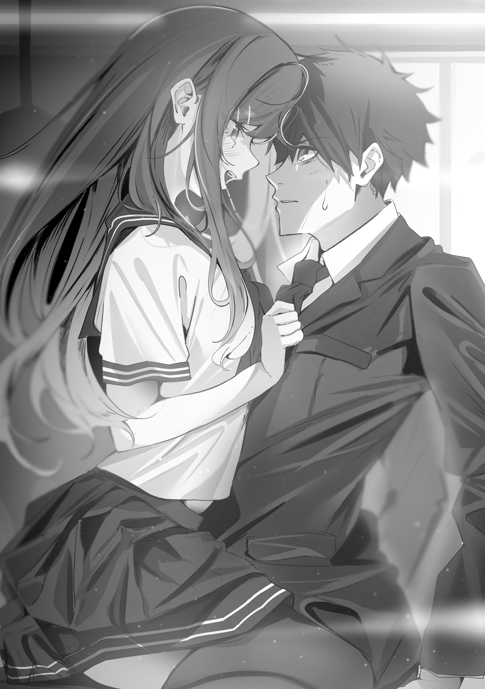
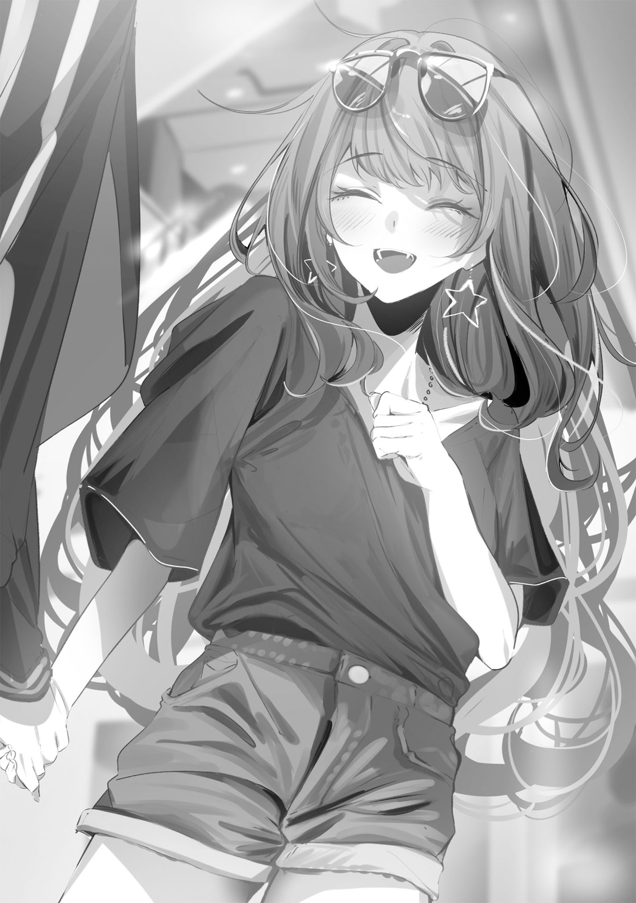
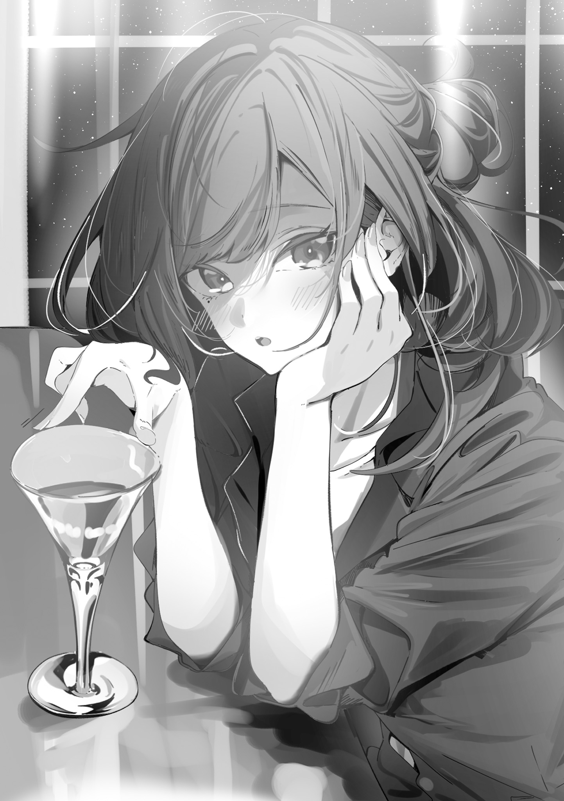
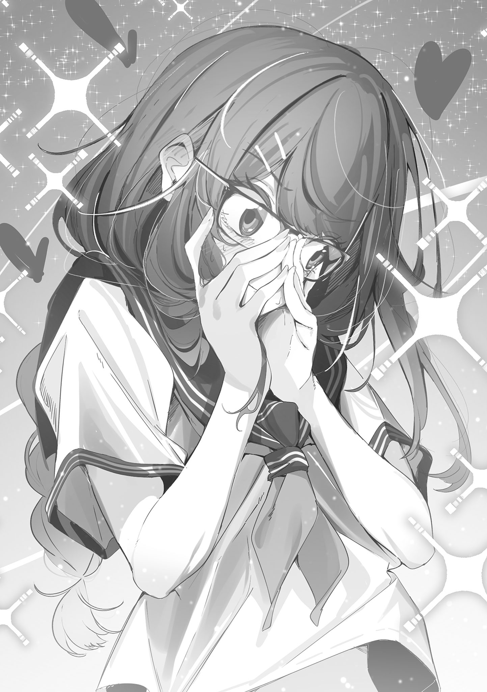
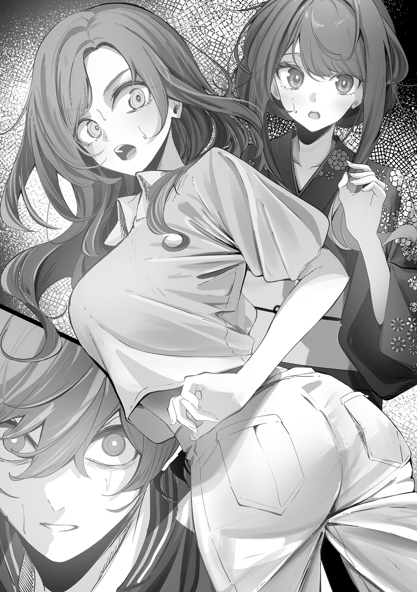
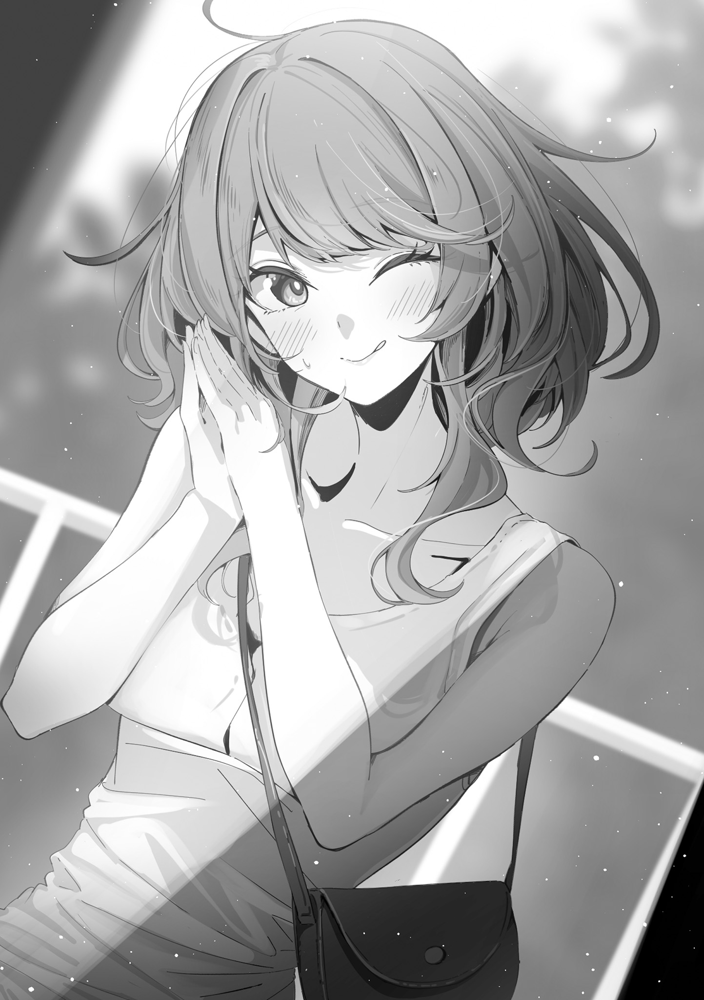
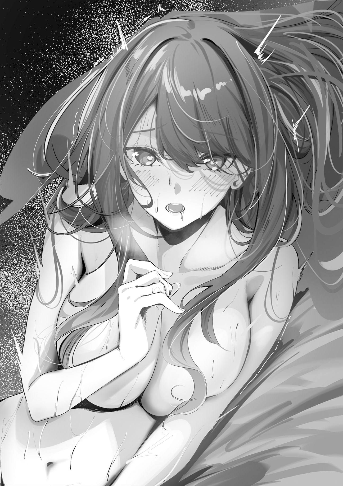

本電子書籍を示すサムネイルなどのイメージ画像は、再ダウンロード時に予告なく変更される場合があります。
本電子書籍は縦書きでレイアウトされています。
また、ご覧になるリーディングシステムにより、表示の差が認められることがあります。
０．好きなもの：悪戯・悪い恋
現代社会において、「このひとだけは自分を裏切らない」と信じられる相手というのは、どういう関係の人物だろうか。
ひとによっては、家族と答えるかもしれない。友人だと言うかもしれない。恋人かもしれない。夫婦だったら、妻や夫、子供と答える可能性もあるだろう。
俺はまだ独身だから、奥さんとは言えない。ついでに言えば、学生時代に付き合っていた彼女から「他に好きなひとができた」とフラれた苦い経験もあるので、恋人と言うのもためらわれる。
家族にも人並みに愛情はあるけど、「絶対に裏切らない相手」という観点で考えると、いまいちピンと来ない。
友達はそれなりにいたはずだが、卒業してからも密に連絡を取り合っている奴は、今のところいない。職場の先輩や同僚と信頼を築けるほど、コミュ力は高くない。
そんな俺だけど、「こいつだけは、俺を裏切らないかもしれない」と思える相手はいる。
「先生、ちょっといいですか？」
時間は放課後だ。終礼を含むホームルームが終わって、廊下を歩いているときに、後ろから声が掛かった。
振り返ると、制服姿の桐原灯佳が立っていた。冴えない太縁メガネのレンズ越しに、俺を真っすぐ見つめてきている。長い髪が窓から差し込む光を受けて、一部が白く光っていた。
「視聴覚室の鍵、一緒に職員室へ取りに行ってもいいですか？」
鍵は、教師の監督の下でしか渡せないことになっている。
「授業で使ったディスク、先生が教室に忘れていったんですよ。戻しておこうと思って」
桐原は高校二年生で、生徒会長も務めている真面目な生徒だ。学業優秀で、学校サイドからの信頼も厚い。今年、春に赴任してきたばかりの俺とは大違いだ。
「わかった」と頷いてやると、にこっ、と桐原が微笑む。
「ありがとうございます」
軽く会釈するように顎を引くと、長くて綺麗な髪がさらりと流れる。
桐原が隣に並ぶのを待ってから、職員室に向かって歩き出した。
「先生に返さず、自分で返すあたりが桐原っぽいな。気が利くし、真面目だ」
「空気を読む力だけで生徒会長になったから、そうじゃないと務まらないです」
褒められても謙遜せず、堂々としている。
自分に自信がある姿は、年下ながら立派なものだと思う。俺にはない姿勢だ。
職員室へ入って、鍵の保管場所へ向かう。
「お、桐原か。どうした？」
途中、男の先輩教師が桐原に声を掛けた。桐原は同じ説明を繰り返して、先輩を唸らせる。
「相変わらず気が利く奴だ」
「いえ、そんなことないですよ」
さっきの俺と同じように褒められたのに、今度は上手に照れてみせた。俺以外に対して、彼女は自信を大っぴらにしない。うまく使い分けている。視聴覚室の鍵を受け取った桐原は丁寧にお礼を言って、「生徒会の仕事が終わったあと、返しに来ます」と廊下へ出て行った。
「感心、感心。みんな、ああだと楽なんですがね」
先輩教師の呟きに俺は苦笑する。同意と否定が半々の苦笑だ。
直後、ポケットの中でスマホが震えた。画面を見ると、メッセージの通知が来ていた。差出人は「ＡＲＩＡ」。
『待ってるから、来てね』
「……学級日誌を書く前に、少し散歩してきます」
隣の席の先生に声を掛けて、廊下に出る。
それから、ぐるりと遠回りをして職員室から視聴覚室へ向かう。
散歩をするのは俺の趣味だ。朝礼で自己紹介をしたときに言ったから、生徒も先生たちもみんな知っている。からかってくる生徒はいるが、怪しんでくる奴はいない。
視聴覚室に到着したあと、ドアをそっと開く。鍵は開いていた。
入ったあと、スマホで『来た』とメッセージを返した。
「いらっしゃい」
メガネを外した桐原が、机の下からひょっこり現れる。用心深く隠れていたんだろう。彼女はそのままドアまで歩き、かちゃり、と内側から鍵を閉める。
これで、ここには誰も入れない。
俺たちだけの密室だ。
「何回やってもドキドキするよねぇ」
くすくすと笑う桐原には、真面目な優等生っぽさがギリギリ残っている。
でも、悪い子の成分もだいぶ強めに出ていた。そして、メガネを外した桐原は目鼻立ちが整った美人さんだ。印象が全然違う。
「あんまり繰り返すとバレるぞ……」
「大丈夫だよ。先生が授業で使ったディスク忘れてたのは、本当だし」
近付いてきた桐原は、俺の目の前に立つ。ワンテンポ置いたあと、ばふっ、と胸に頭を押し付けてくる。
「んー……先生の匂いだね。落ち着く」
二、三回すぅはぁしたあと、身体を離す。
「学校で自分が受け持つ生徒と密会。……興奮する？」
「悲しいかな、それなりに」
「うんうん、正直でよろしい。先生もだいぶわかってきたね！」
「諦めてきた、の間違いだろ」
声は潜めているが、誰かに聞かれやしないかとドキドキしていた。性的興奮よりも、社会的に抹殺される恐怖の方が、はるかに上回っている。
「ノリが悪いなぁ。さっさと割り切って楽しんじゃえばいいのに」
桐原は良い形の唇を、にっ、ともっと良い形に歪ませていく。やけに色気のある微笑みだった。俺より年下のくせに。
「今日ね、ちょっとだけ香水つけてるの。お昼休み、カナちゃんが『会長もオシャレしましょうよ～』って、強引に……知ってるでしょ？ 生徒会の後輩、カナちゃん」
言いながら、桐原の細い指が首元のスカーフに伸びる。
桐原はそのまま、スカーフをほどく。
やめろ、と言うべきだったけど、その一言は俺の口から出ない。出せない理由があった。
黙っている間に、桐原は胸元を大きく開く。
瑞々しい肌と、少しだけ下着が見えた。着やせするタイプだから、服をむいた桐原は大人の身体と比べても全然、見劣りしない。
「谷間にちょこっと振りかけたの。……なんの香りか、わかる？」
俺の頭を絡め取るように腕が伸びてくる。後頭部に添えられた手がクイっと引き寄せてきた。
「どう？」
「……柑橘系？」
「アタリ。いい匂いだよね」
俺の後頭部に添えられるのが、手から腕に変わった。桐原は俺の身体を引きながら、机に腰掛ける。俺は中腰になったまま抱き寄せられて、頭を丁寧に撫でられる。柔らかい肌の感触と体温に顔をうずめながら、なすがままだ。
「私の身体、気持ちいい？」
「……まぁ」
「ふふ、よかった」
桐原はぎゅうっと俺を抱き締める。桐原も、俺の感触をじっくり味わっているようだった。
「なんで人肌ってこんなに気持ちよくて安心するんだろね。不思議だよ」
不意に、桐原の拘束が解かれる。
けど、それも束の間。指が俺の首を撫でて、顎に添えられて、軽い力で上を向かされる。
そのあと、桐原はためらいなく顔を近付けて、キスをしてきた。
触れるだけのキスなんかじゃなくて、舌が思い切り、唇を割ってくる。
舌先を舌先で押しつぶされたから、仕方なく応える。
そうしないと、あとが怖い。桐原はキスにうるさいんだ。
舌を絡め合って粘膜をこすり合わせていると、時折、艶めかしい鼻息が漏れてくる。んっ、と細い喉から漏れ響いてくる息継ぎの気配が悩ましい。
それらを聞きつつ、俺は仕事のことをあれこれ考えて、気を紛らわせる。本来は年上として、教師として、模範であるべきだ。教え子の桐原に好き勝手にやられてはいけない。そんな、男の意地と見栄だった。
むっ、と桐原が一度唸って、唇を離す。俺を、じっと見つめてくる。
「ふぅん……まぁ、いいけど？」
俺の返事を待たずに、再び唇を貪ってくる。
さっきよりも激しく舌をこすり合わせてきて、吸い付いてくる。俺が応えるんじゃなくて、俺の心と思考を引っかき回す動きだ。
（……まずい）
仕事のことを考えてやり過ごそうとしているのに、集中できない。俺から余裕を奪った桐原は、脇腹に指を這わせてきた。不意打ちだったので、びくりと身体を跳ねさせてしまった。不覚だ。そのまま、シャツの上から肋骨と肋骨の間をフェザータッチで撫でて、攻撃してくる。
くすぐったさと、自覚したくない感覚が交互にやってくる。意地を見せたかったけど、仕事のことを考える余裕はもうない。息も、少し乱れてしまっている。
「んふふっ」
嬉しそうに喉を鳴らした桐原は激しかったキスを優しいものに変えて、頭を撫でてきた。
それから、脳を溶かすように、口内を隅から隅までたっぷりねぶられる。かと思えば、やっぱり押しつぶしてきたり、舌の裏を撫でてきたり、色々やってくる。
……悲しいかな。長いキスから解放してもらえたころにはもう、俺の身体はすっかり出来上がってしまっていた。
「先生ってば、ほんっと可愛いんだから」
至近距離で満足そうに俺を見つめる桐原は、うっすらと上気している。目尻がとろんと下がって夢心地だ。メガネを外した桐原は本当に、別人のように色っぽい。
授業中やホームルームでは絶対に見せない顔だった。
俺が知る限り、俺だけが知る、俺だけに見せる、桐原の裏の顔だ。
学校で一番と言っても過言ではない才女。おまけに生徒会長だけど、キスもするし、甘えてもくるし、身体を触らせてもくる。触ってもくる。
俺の人生を壊す可能性がある爆弾が、動いて、息して、誘惑してくるのだ。
「ね、ヤっちゃう？」
「……ヤんない」
それだけは、絶対に同意できない。してはいけないんだ。
「強情だなぁ」
口では拒否しているけど、俺が欲情しているのは見抜いているんだろう。
自信たっぷりに桐原は続ける。
「私はいいんだよ？ 先生のこと、好きだし」
頰を撫でながら、破滅を囁いてくる。
「楽になると思うけどな、色々と」
年上として、教師として、大人として、とてつもなく悔しいけど、それは魅力的な誘いでもあった。ただし、この誘いは破滅とワンセットだ。
矛盾するようだけど、だからこそ魅力的なのだ。桐原は。
たちが悪いことに、本人はそれを全て自覚している。
桐原に限らないことだけど、この年頃の女子は自分の価値をはっきりと自覚している。
それを惜しげもなく押し付けてくる桐原は……厄介な『子供』であり、厄介な『女』なのだ。
でも、バレたら彼女もタダでは済まないだろう。俺ほどではないけど。
だからこそ、俺は信頼できる。
もしかしたら、こいつだけは俺を裏切らないかもしれない。
唯一、そう考えることができる相手なのだ。
俺たちは歪な形で、強固な信頼関係が結ばれている。
秘密を共有する共犯者というのは、きっと、そういうものなんだ。
「ね、先生。ヤラなくていいから、もっかいキスさせて」
俺に拒否権はない。
しばらくの間、砂を嚙むような心地で桐原に従った。

＊＊＊
数年後。
俺と桐原は時折、馴れ初めを尋ねられることになる。
俺たちは二つの答えを用意しなくてはいけなかった。表と裏。噓と真実だ。
一部の信頼できる人間に本当のことを語るとき、俺は決まって、こう切り出す。
「恋愛依存の教え子と、秘密の悪い恋をしていた。全部、そこから始まったんだ」
隣に座る桐原は、そうだね、と優しく微笑み、俺がする馴れ初め話を心地よさそうに聞き続ける──。
１．好きな香水：柑橘系
羽島銀。男性。二十四歳教師。特別な力は、何もない。
いたって平凡な新米教師に過ぎない俺が、どうして桐原とこんな関係になったのか。
そいつをわかりやすく説明するには、やっぱり、最初から丁寧に、順を追って説明するのが一番効果的だと思う。
全ての始まりは俺がまだ大学生だったころのこと。
俺が今まで生きてきた中の、絶頂期だ。
実家は一人暮らしの俺に仕送りをしてくれる程度に太く、勝ち組に分類される有名な大学に通っていた。三回生になると単位はほとんど取り終わる。余った時間は週三、四日程度のバイトに当てて、合コンがきっかけで付き合い始めた彼女とうまくやりつつ、勝手気ままに過ごしていた。
四回生になってすぐ始めた就活もうまくいき、一流企業への内定もあっさり決まった。
まさに前途有望。悠々自適の大学生活。卒論も早々に目途をつけて、遊びまくっていた。
「他に好きなひとができた」と言われて彼女にフラれたけど、ちょうどマンネリ化していて、二人で会うよりもひとりでいる時間が恋しくなっていたから、時期としてはちょうどよかった。
というのも、そのころの俺はゲームにハマり始めていた。
ネットゲームってやつだ。
社会人になるとがっつり遊べないから、今のうちに──と始めた趣味だったけど、多分に漏れず、のめり込んだ。
バイトがない日は朝から晩まで、ずっとログインして、ずっと遊んでいた。バイトがなければ間違いなく引きこもっていた。
少人数で強敵を倒したり、ダンジョンを攻略したり。いわゆる『狩猟ゲー』と呼ばれるジャンルに近いゲームで、気の合う何人かのメンバーと毎日毎日、飽きもせずに遊び続けていた。
その中のひとりに、「ＡＲＩＡ」という女性キャラを使うフレンドがいた。
夕方から夜にかけてプレイするひとで、昼間はバイトで家を空ける俺と、遊ぶ時間帯が一致していた。
長く一緒に遊んでいると、相手の情報にも詳しくなっていく。
「ＡＲＩＡ」は大学の二年生。女性キャラを使っていても中身が男性ってことは多々あるが、彼女は自分のことを「女だよ」と言っていた。
そう言われても話半分にしか聞いていなかったけど、チャットをしているうちに「本当なのかもな」と思い始めるようになった。もしも噓だったら、大した演技力だな、と思う程度に「ＡＲＩＡ」はゲームの中でも女の子していた。
アップデートで可愛い系の装備が出ると必ず「取りに行こう」とせがんできたし、俺の助力で手に入ると「ありがとう！」とハートマーク付きで感謝してくれた。その程度だったら信じなかったかもしれないけど、仲が良かったせいか、彼女は私生活の悩みもちょいちょい、俺に相談するようになっていた。
学校のことだったり、親とケンカしたっていう深刻度の高いものもあれば、「やばいちょっと太った。いい運動ない？」みたいなしょうもない相談もあった。そうしているうちに、「本当に年下の女の子かもな」と思うようになっていったんだ。
『ＧＩＮは相談に乗るのが上手だよね～。つい色々と話しちゃう』なんて言われると、俺も気分がよかった。
ゲーム外で連絡先を知っていると誘いやすくなるから、と言われて、メッセージアプリのアカウントも交換した。そうなってからは、ゲーム外でも連絡を取るようになった。
そんな中、「ＡＲＩＡ」の中身が女の子だとわかる決定的な出来事が起こる。
『ちょっと、電話していい？』
別にいいよ、と返事をした。電話番号は交換せずに、メッセージアプリの通話機能で初めてお互いの声を聞いた。
「はじめまして」と少し緊張気味に話す「ＡＲＩＡ」の声は、確かに女の子のものだった。
緊張したのは最初だけで、話しているうちにゲームのチャットと同じくらい、リラックスして話せるようになった。
次の日はバイトも休みだったから、彼女の気が済むまでずっと話し続けた。夜の十時から深夜二時くらいまで話したあと、ようやく電話を切った。けど、その後もアプリでメッセージのやり取りが続いた。
『長話しちゃってごめんね。色々とわがまま聞いてくれて、ありがと』
『いや、別に。俺も楽しかった』
『ほんと？ よかった！ わがままついでに、もうひとつお願いを聞いてもらえない？』
『何？』
『ＧＩＮの顔、見てみたいな』
いきなり言われたら絶対に断っていたけど、楽しく話したあとだったから、断らなかった。
深夜帯特有のテンションも作用していたと思う。
適当に自撮りして送ると、返信はすぐに届いた。
『ありがと。写真、見たよ。どうしよ。ちょっとタイプかも』
『お世辞でも嬉しいよ。ありがとう』
『お世辞じゃないってば！』
それを証明するために、と「ＡＲＩＡ」は自分の写真を送ってきた。
顔は写っていなかったけど、けっこう、キワドイ写真だった。ノーブラで肌着だけ。胸の谷間を意図的に強調した、挑発的な写真だった。染みひとつない足を撮った写真も届いた。
『ネットで拾ってきた写真じゃないよ』と、ゲーム画面も一緒に写してくれたりもした。
『サービス、行き届いているなぁ……』
『でしょ？ 私、デキる女ですから』とドヤられた。
そんなやり取りをした俺たちだったけど、電話をしたのも写真を送り合ったのも、これっきりだった。
相談に乗っている最中に『電話で聞こうか？』と俺から尋ねることもあったけど、彼女の方から断られた。
『あんまり甘えすぎると、本気になっちゃうから。そうなるとつらいかもだし』と言われて、俺も深追いしなくなった。俺と「ＡＲＩＡ」は、ただのゲーム仲間に戻った。
それからおおよそ二年後。二十四歳の春、俺は高校教師になった。
大学卒業してすぐじゃないのは、新卒で入った一流企業を半年でドロップアウトしたからだ。
「……先生？ 羽島先生？」
隣の席から声が聞こえて、ハッとなって振り返る。
椅子に座っている女性が、俺の様子を心配そうに、注意深く窺っていた。
「大丈夫ですか？ なんだか、ぼうっとしていましたけど……」
「……すみません、暮井先生。勤務中なのに」
バツが悪そうに答えると、暮井さんは大人っぽい柔和な笑みを浮かべながら、上品に笑い飛ばしてくれた。
「いいんですよ、そんなの！ もう授業も終わって放課後だし、今日は職員会議もないし……小テストの採点、終わったんでしょう？」
視聴覚室で桐原と別れたあと、職員室に戻って、手早く済ませた。
放課後は、会議がなければ自分のペースで事務仕事をしていい時間だ。
部活動の顧問をやっている先生は忙しいけど、幸いなことに、俺は何も担当していない。
暮井さんは、なおも俺に話し掛けてくる。
「別に声を掛けるほどのことじゃなかったんですけど、羽島先生があまりに遠い目をしていたものだから、気になって」
暮井さんは、俺の指導教員だ。教師生活六年目で、担当科目は俺と同じ現代国語。
一般的に、新米教師の面倒は同じ科目の教師が見ることになっているそうで、俺が赴任した『森瓦学園』も例外ではなかった。暮井さんは席も隣だし、歳も先輩だらけの職員室の中では、一番近い方だ。生徒たちにも評判がいいし、授業も丁寧で……あと、めちゃくちゃ美人だ。職業柄、服装も化粧も地味におさえているようだけど、着飾ればとんでもなく映えるはずだ。
俺に対しても、赴任初日からとても親身に色々と気遣ってくれる。理想の先生と言っていい存在だ。
「何か、昔のことでも思い出していたり？」
「えぇ、まぁ……前の会社のことを、少し」
大半は「ＡＲＩＡ」とゲームをしていたころの振り返りだったけど、まったくの噓でもない。
暮井さんの整った顔が、途端に曇った。
「……つらかったこと？」
「残念ながら、前の会社の記憶に良かったことは存在してないですね」
冗談抜きに、入社直後からまるでいいことがなかった。
入社式を終えたあと、泊まり込みで同期と新人研修を行うはずが、研修初日に高熱を出し、ホテルで寝込んだのがケチのつき始め。
熱は一週間下がらず、俺の研修は寝ているだけで終わった。
当然、同期とは差がつく。
同じ部署に同期は三人いたけど、その中で俺だけが上司に嫌な顔をされて、𠮟られ続けた。
──いったい、お前はなんのために会社に入ったんだ。
──いつまでも学生気分でいられちゃ困る。
まずいことをやったのは俺自身が一番よくわかっていたし、なんとかしたいと考えていたのも、俺が一番だったはずだ。自分の人生で、自分の失態だから、自分が取り戻さなくちゃいけなかった。
けど、間違ったことをするたび、同期がわかっているのに俺だけがわかっていないことを質問して罵られるたび、だんだん、静かにミスをし続けるようになった。
最初は同情していた同期も呆れたのか、矛先が自分に向くのを嫌がったのか、俺を避けるようになる。
そこからは、あまり記憶に残っていない。
俺の評価は『入社時の筆記テストはトップだったけど、勉強しかできない使えない奴』から変わることがなかった。結局半年で会社を辞めて、残り半年は、実家で療養した。
その辺りの事情は、指導教員の暮井さんと校長にだけ伝えてある。
部活動の顧問になるのを見送られたのは、学校からの気遣いだ。
クラスの担任も、主担任は産休中の先生で、俺は副担任になっている。仕事内容は担任と変わらないけど「肩書きがないだけでだいぶ違う」という配慮だそうだ。
十分すぎるほど優しくしてもらっているのに、暮井さんはまだ俺を心配してくれる。
「あまり、引きずらないようにね」
「ありがとうございます。……なんか、すみません」
「別に。何も」
暮井さんが軽く首を振る。
「そういえば、明後日は私の授業を見学する日よね？」
「えぇ。勉強させてもらいます」
「嫌だなぁ……羽島先生、教えるの上手だから、もう参考にするところなんてないのに」
暮井さんは、最初に話し掛けてくるときは俺に敬語を使うけど、話をしているうちに、後輩相手の口調に変わっていく。
どちらかと言えば、俺はこっちの方が気楽だった。職場の先輩より、隣の席のお姉さんの立場で喋ってもらえた方が、緊張しなくていい。
「羽島先生のプリント、校長先生と教頭先生にも見せたんだけど、好評なのよ。普段なら『プリントは便利で楽だけど使い過ぎるな』って言うひとたちなのに、何も言わないの。きっと、地頭がいいからまとめるのが上手なのね」
「……ありがとうございます。励みになります」
たぶん、褒めるためにこの話題を選んでくれたんだと思う。
つくづく、俺なんかにはもったいない先輩教師だ。
「クラスの生徒たちとはどう？ うまくいってる？」
「あんまりですかね。面と向かって文句は言われてないですけど、ナメられているなぁ、って感じるときがたまにあります」
生徒たちが俺自身をちゃんと見てくれたのは、最初の三日間だけだった。
クラス替えのあと、生徒たちはどんな先生、どんな担任でも、この期間だけは絶対に言うことを聞く。『黄金の三日間だ』と教育論の本に書いてあった。まさに、その通りだった。
「最初の三日が過ぎると、生徒たちは俺のことを見なくなりましたね。俺を通して学校の言うこと、大人の言うことは聞くけど、俺自身や、俺の言葉には価値がないと判断したようです」
暮井さんは、神妙な顔で頷いた。
「新人のつらいところよね。あの年頃の子たちって聡いし、残酷だから」
優しい暮井さんだけど、俺がナメられていることは否定しない。
「誰もが通る道よ。でも、ちゃんと現状に気付けているあなたは立派だわ」
結局、褒めてくれる。さすがだ。
「暮井先生も経験した苦みですか？」
「えぇ、もちろん」
「どうやって乗り越えました？」
「無理なものは無理、って諦めたかしら」
「……その答えは、意外です」
「だって、じたばたしてもどうにもならないもの。極端な話、一年が経てば、またクラス替えがある仕事だしね。引きずらないのは立派なスキルよ。まったく悩まないのもよくないけど、最善を尽くしたら、あとは私にはどうにもできない。不可能な領域だって思うのも大事」
でも、あながち間違いでもなかった、と暮井さんは続ける。
「だって、私たちの相手って、子供だけど人間だもの。思い通りになんていくはずないのよ」
「……なるほど。さすがです。いいお話をありがとうございます」
暮井さんは謙遜せず、「どういたしまして」と返してきた。このひとはやることなすこと、本当に全て大人だ。
「先生って、変な職業ですよね。俺みたいな奴でも、なった瞬間から先生になる。新米で頼りなくても、自信がなくても大人にならなきゃいけない」
「それ、鉄道会社に就職した大学の同期に話したら『私だって一緒よ』って返された」
「確かに。自分が乗ってる電車を運転している人間は新人だろうが、プロとして見ますね」
「そういうこと。虚勢も時には大事よ。とりあえず、生徒たちも人間なんだから、クラスで波長の合う子を見つけて、信頼関係を築くところから始めてみるのはどう？ 素直に言うことを聞いてくれる子もいるでしょ？ 桐原さんがそうなんだっけ？」
ちくり、と胸の奥が痛む。
「変わらず、うまくいってる？」
「えぇ、まぁ」
「あの子に気に入られているなら大丈夫よ。味方につけておけば、最終的に生徒をうまくまとめてくれる。大事故にならないわ」
「そうですね」
学校と暮井さんは、俺によくしてくれている。とても気遣ってくれている。
俺がさっき、視聴覚室で桐原としていたことを知ったら──がっかりさせてしまうだろう。
「でも、彼女はあくまでも生徒。わかってると思うけど、親密になり過ぎないようにね」
「えぇ。心得ています」
……本当に、申し訳ない気持ちと恐怖で、胸がいっぱいだった。
後ろめたい気持ちを抱きながら、桐原を完全に拒めないのにはワケがある。
学生から社会人になって早々、会社で居場所を失った俺だったけど、完全に生き甲斐を失ったわけではなかった。
職場での居心地は最悪だったけど、一流企業だったから勤怠管理はしっかりしていて、昨今問題視されるような無茶な残業はなかった。
家には一応、帰れていたのだ。
会社から数駅離れたワンルームのマンションは帰宅しても暗くて冷たかったけど、俺の帰宅を待ってくれているひとはいた。
『そろそろ帰ってきた？ 遊べる？』
帰宅時間を見計らって、「ＡＲＩＡ」はいつも俺にメッセージを送ってくれた。
基本的に、俺は誘いに応じて彼女と遊んだ。
最初は、会社での遅れを取り戻す勉強をしたくて断っていたけど、上司からの当たりが強くなり、抱え込む感情が大きくなるにつれて「ＡＲＩＡ」と過ごす時間は増えていった。会社に行きたくなくなると、ずるずると深夜まで遊ぶようになった。
いま思えば、それが原因で仕事のミスも増えていたので、完全に悪循環だった。でも、あの時間がなかったら、俺は死んでいたかもしれない。
『ちゃんと、学生から社会人へ──子供から大人になりきれなかった』という負い目もある。
その一方で、『あれが、あのときの限界だった』という確信めいた感情もある。
結局、半年で会社を辞めることになり、実家へ戻ったあとも「ＡＲＩＡ」との交流は続いた。
仕事がうまくいってなかったことや、仕事を辞めたことは、彼女には言わなかった。
彼女の前では、大人のフリをしたかった。
つまらない見栄だったけど、俺に残った最後のプライドだった。
会社を辞めて数ヶ月はぼうっとしていたけど、いつまでも実家の世話になるわけにもいかない。次の仕事を探す過程で俺が最終的に選んだのは、大学で取得していた教員免許の活用だった。『勉強』しかできない俺でも、勉強ができるなら、ある程度評価されるんじゃないか──そんな考えで選んだ。
結果は、知っての通り。
教師が勉強できるなんてのは当たり前のことなので、俺は三日で生徒にナメられるようになった。
でも、前の会社でやらかしたときほど、落ち込まなかった。
もともと、情熱を抱いて教師になったわけではないから。
別にがんばらなくてもいい。今は必死に仕事をするより、死なない程度に仕事をして、生きていく土台を作れたら、それで十分。そう構えていた。
多感な生徒たちは、俺の本質を少なからず感じ取っていたはずだ。
なのに、桐原は──生徒会長の桐原だけは何故か違った。
勉強はできるが、特にオシャレをすることもなく、地味な部類に入るメガネ女子。物静かな方で、真面目で気弱そうなキャラのせいか、よく面倒事や用事を押し付けられる。
俺のような、不真面目な気持ちを奥底に抱えている教師を嫌いそうな彼女は、何故か俺に笑顔を向けて、懐いてくれた。
授業の合間や、学校ですれ違ったとき──何気ないときに、愛想笑いとかではなく、本当に、そうなのだと感じ取れる笑みと愛嬌を俺に振りまいてくれた。
その理由を知ったのは、俺が事務仕事の合間に、ふらりと校内を散歩しているときだった。
生徒会室の前を通ったとき、偶然、仕事を終えて帰ろうとしていた桐原とばったり会った。
「こんな時間まで生徒会の仕事か？ 大変だな」
「いえ……先生もお疲れ様です。まだ帰らないんですか？」
「明日の授業の準備が、まだちょっと残っている。休憩中なんだ」
桐原は少し考えたあと、あの、と意を決したように口を開いた。
「クラスのことで少し相談があるんですけど、生徒会室で話せないですか？」
深刻そうな口ぶりだったので内心、ドキリとした。
──まさか、クラスでイジメでもあるのか？
そういうハードな話題にはなるべく触れたくなかったけど、断るわけにはいかなかった。
相談してきた相手が桐原というのも大きい。彼女にはあまり、嫌われたくない。
生徒会室に入ると、桐原は内側から鍵を掛けた。
「誰にも聞かれたくないんです」
いったい、なんの話をされるのか──。
身構える俺に顔を向けず、桐原は自分のスマホをいじって、手早く操作を終えた。
すると、俺の携帯が震えた。
「先生の携帯、鳴りました？」
「ん？ あぁ……でも、今は桐原の話の方が」
「いいです。確認してください」
にこりと微笑む桐原に若干の違和感を覚えつつ、スマホを確認した。
「ＡＲＩＡ」からだった。
『桐原灯佳の前にいるのは、ＧＩＮだよね？』
……。
……フリーズした俺は、ぎこちない動作で桐原を見た。
ニィッ、と笑った桐原は、こちらを見つめながら、とん、と彼女が持っているスマホの画面をタップした。
俺の手の中で、俺のスマホが震える。
メッセージアプリで、「ＡＲＩＡ」が電話を掛けてきている。
桐原は、俺に自分のスマホの画面を見せつけてきた。
「繫がっちゃったね」
人間っていうのは心の底から驚いたとき、本当に凍り付いてしまうのだと初めて知った。
「噓だろ？」
「噓じゃないよ。ＡＲＩＡだよ。ごめんね。本当は最初から気付いてたんだ」
変な話じゃない。彼女には一度、写真を送っている。
「でも、大学生だって……」
「ごめん。あれは噓」
「一人暮らしって、言って……」
「それは本当」
「高校生なのに？」
「放任主義の両親で、ちょっと複雑なご家庭なの。今時、珍しくないでしょ？」
そう、なのだろうか。
うまく頭が働かなくて、言葉が出てこなかった。
おまけに、桐原の雰囲気はいつもと違った。
「嬉しかったよ。だってＧＩＮと会えたんだもん」
一緒にゲームをして、電話をしたこともある「ＡＲＩＡ」と桐原はまったく似つかない。
「ＡＲＩＡ」は甘えたがりで、奔放で、明け透けな性格だ。クラスの桐原とは正反対と言ってもいい。
「私と会えて嬉しい？」
「それは……うん」
精神的に落ち込んでいたとき、生き甲斐になってくれた女の子だ。
戸惑ってはいるけど、会わない方がよかった、とは思えない。
「よかった。でもまさか、ＧＩＮが先生になってるとは思わなかった。しかも、自分のクラスの担任！ すごくない？」
「……びっくりだよ」
冗談抜きに、奇跡のような確率だ。
こういうときは、いったいどうすればいいんだ？
「私がＡＲＩＡだと困る？」
桐原は回り道をすることなく、核心に切り込んできた。
「……立場上、どうしても、そうなる」
歳も近く、趣味も同じ。こんな状況でなければ、付き合ってみたいとすら思っていた相手だが、生徒となれば話は別だ。友人として接するのだってためらいがある。
「教師としては、他の子と同じように接しないとまずい？」
「あぁ」
内心、ホッとした。桐原は、やはりちゃんと桐原だ。
よくわかってくれている。──ところが、そうではなかった。
「そっか。でも、それだと私がつまんないんだよねー。二人きりのときだけでも、ちょっと楽しい仲になれない？」
「ごめん。それは、勘弁してくれ」
情熱はないけど、最低限の常識はあるつもりだ。
「いいじゃんー。アプリで写真のやり取りした仲でしょ。私のエッチな写真、まだそのスマホに入ってる？」
痛いところを突かれて、黙ってしまった。
「あ、大事にしてくれてるんだ？ 嬉しいなー。ふふふ」
惜しいが、あとで消そうと決意した。
「桐原、ちょっと、落ち着いて話そう」
「ううん。ごめんね、先生。もう遅いよ」
桐原はセーラーの胸ポケットから何かを取り出した。
四角い形をした、薄型の妙な機械だ。手のひらより少し小さいくらいの大きさで、ちかちか、と赤いランプが点滅している。
「これ、ボイスレコーダー。録音してたの。ごめんね」
桐原は軽く舌を出しながら、可愛らしく両手を合わせて会釈した。
やっていることは、全然可愛くなかった。
取り上げるために足を動かして手を伸ばしたけど、桐原は身を引きながら手早くスカーフを緩めて、ボイスレコーダーを自分の胸元に潜り込ませてしまう。
下着の中だ。
う、と喉の奥から呻き声が漏れる。こうなっては手が出せない。
「ＧＩＮは、やっぱり優しいなぁ。だから好き」
どんな経緯であれ、生徒の半裸を写した画像を持っていると知れたら、タダでは済まないだろう。
あのデータがある限り、俺は桐原に逆らえない。
表向きは品行方正な生徒の、秘密の遊び相手だ。
桐原との出会いを振り返りながらだったけど、無事に仕事は終わった。
学級日誌を書いて、小テストの採点をして、来週の授業に使うプリントも作り終わった。暮井さんと期末試験の問題について打ち合わせもしたから、少し遅くなってしまった。
「お疲れ様。土日はしっかり休んでね」
「ありがとうございます。また来週、よろしくお願いします」
手を振ってくれた暮井さんと職員室で別れて、学校を出る。
時刻は午後七時を回ったところだ。
季節は六月下旬。まだ梅雨が明けないけど、今日は晴れている。校門をくぐり、最寄りのバス停まで徒歩で移動する。車内に乗り込んでから、半袖のワイシャツのボタンを緩めて、ぼんやりと窓の外を眺める。着信の振動を感じてスマホを手に取ると、メッセージが届いていた。送り主は俺の元カノだ。別れて数年も経つのに、未だに連絡が来る。
『お疲れ～。そっち、もうアガり？ 私は今、帰りの電車。これから彼氏とディナーだよん。週末は一緒にゴロゴロするんだー』
聞いてもいないのに、勝手に近況を送られてきていた。相変わらずだな、と思いながら適当に返事を返して、再びぼんやりと外を見る。
本来なら、俺も元カノと同じく、ここから休日がスタートするはずだ。でも、桐原と秘密の関係にある俺には、まだやることがある。
二十分ほど揺られたあと、バスを降りる。住んでいるアパートには、バス停から徒歩で五分ほど歩けば到着する。
ワンルームの小さな部屋だけど、クローゼットはついている。ネクタイやズボンをハンガーにかけたあと、すぐに用意しておいた服に着替えた。
スカジャンとダメージジーンズだ。
ついでに、派手な金髪のウィッグも被る。カラーレンズを使った伊達メガネを掛けると、もはや別人だ。俺を知る人間ほど、俺とは絶対に見破れないだろう。
着替えやタオル、歯ブラシといったお泊まりセットが入っているリュックサックを背負い、玄関へ向かう。仕事を持ち帰っているときは、ビジネスバッグから荷物を移動させるけど、今日は持ち帰りがない。荷物が少なくて楽だ。
家を出たあとは、バス停ではなく最寄り駅に向かう。
駅に着いたあとは、ＩＣカードではなく、わざわざ数駅先までの切符を買って移動する。なるべく、証拠を残さないために。
いま向かっている先は、桐原が一人暮らしをしているマンションだった。
電車を降りたあと、少し寄り道をしてから、桐原の家に向かう。
玄関の前で『着いた』とメッセージを送ると、ドアの向こう側でひとが動く気配がした。
鍵が開いて、ドアも開く。
「いらっしゃい」と、放課後に視聴覚室で密会したときと同じ言葉で迎え入れられた。
放課後のときと違うのは、桐原の服装だ。キャミソールと短パンという、目のやり場に困る姿でのお出迎えだった。例の冴えないメガネも外している。
「もうちょっと、ちゃんと服を着ろよ……」
「暑いんだもん。冷房をきつくするの、苦手だからさ」
それは俺も同じなので、あまり強くは言えない。
とりあえず、家の中に入る。
まだ玄関先だけど、この部屋には桐原の匂いが染み付いている。口が裂けても本人に言うつもりはないけど、いい匂いだ。理性を溶かす厄介な香りが充満している。
「ゲームがいいところだから、ちょっと先に進めてくる」
言いながら、桐原は居間の方へ歩いていく。
「夕飯は食べたのか？」
「まだー。先生と一緒に食べようと思って」
そう言われると思って、材料は買ってきてある。電車を降りたあとに向かったのはスーパーだったんだ。
「今日はお弁当じゃないんだ？」
「仕事がないから、ちゃんとしたものを作る」
「やったね！ 先生が作ってくれるご飯、大好きだよ」
料理は、俺の数少ない特技だ。大学生時代、バイトをしていたのは個人経営の居酒屋だった。店主がけっこう凝った料理を出す店で、俺も色々と教えてもらえた。
「ちょっと時間かかるぞ？」
「いいよー。何か手伝ってほしかったら、言ってね」
俺と会話しながら、桐原は慣れた手つきでコントローラーをカチャカチャと操作している。
ソファに深く座り、お腹にビーズクッションを抱いたまま、俺とやっているオンラインゲームをひとりで遊んでいた。部屋の間取りは２ＬＤＫで、部屋自体もけっこう広い。ソファや大きなテレビを置いても、俺が隣で一緒に座ったとしても、全然狭さを感じない。
キッチンも立派だ。調理器具や調味料も俺が買い足したから、一通り揃っている。
「先生の仕事がないなら、今日はいっぱい遊べるね。私も宿題、終わってるんだ。今夜は寝かさないよ？」
「桐原が言うと、意味深に聞こえるなぁ……」
「変な意味じゃないってば。そっちの意味でもいいけどね」
藪蛇だった。大げさに肩をすくめてから、持ってきた荷物を整理する。
「先生もマメだよね。着替えやらタオルやら、いちいち持ってくるのめんどくさくない？ 毎週来るんだから、置いてっちゃえばいいのに」
桐原に弱みを握られてから、週末はずっとここに通っている。土日と祝日だけだが、半ば同棲状態だ。部屋もひとつ余っているから、そこに俺の荷物を置けばいい、と桐原はずっと言い続けている。
「どうせ着替えるために一度は家に寄るし、いいんだよ」
「先生がそれでいいなら、いいけど」
少し不満そうな言い方だったけど、桐原は強制してこない。
この話題に限らず、桐原は弱みを握っているくせに、強権を発動して俺を縛ることをめったにしない。桐原が俺に頼んできたのは次の三つだ。
──週末は、私の家で過ごしてほしい。
──色々な意味で、私の遊び相手になってほしい。
──甘えたいときに、なるべく甘えさせてほしい。
この三つだ。
その気になれば、もっと意地悪な要求はできると思う。
たとえば、金が欲しいとか。
けれど、桐原が欲しいのは、そういうものではないらしい。
寂しいか、ひどく退屈しているか。……もしくは、その両方か。
その辺りだと睨んでいる。
少なくとも、寂しいのは当たっているはずだ。
食事をコンビニ弁当とスーパーの総菜で済ませていると聞いた俺が、初めて料理を作ったとき、桐原は「家庭料理がおいしいって本当だったんだ」と目を丸くして驚いていた。
……いったい、今までどんなふうに育ってきたんだ？
高校生なのに、こんなに広い家で一人暮らしをしていること、両親はおろか、親類を含めた家族の影がまったく見えないことから、普通の家庭環境ではないのは明らかだけど……。
「楽しみだなぁ～。先生のご飯」
鼻歌まじりに言われると、悪い気はしない。
考えても答えが出ない疑問は一度頭から追い出して、料理に集中する。
「ちゃんと作る」と宣言したものの、用意するのはいたって普通の献立だ。
野菜と豚肉を煮込んだ豚汁と、卵焼きと、両面焼きグリルを使った焼き魚。ほとんど使用した形跡がなかったキッチンコンロは、今では俺の心強い味方だ。
なんてことのないメニューだけど、桐原はこういうシンプルな料理をとても好む。
変に凝ったものを作るより、ずっと喜んでくれる。
「よし、ボス倒せた。キリがいいし、シャワー浴びてきちゃおうかな」
「先に入るのか？」
「うん。そしたら、ご飯食べ終わったあとずっと遊べるでしょ？」
無駄のない動きだ。
この小さな積み重ねが、彼女を優等生たらしめているのだろう。
「準備、もう少しかかるから、ゆっくり浴びてきていいぞ」
「はーい」
上機嫌のまま、浴室へ向かう。
……それからまもなく、シャワーの水音と桐原の鼻歌が聞こえてきた。
俺がいるときに桐原が風呂に入るのは初めてではないが、落ち着かないものは落ち着かない。
「……何やってるんだろうなぁ、俺」
桐原のことは、心底嫌っているわけではない。
ゲームは好きだし、桐原と一緒に遊ぶのは正直楽しい。
だからと言って、許される関係とは到底思えない。中途半端なんだ、俺は。
桐原が未成年ではなくて、俺の生徒でもなければ、何も問題はなかったんだけどな。
たぶん理想の相手だ。
世の中は、ままならない。
「っとと」
考えていたら、味噌汁の鍋が吹きこぼれてしまった。
火を止めてコンロを掃除する。俺のモノではないから、汚したままにするわけにはいかない。
風呂場にいる桐原を意識から追い出すために、しばらく料理に集中する。
お皿に盛りつけて準備が整ったころ、チャイムが鳴った。
……今までになかったシチュエーションだ。
出ていいのか？
でも、もしも桐原の友達や親だったらどうする？
さっ、と血の気が引いていくのがわかった。
「あ、ごめーん。たぶん荷物だと思うー。先生、出てくれる？」
風呂場から声が聞こえて、金縛りが解けた。
おそるおそるインターホンの受話器をあげると「宅配便でーす」と名乗られた。長い長い、安堵の息が漏れた。
下駄箱の上に置いてあった「桐原」のハンコを押して、荷物を受け取る。
やけに軽い。差出人は店の名前っぽかった。通販か？
「ありがと。その辺に置いといて」
「あぁ……って、おい！」
振り返ると、桐原は服を着ていなかった。下はさっきと色違いの短パンを穿いているけど、上は何も着ていない。首に巻いてぶら下げたバスタオルがかろうじて胸を隠しているが、ふくらみの輪郭は見えてしまっていた。
「何？」
「頼むから、服をちゃんと着てくれ」
「えーいいじゃん。家なんだし。もう何回も見てるでしょ？」
「そういう問題じゃない。冷房もついてるし、風邪引くぞ」
「先生は真面目だなぁ……そこが可愛いんだけどね」
桐原は胸を隠していたバスタオルを持ち上げて、濡れている髪の毛を拭き始める。
とっさに目を逸らしたから、ギリギリ見なかった、と思う。
桐原はそんな俺の努力にまったく見向きもせず、ダイニングの方へ歩いていく。
「わーっ、ご飯ができてる！ おいしそう！」
桐原の半裸を見るのは、初めてではない。
でも、風呂と一緒で、やっぱり落ち着かないものは落ち着かない。慣れてしまうのも避けたい。そこまでいってしまったら、本当に抜け出せなくなりそうで怖かった。
……たぶん、この気持ちを失ったら、転がり落ちるように、真っ逆さまだと思う。
水を弾く、若さに溢れた瑞々しさを持つ肌には、それくらいの破壊力が十分ある。
「先生、食べようよー。お腹空いちゃった」
「服、着たか？」
「着た着た。キャミだけど」
「髪の毛は乾かさなくていいのか？」
「食べたら、すぐやるよ。おいしいご飯が冷めるのやだ」
普通にしている分には、やんちゃな妹と接しているようなものなんだけどな。
一緒に「いただきます」をしながら、そんな感想を抱いていた。
食事が終わったあとは、お待ちかねのゲームタイムだ。
三時間ほど遊んだところで、桐原が座ったまま、んん～っ、と大きく背伸びをした。
「遊んだー。ちょっと休憩しよ」
玄関の方へ向かった桐原は、さっき俺が受け取った荷物を持ってすぐに帰ってくる。
「服でも買ったのか？」
「うん。私も、先生を見習おうと思ってさ」
言われて、首を傾げる。
最近、新しい服を買った記憶はないし、オシャレをして桐原と会った覚えもない。
「じゃーん！ 見て、これ」
箱を開封した桐原は、嬉しそうに戦利品を見せびらかしてきた。
確かに服だけど、なんというか、パンクなジャンルだった。
桐原の私服は部屋着だけしか見たことがないから、すごく意外だった。
「普段はそういう服を着るんだな」
「いや、着ないよ？ もっと大人しいのを着てる」
そこまで言われて、ようやく気が付いた。
「言ったでしょ。先生を見習おうと思った、って」
「変装用？」
頷いた桐原は、箱からさらに金髪ウィッグを取り出す。茶色もあった。
金色の方を被って、「どんな感じ？」と訊いてきた。
「……別人」
「どれどれ」
てくてく、と部屋の隅に置いてあるスタンド型の姿見へ歩いていく。
「うわっ、マジだ！ おもしろっ！」
金髪と茶髪を交互に着けて、キャーキャーやり始める。こういうところは子供っぽい。
「先生のを初めて見たときも、別人だと思ったもんね。これなら一緒にお出掛けしても大丈夫じゃない？」
秘密を共有するようになってから一ヶ月半近くになるけど、俺はまだ桐原と一緒に外へ出掛けたことがない。
変装をしていても、やはりバレるのは怖かった。
近くのスーパーへ一緒に行くのでさえ、俺が断っていたくらいだ。
「ねぇ、デート行こうよ」
「考えておく」
「やだ。明日がいい。明日」
明日は土曜日で、天気もいいらしい。さっき、洗濯物を外に干す前に調べた。
「近場じゃなくて、ちょっと遠いところでショッピングなんてどう？ ショッピングモール、二人でぶらぶらしてみたい」
「それ、学校の奴らが休日に行くところじゃないのか？」
「そうかもだけど、変装すれば大丈夫だよ。私たちを知っているひとほど気が付かないんじゃない？」
自分も変装をしているとき、同じ思考に至っていたので反論が難しい。
でも、できれば断りたい。うまい言い訳はないものか。
「ねぇー、行こうよー」
「うーん」
桐原は粘ってくる。俺も、言い訳探しを粘る。
「デートしてくれないなら、今晩、襲っちゃうぞ」
とんでもないことを言われたけど、反応しない選択をしてみた。
「本気だよ？」
「それはそれとして、紅茶淹れるか？ あったかいやつ」
「淹れるー」
桐原は紅茶が好きだ。ティーバッグの安いヤツでも、淹れると喜ぶ。
お湯を沸かしている間に、デートの件は流れてうやむやになった。桐原もパンクな服とウィッグをダンボール箱に片付けたし、うまくやり過ごせたはず……。
自分を褒めたい気持ちでいっぱいだ。前世は諸葛孔明クラスの策士だったんじゃないか？
「お茶も淹れてもらっちゃったし、もうちょっと遊びたいな？」
「いいよ」
一時間ほど、日付が変わるまで遊び続けた。
すると、どちらからともなく、あくびが漏れ始める。いくら桐原が若くても、ほぼぶっ通しで五時間近く遊んでいると、さすがに疲れてくるらしい。
「寝るか？」
「うん」
寝る支度を済ませて、桐原と寝室へ向かう。
桐原はベッドに、俺は持ってきた寝袋を床に敷く。
「先生、こっち来てよ」
掛け布団代わりに使っている大きいタオルケットの隅をめくって、桐原が呼んでくる。
「いや、俺はこっちで」
「甘えたい気分なの。甘えさせてくれないの？」
少し棘のある口調だった。言外に、交わした約束の話をしているのだと主張している。
──甘えたいときに、なるべく甘えさせてほしい。
「……変なことしないなら」
「ん」
一応、不可侵条約を結んでベッドにお邪魔する。
桐原に背を向けて寝転がる。枕から桐原の香りがした。
電気が消えて、背中に桐原が密着してくる。腕も前に伸びてきて、抱き枕状態だ。
「ね、さっきのデートの話だけど」
桐原の指先が、俺の唇に触れる。
「私、本気だから」
口の中に二本、指を突っ込まれる。歯の間を割って、舌を指で上下に挟まれた。
「ちょ……」
「嚙まないでね」
有無を言わせない口調だった。逆の手で、俺の首筋や鎖骨をくすぐってくる。笑わせる手つきじゃなくて、そういう気分にさせる触り方だ。
しかも、俺を逃がさないように、腰付近に片足が巻き付いている。うなじや首筋に舌が這うと、うひゃっ、と間抜けな声が自然に漏れてしまう。
「こんなのでも反応しちゃうんだ？ でも、まだまだだよ？」
熱っぽい吐息と共に耳元で囁かれる間、舌は挟んでいる指でぐにぐにされている。
空いている手で色々な場所の反応を確かめられながら、肩や首を甘く嚙まれた。できれば、反応したくない。安いプライドなのはわかっているけど、俺にも男の意地がある。
「いいよ。がんばってみて」
鎖骨のくぼみを撫でていた指が胸の方へ滑っていく。途中、つま先で肌をくすぐられて、また声が出そうになった。なんとか耐えていたら、肩にがぶりと歯を立てられる。これには、さすがに反応してしまった。
「ふふっ。おもしろ」
がじがじ、と歯を立ててくるが、痛みを感じるほどではない。強くしてきたあとは、必ず舌や唇で優しく刺激される。不覚にも安堵していると、今度は吸い付いて別の感触をぶち込んでくる。ぞくりとした感覚に身震いした。そして、舐めたり、嚙んだりをしつこく繰り返してくる。飴と鞭だ。何度かされるうちに、痛いのも気持ちよくなってしまう。身体が汗ばんでいるのが、自分でもわかった。焦りや緊張ではなくて、快楽のせいだ。人間、甘さが約束されているのがわかると、嚙まれたときも期待するようになるらしい。少し、怖い。
「ここも触ってあげるね。されたことあるかな？」
たまらなくなって息を荒くしていると、桐原は耳を攻めてきた。条件反射で逃げようとすると、腰に回っている足の力が強くなる。
穴の中に、舌先を突っ込んで、耳を口に含み、思い切り吸い上げてくる。
脳みそを直接吸われるような感覚が鋭くて、つい声を上げてしまう。身体をよじらせて逃げようとするが、桐原は俺を捕えて逃がさない。鳥肌が立った。
「初めてだったかな。気持ちいいでしょ？」
囁かれたあと、耳たぶを舐められた。唇で挟まれて、キスもされる。
「ごめんね、先生。私たぶん、けっこうエッチ」
知っていたつもりだったけど、わかってはいなかったようだ。ちょっと想像の域を超え過ぎていた。
耳の穴だけじゃなくて、凹凸もしゃぶるように舐められる。
「桐原、もう……」
「だーめ」
プライドを捨てて泣きを入れたが、足の巻き付きは緩まない。喋るな、と言わんばかりに舌も強く指で挟まれた。完全にしつけだった。
どれくらいそうされていたんだろう。
息も絶え絶えの状態になったところで、舌を指できゅっと最後に絞られて、口に入っていた指がようやく引っこ抜かれた。巻き付いてた足や手もするりと抜けて、仰向けに寝転がされる。
下腹部にまたがってきた桐原は、年下とは思えないほど優位を感じさせる目で、見下ろしてくる。桐原も俺も、汗でじっとり濡れていた。
「これ以上やるとさすがに私も我慢できなくなるんだけど、デートとどっちがいい？」
ベッドに沈んでいた俺の右手を探し当てて、俺の指を口元に持っていき、指をしゃぶり始める。飴玉のように舌先で指を転がされているだけなのに、気持ちよかった。
「わかった、降参」
言った途端、楽しそうに微笑まれた。
「やったね。明日は初デートだ」
俺の身体から降りた桐原は隣に移動して、くっついてくる。
「でも、今日こそ落とせるかなって思ってたから、ちょっと残念」
聞こえないふりをして、やり過ごす。
……それにしても、危なかった。
本当に。
最後までしていたら、後悔していたと思う。
●
翌日。俺たちは普段、絶対にしない格好同士でショッピングモールを歩いていた。
休日の商業施設は子連れやカップルで混み合っている。ひとりで歩いている客は、あまり目立たない。
桐原は何を欲しがるわけでもなく、俺と寄り添って歩いている。
手を繫いだり、腕を組んで身体を寄せてきて、たまに俺の顔を見上げて、目が合ったら微笑みかけてくる。そんな感じだ。何も事情を知らない人間からしたら、ライブハウスあたりで出会った普通の若いカップルに見えるだろう。誰も、生徒と先生などと思うまい。
「あ、ちょっとあそこ見ていい？」
桐原が指差したのはファンシーな小物が売っている雑貨店だ。
「いいけど、さっきから何も買わないんだな」
「欲しいわけじゃないからね。でも、見るのは楽しいよ」
小物以外に、安っぽい指輪なんかも取り扱っている店だ。
「こっそりペアリングとかしてみる？」
「勘弁してくれ」
「冗談だよ」
くすくすと楽しそうに笑われる。見た目は派手だけど、仕草は上品だ。知り合いに見られて怪しまれないかと思うのは、ビビり過ぎだろうか。
ひとしきり店を回ったあと、桐原の誘いで通路のベンチに腰掛けた。道行く人々をぼんやり眺めながら、桐原は握っている俺の手を弄んでいる。
「てっきり、何か欲しいものがあって買い物に来たんだと思ってたよ」
「んーん、そういうわけじゃないよ。家にずっといるのも、飽きちゃうじゃない？ それともゲームしたかった？」
「いや……誘われない限りあまり来ない場所だから、新鮮ではある」
「それならよかった。私は、一緒に並んで歩いてるだけでも楽しいよ」
「そうなのか？」
「うん。私がただの良い子じゃなくて、悪い子だって知ってるひとと、こうして過ごすのが夢だったの」
「…………」
「何？ 意外？」
「いや、ありきたりだな、って」
「私らしいでしょ。絵に描いたような真面目っ子」
笑ってはいるけど、どことなく儚さも含んでいる。どうせ一緒に過ごすしかないから、そういうのは少し、取り去ってやりたかった。
「他に、何か憧れてることは？」
「んー……ひとつあるかな？」
桐原は俺の手を引いて、ベンチから立ち上がる。向かったのは、フードコートの一角にあるアイスクリーム専門店だった。
「アプリ入れてると、二つ買ったらシングルがダブルになる。ワンフレーバーずつオマケしてくれるの」
桐原はチョコミントとレモンを。俺はソーダとイチゴにした。俺の方は、桐原の希望も入っている。
買い物が終わると、フードコートに設置されている飲食用のテーブルまで移動して、隣り合って座った。あいにく壁際の席は埋まっていたから、広場の真ん中付近の席だ。
そこでアイスを食べ始める。
けっこうボリュームがあるせいで、コーンまでなかなか辿り着かない。
苦戦していると、桐原がちょいちょい、と袖を引っ張ってきた。
「一口ちょうだい？」
アイスを持っている手を上から握って、俺が食べていたところに口をつける。
冷たい物を食べているのに、桐原の頰は少し赤い。色白だから、すぐにわかった。
「おいしいね。私のもどうぞ」
さっきまで桐原が食べていたところに、俺も口をつける。
ふふっ、と桐原がはにかむ。
「間接キス。憧れてたの」
妙な奴だ。これよりも濃厚に唇を合わせたこともあるのに。
でも、何故か俺もちょっとドキドキしていた。
バレないように顔を背けると、桐原は「えへへ」と笑いながら続ける。
「来てよかった」
照れもあってか、俺と桐原は黙々とアイスを食べることに集中し始める。
時間はちょうどおやつ時で、店内も徐々に混み始めていた。俺たちの前後の列のテーブルも埋まり始めて、広くない通路がさらに狭くなる。
「あのー、すみません～」
不意に、近くで声がした。通路を進もうとしていた若い女の子二人組だ。
「ちょっと通してもらっていいですか？ 奥の、空いている席に行きたくて……」
既に使われている椅子が邪魔で、先に進むのが難しいらしい。
女の子二人組は先客に椅子を引いてもらいながら、こちらへやってくる。
最終的に、俺たちの真後ろの席に隣り合って座った。俺たちと、ちょうど背中合わせになる形だ。俺は、死ぬほど驚いていた。
隣の桐原に顔を寄せて、小声で尋ねる。
（なぁ、後ろの二人って……）
こくこく、と真顔の桐原が頷く。見覚えがある子たちだった。私服だけど、背後にいる二人は、桐原と同じ生徒会のメンバーだ。
「やっぱり広いショッピングモールは楽しいよね。見てて飽きない！」
「ね！ 一日中、暇つぶせそう！」
二人は賑やかだが、こっちは正反対。無言だ。さっきから、背中には冷や汗が流れている。
（食べて、さっさと行こう）
こくり、と頷いた桐原は二、三口ほど残っていたアイスのコーンを急いで食べ終えた。俺もペースを速めるが、その間も二人の会話は進む。
「今度、生徒会の先輩も誘って遊びに来たいよね」
「うんっ！ あ、そうだ。会長に電話で訊きたいことがあったんだ」
げっ、と内心慌てる。
桐原は連絡帳に登録しているメンバーそれぞれに着信音を設定するタイプで、休日はマナーモードにしない。
もしもすぐ後ろで鳴ったら──。
「仕事の話？」
「ううん、違う違う。この間つけてもらった香水、気に入ってもらえたかな～って。欲しいなら代わりに買って行っちゃう」
「カナは会長が好きだよねぇ……」
「うんっ、大好き！ 勉強も教えてくれるし、すごく優しいんだもん。普段は目立たないけど、いざってときはすごく頼りになるしさ」
言いながら、二人の片割れのカナちゃんがスマホを取り出した。
「あとこれ、この前初めて知ったんだけど……メガネを外した会長ってば超美人！ あれは多少強引にでも磨かないとっ！」
俺たちは席を立って移動を始めていたけど、混んでいるから、素早く逃げることができない。
桐原のスマホから、着信音が流れる。
「あれ？」
電話を掛けたカナちゃんがこっちに振り返る気配がした。
それと同時に、桐原の手が、先行していた俺の手をグイッと引っ張った。なんだ？ と半身になって振り返った俺の顔を、桐原の両手が包み込む。
「……っ!?」
俺とカナちゃんが、同時に息を吞む。
背伸びをした桐原は人目をはばからず、フードコートのど真ん中で俺にキスをしていた。
「あ、あわっ！」
こういったことに免疫がないんだろう。生徒会の二人はさっと顔を逸らして、下を向いた。
それを横目で確認したらしい桐原は、俺の背中をそっと押す。
背後に別の客の視線を感じながら、そそくさとフードコートから脱出──何も言わずに遠くへ離れた。
まだ心臓が飛び跳ねていた。鼓動は速いのに、寒気がする。
フードエリアからアパレルコーナーまで移動してから、桐原に尋ねた。
「……助けてくれたのか？」
「うん」
当然だ、と言わんばかりの返事に、俺はちょっと驚いていた。
「そんなに変？ 私、別に先生の人生を終わらせたいわけじゃないよ」
普通に繫いでいた手がほどかれて、いわゆる恋人繫ぎに変わる。
「私は人生が寂しくならないよう、一緒にいて楽しいひとといたいだけ。できるだけ長くね」
……これを、俺はどう解釈すべきなのか。
喜ぶべきなんだろうか。
それとも、すぐに真っ当な人生には戻れないんだな、と恐怖すべきなのか。
その考えは桐原の存在と同じで、表裏一体だ。魅力と破滅は常に背中合わせで、切り離されはしない。
「もう、帰ろうか。デートって気分じゃなくなっちゃったでしょ」
「……そうだな。でも、その前にひとつだけ、寄らないか？」
答えはわからないけど、助けたお礼はしたかった。
「いいよ。どこ？」
「香水が売ってる店」
急に、桐原が立ち止まった。きょとんとした顔で俺を見つめている。珍しく、時間が止まっていた。
「気に入ってたんだろ。柑橘系の香水」
……。
ふふっ、と桐原の顔に表情が戻ってきた。
「とかなんとか言って、気に入ったのはそっちじゃないの？」
「いらないなら、寄らずに帰る」
「待って待って。いるいる。寄っていこう寄っていこう」

テンションが高い。その証拠に、腕を組んで身体を密着させてくる。今日一番の密着だ。
その後、桐原はカナちゃんにお試しで振りかけられた香水を無事に見つけて、自分の金で購入した。
「さっき助けてくれたお礼に」と俺が出そうとしたけど、桐原に断られた。
「借りは作りたくない」と主張してみたけど、「それは私も同じ」と切り返された。
「お金の件で沼りたくないの。……楽しく、できるだけ長くいたいから」
神妙な顔で言われて、俺も引き下がるしかなかった。
……過去に、俺以外の男と何かあったのかもな。
●
桐原は、買った香水を学校では使わない。
だけど週末になって俺が部屋に行くと、室内には柑橘系の爽やかな香りがほんのり漂うようになっていた。
そうやって、俺たちは少しずつ間違いを重ねていく。
一緒にいる時間が長くなって、秘密が増えるにつれて、過ちは数も密度も増していく。
桐原と親密になるというのは、そういうことだ。
俺の罪は少しずつ、溜まっていく──。
２．嫌いなもの：浮気・泥棒猫
七月に入り、暑さは厳しさを増している。元カノからの、特に意味のない連絡も『あづい』『暑すぎる～』という、気温に対するクレームに変わっていた。
学校では窓を閉めていてもセミの鳴き声が聞こえて、一気に夏らしくなっている。
夏休みが近付き、生徒たちの中には夏の計画を話し合う連中も見かけるようになった。
「その前に、期末試験でしょ」
「だねー」
そんな声を聞くと、こっちとしても気合いが入る。俺にとっては、初めての期末試験だ。
最近は連日、授業が終わったあと、暮井さんと確認しながら問題を作っている。
難し過ぎず、簡単過ぎずのラインがなかなか難しい。
出題側の意図を、生徒たち全員が間違いなく受け取れるようにする問題文を作るのも意外と難しかった。
俺がひとまず全て作って、暮井さんがチェックする。
今、放課後の職員室で見てもらっているので四稿目だ。
暮井さんは真剣な眼差しで、提出したプリントを熟読している。
「どうですかね？」
あまりに反応がないので、おそるおそる訊いてみた。
目線を上げた暮井さんは、にこりと微笑んだ。
「うん、いいと思います。お疲れ様でした」
言われた瞬間、はぁ～……とため息が出た。
喜びではなく、安堵のため息だった。
「あらら。大丈夫？」
「……はい。ホッとしました」
「がんばってたもんねぇ」
暮井さんも嬉しそうに笑ってくれる。
「羽島先生は真面目だから、けっこうプレッシャーに感じてたのかしら？」
「まぁ、初めての期末試験ですから」
「中間のときは、私が作るのを見ていただけだったからね」
「ですです」
連日、話し込むことが増えたせいか、俺と暮井さんの距離は少し縮まっていた。
「色々とお手数をお掛けして、すみませんでした。ありがとうございました」
「いいえ、どういたしまして。初めてでこれだけできれば上出来よ。普通だったら、試験問題を作るために担当教科のテキストを何冊も解くんだから。それを省けたのは、羽島先生が今までしっかり勉強してきたからよ。さすがに配点とか問題の質、量のバランスを取るのに苦労してたけど……本当、上出来よ」
褒められつつ、渡したプリントを返される。あとは試験前に人数分、印刷するだけだ。
作り始めたのは早かったのに、結局、期日ギリギリになってしまった。
「がんばったわけだし、土日はしっかり休んで──と、言いたいところなんだけど……」
「……わかってます。他の仕事、色々、押してますよね……」
期末試験前に、と行った実力テストの採点が残っている。生徒たちから提出されたノート（だいたいはルーズリーフだけど）のチェックも、ほとんど手付かずだ。
月曜日までに片付けなければいけないものも、当然ある。
「もういつもより遅い時間だし、持ち帰っちゃう？」
「えぇ、そうします」
「じゃあ、今日くらいはゆっくり休んで。私は少し残って、片付けちゃうわ」
挨拶をして、職員室を後にした。
校内を出てバスに乗り、スマホをタップする。
桐原と元カノから連絡が来ていた。元カノからのメッセージは画像付き。『明日さ、彼氏とプール行くんだけど、どっちの水着がいいと思う？』と質問が来ていた。適当に返事をして、桐原のメッセージに集中する。
『今日、ご飯どうする？ 何か頼む？ っていうか、ウチに来られる？』
送られてきたのは、一時間ほど前だ。
『ごめん、いま終わった。作るのは、勘弁願いたい』
送信して、吐息しながらバスの天井を見上げる。
すると、返事がすぐに飛んできた。
『りょーかい。じゃあ、ピザでも頼むよ。Ｌサイズ一枚で足りる？』
ピザか。しばらく食べていないから大歓迎だ。
『十分じゃないかな』
『おっけ。悪いけど、炭酸系のジュースだけ買ってきて。ピザにはやっぱ、炭酸でしょ！』
『同意！』
『うぇいうぇーい。ひゃほーい！』
最後に、俺たちが一緒にやっているネットゲームのマスコットキャラが踊り狂っているスタンプが送られてきた。
思わず、頰が緩む。疲れているはずなのに。
何度も思ってきたことを、ふとこの瞬間も思う。
本当に、桐原が生徒でなければ何も問題がなかった。
理想の彼女だったかもしれない。
現に、週末に欠かさず通うようになってから、嫌な思いをした記憶はないに等しい。
俺が家に着くと、食卓には届いたばかりのピザが置かれていた。
氷を入れたグラスも準備されている。俺を出迎えてくれた桐原はニコニコで椅子に座り、両足を軽くぶらぶらしてみせた。小さい女の子のようだ。
「ピザピザ、ピーザー♪」
明るく歌ったかと思えば、一転してキリッとした表情になる。
「これより、開封の儀を執り行う。心して掛かれ」
ゲームのオープニングみたいなセリフをこぼして、ピザの箱を開けてくれた。
チーズとトマト、サラミがたっぷりトッピングされた定番の一枚だ。
おー、と二人で拍手した。
買ってきた炭酸飲料をグラスに注ぎ、手を合わせる。
「いただきます！」
最初の数ピースは、二人してがっつくように平らげた。
後半は、ジュースを飲みながらゆっくりと味わう。
「明らかなるカロリーの暴力……されど、いと、うまし。なんでピザってこんなにおいしいんだろ？」
「身体に悪いからだろ」
「さすが先生。発言が健康的だ」
「……褒められてる？」
「もちろん。私に家庭の味を教えたオトコだからね」
そんな、大げさなものでもないはずだけどな。
「こういうジャンクな食べ物はさ、たまにだからおいしく感じるんだよ。きっと」
ちょいちょい雑談を挟みながら、Ｌサイズのピザを半分ずつ、綺麗にお腹に入れた。
ふぅぅっ、とお腹をさすりながら桐原はほっこり笑う。
「食休みしたら、ゲームする？」
「あ、ごめん……。実は仕事を持ち帰っているんだ」
「そういえば鞄を持ってきてたね」
「ごめんな」
「謝らなくていいよ。しょうがないじゃん。なんの作業をするの？」
「採点絡みだな」
「見ちゃいけないやつだ。じゃあ、こっちのテーブルはすぐに空けないとね」
立ち上がった桐原は、ピザのゴミを捨ててくれた。
その後、自分はいつもゲームをしている部屋に移動して、部屋の片隅に畳んで置いてあった座卓を広げる。
「そっちでまだ何か食べるのか？」
「ううん、私も勉強しようかなって。期末近いし。近くでゲームしたら仕事の邪魔になっちゃうでしょ」
なんだかんだで、桐原は真面目にすべきところでは空気を読んでくれる。
鞄を持ってきて、テキストとノートを広げる。
姿勢は真面目っぽく見えるが、服装はいつもの短パンとキャミソールだ。
……俺の方に身体を向けているから、胸の谷間が見える。
どんな場面でも、目の毒にしかならない奴だ。まったくもってけしからん。
「ん……？ なぁに？」
勘の鋭い奴でもある。
「俺の前で勉強するの、初めてだなって」
ごまかすために出した適当な話題だったけど、あぁ、と桐原は怪しまずに頷いてくれた。
「中間のときは、そんなに範囲も広くないしね。期末はさすがに、少しやっておかないと」
それでも、少しの勉強で済むあたりが優等生らしい。
しばらく黙って作業に集中していたんだけど、時折、気になって桐原の姿を見てしまう。
床の上にクッションを敷いているけど、同じ姿勢を続けていると身体が痛くなるのか、見るたびに体勢が変わっていた。足を崩したり、伸ばしたり、前のめりになってみたり。
桐原の両足は引き締まっているけど、同時に柔らかくもある。なかなかの脚線美だ。
……そういえば、大学時代に付き合っていた元カノとも、試験前はこうして勉強していた。同じ学部だったから、ノートを見せ合ったり、飽きたらちょっかいを出して、キスしてみたり。
懐かしい思い出だ。
「何？ さっきからちらちら見てるけど、欲求不満？」
「違う。ちょっと、昔のことを思い出していた」
「元カノのこと？」
「……よくわかったな？」
「大学時代に付き合っていた彼女の話、電話でちょっと教えてくれたじゃん」
「そうだったか？」
「あのとき、先生お酒飲んでたからなー。お酒飲むと、いつも記憶飛んでるよね」
「深酒すると、だ。一杯や二杯だと酔わない」
「弱いじゃん」
笑いながらも、桐原はノートの中身を白紙のルーズリーフにがりがり書き写している。どうやら、書いて覚えるタイプの人間らしい。
俺も、手元に視線を移して作業に戻る。
「先生、期末試験の問題を作ってるって言ってたけど、それってひとりでやるの？」
「まさか。新人がひとりでやるのは無理だよ。暮井さんが手伝ってくれてる」
「暮井先生かぁ。あのひと男子に大人気だよ。美人だし、実はめちゃくちゃエロそう、って」
「勝手なこと言ってんなぁ……」
「先生の見立てでは違うんだ？」
「職場の先輩だし、そういう目で見たことはないよ。オシャレしたらすごく目立つだろうな、とは思うけど」
「とかなんとか言って、いつもドキドキしてるんじゃないの？ 二人きりの職員室……あぁっ、ダメよ後輩クン！ みたいな？」
「ないない……」
「本当に？ 一回も、これっぽっちも期待したことない？ ぜぇぇったいに？ こんな先輩と恋人になれたらって考えたこと、一回もない？」
「ないない……」
……まぁ、まったくないと言えば噓になるけど。
「なんだ。つまんないの」
からかう感じではなく、心底残念そうな感じで言われてしまった。
「桐原は学校では静かだけど、意外と恋愛体質だよな。恋バナが好きというか」
たまに、恋愛ドラマや恋愛漫画を見ている形跡もある。
「だって、男と女なんて突き詰めたらそういう話になるんでしょ？ たとえ学校であっても、職場であっても、それは変わらないんじゃない？」
「どうだろうな」
辞めた会社では、社内恋愛の末に結婚した先輩なんかもいたはずだ。そういえば、元カノの今カレも職場の同僚だったか。
「大学では男と女が揃えば、よくそういう関係になっていたけどな」
「ヤりたい盛りだしね。先生もあった？」
「まぁ、それなりに？」
「うわー、やーらしー」
「そっちから言ったくせに」
軽口を言い合いながらも、作業は進んでいく。
どうやら俺たちはお互い、雑談を交わしながらの方が作業に集中できるタイプのようだ。
「私にはなかなか手を出してくれないけど、先生にも歴史あり、か」
「なんだよ。嫉妬してるのか？」
「いや、別に？」
ふと、視線を感じて桐原の方を見る。
すると、桐原は満足そうに、悪そうに微笑んでいた。
「だって、今はほとんど私のものだもん」
……。
視線を戻して、作業に集中する。
「先生、少し顔が赤いよ」
くすくす笑われたけど、無視した。
……本当に、困った奴だ。
●
期日ギリギリに試験問題を作った時点でわかっていたことだけど、期末試験の時期はあっという間にやってきた。
「作るのには苦労するけど、試験が始まってしまえば授業がない分、楽だったりするのよね」と暮井さんが言っていたが、その通りだと思った。
最初こそ、問題にミスがないか……とひやひやしながら試験監督をしていたけど、生徒たちから質問や不満が出ることなく、試験は進んでいった。
「難し過ぎた」とか「簡単過ぎた」という声も聞こえてこない。
みんな、暮井さんが今回の問題を作ったと思っているらしい。俺が問題を作ったことを知っている生徒は、桐原だけのようだ。
……実は、こっそり感想を尋ねてみたりもした。
『別に普通だったんじゃない？ いつも通りの問題だったよ』
返事のメッセージを打ち終わる前に、桐原は連投してきた。
『先生がよくがんばったってことだね。お疲れ様でした』
不覚にも、少し喜んでしまった。
戻ってきた答案用紙を採点してみると、中間試験のときと平均点はほぼ同じだった。桐原の感想は正しかった。
ちなみに、あまり勉強をしていないはずの桐原の点数は、満点に近い。これも中間試験のときと同じだ。
大した奴だ、とも思う。
勉強に限らず、桐原は地頭がいいんだ。
ゲームも俺よりうまいし、何か新しいコンテンツが始まったり、アップデートが入ったときも、最短距離で正解に突き進んでいる印象がある。ネットに攻略情報が出回る前に、桐原はそのレベルでゲームを解いてしまう。
勉強ができるだけではなく、俺以外の教師にも気に入られている桐原は、俺のような失敗をしないまま未来を生きていくんだろう。
……なのに、どうしてあいつは俺なんかに固執するんだろうか？
「──せい、羽島先生？」
少し強めに呼び掛けられて、あ、と我に返った。
隣の席で、暮井さんが心配そうに俺を見ている。
「大丈夫？ また考え事？」
「いえ、なんでもないです」
答案の採点をしている途中に、つい考え込んでしまった。
「話、聞いてた？」
「いえ……すみません、なんでしょうか？」
「明日の飲み会の話よ。行けそう？」
期末試験は今日で終わりだ。そして、明日は花の金曜日。
採点は残っているものの、とりあえず一段落、ということで数日前から飲み会に誘われていた。今のところ、ほぼ全員が参加予定だと聞いている。
「えぇ。参加するつもりでいます」
「よかった。ほら、羽島先生、主役だし」
今回の飲み会は、俺の歓迎会も兼ねていると聞いている。出ないわけにはいかない。
「羽島先生、お酒はけっこう飲むの？」
「飲むのは好きなんですけど、弱いんですよね……二杯くらいまでなら酔わないんですが」
「へぇっ。好きなのに飲めない、かぁ……ちょっと残念ね」
「暮井先生は？」
「内緒。当日のお楽しみ」
……これは、けっこう飲みそうだ。
得意げに笑うのを見て、そう直感した。
「そういえば、当日の会費って事前に集めているんですよね？」
「羽島先生はいらないはずよ」
「え……いいんですか？」
「当然よ。主役だもの」
「……いいんですかね」
「いいのいいの。一学期がんばったんだし、気兼ねせず楽しんでくださいな」
「ちゃんとがんばれたんですかねぇ、俺……」
ほとんど、暮井さんに面倒を見てもらっただけのような気がするんだよな。
「私も校長も、がんばってないひとを褒める趣味はないわよ？」
校長の名前が出てきたのは先日、暮井さんを交えた俺の面談があったからだろう。
──一学期、お疲れ様。
──欠勤もなくやってもらえて助かった。よくやってくれた。
──だんだんと責任も増えてくるけど、がんばっていこう。
そんな話だった。
暮井さんからも「試験問題もしっかり作れたし、授業の進行についても何も問題がないです」とお墨付きをもらえた。
「謙虚な心は大事だけど、謙虚すぎるのも周りからしたら困りものよ」
「……気を付けます」
「ふふっ。まぁ、褒められていても、褒められていなくても、すぐに次の壁はやってくるだろうしね。というか、既にぶつかっているような気もするし」
「……クラスのかじ取りのことですよね」
実は、期末試験に入る前から、俺のクラスではちょっとした問題が起こっている。
「学校説明会の日の企画、まだ決まってないんでしょう？」
「そうなんですよ……」
森瓦学園では夏休みに入ってすぐのタイミングに、受験を控えた中学生と、その保護者に向けた学校説明会が開催される。
生徒たちも、その日は模擬店やイベントを企画して説明会を盛り上げる。文化祭のようなものだ。
クラスそれぞれに保護者会から予算が割り当てられていて、それを元手に生徒たちは何かをやる。何をやるかは、生徒たちが自分で決めなくてはいけない。
「まだ意見がまとまらない？」
「……さすがに明日のホームルームでは決めたいです」
「そうね。何をやるにしても、準備を考えたら明日が限界だわ」
「俺が手を出しちゃいけないんですよね？」
「なるべくならね。どうしても揉めるようなら、手を出すしかないけど──肩を持たなかった生徒は不満を持つわよね」
……うーん、と俺は頭をかく。
「バッチリ時間内に決めて、気持ちよく飲み会に出てきてね」
「もし、決まらなかったら？」
「決めるのよ」
「……はい」
揉めているのをまとめるのは、昔から苦手だ。
……生徒たちが自分で決めてくれたら、一番助かるんだけどな。
●
翌日。期末試験の日程は全て終了した。
本来なら昼までで授業は終わりなんだけど、俺が受け持つクラスだけは午後も居残りでホームルームの予定が入っている。
議題は、例の説明会で何をやるか、だ。
意見は真っ二つに割れている。
「だから、メイド喫茶でいいだろ」という男子数名。
「いやいや、今回は手堅く模擬店やろうよ」と反論する女子数名。
どちらにも、クラスの上位カーストに位置するメンバーが入っている。男子は東。女子は笠原だ。
積極的に発言しない生徒は、黙って議論を眺めているような状況だ。
数日かけたおかげで、意見がまとまりつつはある。
以前はメイド喫茶以外にも、お化け屋敷やダーツバーといった候補が乱立していた。
何度も議論を重ねて、ようやく二つまで絞り込んだ。
でも、その先がどうしてもまとまらない。女子代表、笠原が熱弁する。
「説明会でもメイド喫茶やって、文化祭でも同じことやるわけ？ 絶対に飽きると思うよ？ だったら、今回は学校から機材を借りられる定番の模擬店でいいじゃん。くじ引きで、どれになるかわからないけど」
学校が提供できる機材には、たこ焼き用の鉄板や、焼きそばやお好み焼き用の鉄板、綿菓子の製造機なんかがある。
どれも、材料費さえ管理すれば手堅く利益が出る。
独自にやりたいことがないクラスはほぼ全て、模擬店で申請を出すそうだ。
そして、夏の説明会で得た利益は、秋の文化祭の予算に上乗せすることができる。
文化祭にも夏同様、保護者会から予算が出るけど、そこに追加できるんだ。
つまり、夏に稼いで文化祭で本気を出す、ということができる。
夏のメイド喫茶に反対している女子の意見は、そこを重視している。
「でもさ、夏に同じ店やって、秋に完成度を高める奴らもいるわけじゃん？」というのが男子の意見。
「あんたたち、ただ私たちにメイド服着せたいだけでしょ？」と笠原。
「違うっての」と、男子を代表して東。
「っていうか、そもそもメイド喫茶って男子は何をやるの？ 一緒に着てくれるの？」
「それでもいいんじゃねぇの？ ネタになるし」
「誰が見たがるのよ」
結局、東と笠原で口論になって、話がなかなか前に進まない。
「そもそも、メイド喫茶って本当におもしろいわけ？」
進まないどころか、後退し始めた。
「喫茶って言うからには、お茶とか食べ物も用意するんだよね？」
「そんなの適当な茶菓子と紙パックでいいだろ」
「普段着ない服を着て、適当なモノ出して、それで終わり？ 単純につまんなくない？」
「いや、そこは黒板の前にステージ作って、歌でも歌ってさぁ……」
まったくまとまる気配がなく、雰囲気も悪くなってきた。
──っていうか、疲れた。
──早く帰りたいし。
みんな、そんな雰囲気になっている。
「……ってゆーか、先生はどう思う？」
女子に押され始めた東が、助けを求めてきた。
「うーん……あまり手を出したくない、っていうのが本音なんだよな。なるべく、みんなで決めるように、って言われているし」
本音を口にした瞬間、クラス全員が冷めていくのを肌で感じた。
ふと、辞めた会社の上司の顔が頭をよぎって、どうにか言葉を繫げる。
「まぁ、それで決まらないから、先生に尋ねてくれているわけなんだよな」
そうそう、とあちこちで生徒たちが頷く。
議論で熱くなっていたメンバーも、早く帰りたがっている生徒も、俺に注目する。
……どうすればいいかな。
クラス替えまで、まだ先は長い。困ったときに頼りになる方が仕事はしやすいだろう。
何か、いい案はないか──。
考え込んでいると、ふとある人物の仕草が目に留まった。
桐原だ。
俺に熱心な視線を送りながら、周りに気付かれないように、ちょいちょい、と自分の胸を指差している。
私に任せろ、と言いたげに。
「……桐原は、どう思う？」
俺の発言を受けて、全員の視線が桐原に向く。
「なんで桐原？ いや、生徒会長だけどさ」
ぼそ、と男子の誰かが聞こえるように呟いた。
構わず、俺は続ける。
「今日だけじゃなくて、他の日も、ずっと何も言わずに聞いているだけだから。ちょっと意見を聞いてみたい。頼めるか？」
はい、と桐原はよく通る声で返事をした。
その後、自分を落ち着かせるためか、メガネの位置を軽く直す。
「ちょっと一回、みんなの意見をしっかり整理した方がいいと思います……男子にも女子にも確認したいんだけど、数日がんばって、メイド喫茶と模擬店、二つに絞ったよね。その二つで意見が割れちゃってるんだけど、メイド喫茶をやってみたいって思ってるひとは、けっこう多いよね？」
桐原は、席に着いたまま、周囲を見回す。
反対意見は特にない。桐原はそのまま、女子の中で一番発言していた笠原に目線を送る。
「笠原さんも、秋にメイド喫茶をやることには反対してないよね？」
「うん。でもさぁ、夏は別にやらなくていいじゃん？」
「夏と秋、連続は嫌だって話だよね。あと、さっき話が出たけど、喫茶店としても、ちゃんと準備したいんだよね」
「うん。食べ物のお店なんだから、やっぱおいしいもの出さないと盛り上がらなくない？」
「個人的には、それは大事だと思う。でも、今から本格的に準備するのは難しいかな。去年も生徒会にいたからわかるけど、喫茶店ってけっこう大変なんだよね。教室には冷蔵庫がないでしょう？ 焼き菓子なら出せると思うけど、手作りのケーキとかをやるなら、保冷方法も考えないと。学校が事前に用意している模擬店なら、その辺りのノウハウも蓄積されてるんだけど、自分たちで喫茶店をやるとなると、衛生周りの計画書から提出しないといけないんだ。夏にやるなら、そこも覚悟しないとダメ」
へぇっ……と、どこかから感心したような声が漏れた。
「先に私の意見を言っちゃうけど、メイド喫茶をやりたいってみんなが同意できてるなら、夏は資金集めに専念して、秋に本格的にやるのがベストだと思ってる。これ、女子の肩を持つわけじゃなくて、男子にもメリットがあるんだ」
桐原は、東に目を向ける。
「東くんがさっきちょっと言ってたじゃん。黒板の前にステージを作って、歌えばいいって。それってけっこういいアイディアだよ。楽しそうじゃない？ みんなでメイド服を着て、アイドルごっこもできるんでしょ？」
「あー、そうだな。うん、それそれ。それを言いたかった」
いや、絶対にそんなこと思ってなかっただろ、お前。
しかし、桐原は茶化さずに頷いて、続ける。
「メイド喫茶を秋に先送りする最大のメリットは、今みたいな企画を練る時間が手に入ることだよ。お店の食べ物についても、店内を盛り上げるイベントについても話し合える。今からやりたいことが決まっているっていうのは、大きな利点だよ。そこを意識して準備していけば、ここまでがんばって議論を続けてきたことにも意味が出てくる」
「それはそうだ」とまた男子の声。
「私、お菓子作り好きだからカップケーキのレシピとか考えた～い」と女子も盛り上がる。
一気に、クラスの空気が明るくなった。
「……あ、待てよ。金さえあれば、ひょっとして衣装も豪華にできたりする？」
「するんじゃない？」
東と笠原の会話に、ある男子が割り込む。
「するぞ。メイド服ってけっこうピンキリだからな。ちょびっと乗せるだけで、全然違う」
東と笠原が、微妙な顔になった。
「……お前、なんでそんなこと知ってんの？」
「げっ、やべ」
わはは、と笑い声が上がる。
お利口さんモードの桐原も、珍しく笑っていた。
「……みんな、決まりか？」
俺が問い掛けると、方々から「おっけー」「はーい」と声が返ってきた。
「じゃあ、模擬店で申請出しておく。何を売ることになっても、秋の文化祭に向けてしっかり稼ごう。食品衛生の講習は俺が受けてくるよ」
というわけで、無事にまとまった。
「日直！」
起立、の号令が掛かる。礼が終わると三々五々、各々散っていく。
前の方の席で、女子が話しているのが聞こえてきた。
「さすが桐原さん、って感じだよね」
「こういうときは頼りになるわぁ」
実は、「いざってときの桐原さん」は、知る人ぞ知る話らしい。
俺は暮井さんから聞いた。
普段、あまり目立たず、地味で厄介ごとを押し付けられる桐原が、どうして生徒会長なのか。
単純に押し付けられたわけではない。森瓦学園の生徒会長は文化系、体育系それぞれの部活の部長による選挙で決まるから、信任を得ていないとなれない役職だ。
桐原は頭の良さと、空気を読む力をうまく活用して、みんなの意見を無理なくまとめていくことができる。
たとえ意見が衝突していても、お互いの考えをきちんと整理して、適切な妥協点……みんなが納得できる落としどころに話を持っていくことができるのだそうだ。
先ほどやったのが、それなんだろう。
接点がない生徒からすれば、桐原は「地味な生徒会長」に過ぎない。でも、同じクラスになったことがある生徒、部活で役職に就いている生徒、そして教師は彼女に一目置く。
……なんか、かっこいいよなぁ。
「先生、ばいば～い」
「ああ、じゃあな」
教室を出て行く女子を見送りつつ、俺も職員室へ戻る準備を始める。
その途中、スマホが震えたのを感じて画面を確認する。
……桐原からのメッセージが届いていた。
教室にはまだ、生徒が少し残っている。スマホを触っているのは、桐原だけじゃない。
バレる危険性はないと考えて、メッセージを確認した。
『飲み会、気持ちよく行けそう？』
今日は金曜日だ。用事がなければ桐原の家に行くはずだったから、飲み会のことは事前に伝えてある。
『うん。助かったよ。ありがとうな』
『どういたしまして。役に立てて、よかった』
続けて、もうひとつメッセージが来る。
『終わったら、ウチに来るんでしょ？』
『その予定だよ』
桐原の自宅近くのコインロッカーに、変装グッズ一式を入れてきてある。
『遅くなるようなら連絡する』
『わかった。ゲームしながら待ってるね』
スマホを仕舞って、職員室へ向かう。
「先生、さようなら」
挨拶してきたのは桐原だ。
「さようなら。また来週な」
「はい。また来週です」
俺たちは、噓つきだ。
悪いことなのは百も承知だが、少し楽しい。……毒されてるな。俺。
放課後、残っていた期末試験の採点を暮井さんと手分けして進めながら、飲み会の開始時間を待つ。予約の時間が近くなってから、先輩たちと移動した。暮井さんも一緒だ。
普段は車で通勤している先生たちも、今日はバスで出勤していたらしい。
飲み会に行く機会はなかなか設けられないから、こういうときはみんな我慢するのだと言う。
案内されたのは、駅近くにある大手の居酒屋チェーン店だった。
二時間飲み放題、食べ放題が基本コースのリーズナブルなところだ。元個人居酒屋店のバイトとしては好んで行く場所ではないけど、会費もタダだし、自分の歓迎会でもあるから、当然文句はない。
宴会用の広い個室に、教員のほぼ全員が集まっていた。校長や教頭も一緒だ。
一学期の労いと、俺に対する歓迎の言葉から始まり、最後は俺に軽く挨拶するよう促された。
「赴任してからあっという間の数ヶ月でした。おかげさまで、毎日が充実しています。引き続き、よろしくお願いいたします」と当たり障りのない挨拶をして、乾杯の音頭を取った。
当たり前の話だけど、職員室で仕事をしているときに比べると、先輩方の表情は明るい。
……というか、明るすぎるくらいだった。
普段は「へ」の字口を崩さない中年の先生が、ビール一杯で顔と髪の毛が少なくなった頭を真っ赤にして、へらへら笑っている。
隣にいる暮井さんが、俺の方を向いて呟く。
「普段がカタい仕事だから、お酒が入るとみんな陽気になるのよね」
そういう暮井さんもグラスにたっぷり注がれたビールを飲んでいるが、いつも通りだ。
顔色も表情も、口調も、何も変わらないように見える。
「あっ、羽島くん。いかんよぉ」
反対側の隣に座っていた三十代の先輩が、いきなり俺と肩を組んできた。
「暮井先生のグラスが空きそうだ。ビール頼んでおかないとぉ」
「あぁ、そうですね。暮井先生、ビールでいいんですか？ 他のお酒にします？」
「……ううん、ビールで。ごめんなさいね」
「いえ」
店員を呼び止める前に、他のひとたちにも追加注文がないか尋ねる。
結局、ビールの追加を五杯ほど頼むことになった。面倒なので、ピッチャーも追加しておく。
店員とのやり取りを終えると、隣の先輩はまた俺に話し掛けてきた。
「しかし、羽島くんは今時珍しいね。新卒の会社を辞めてわざわざ教職に就くなんてさ。普通の会社に入ったけど、やっぱり教職に就きたくてこっちに入ってきたクチかい？」
「えぇ、まぁ、そんなところです」
俺が教職に就いた本当の経緯を知っているのは、校長と暮井さんだけだ。みんな多忙なのもあって、他の先生とは暮井さんほど接点がないから、話し込む機会も今までなかった。
「えらい！ 大したもんだ！ やっぱり教師たるもの、情熱がないとね！ 俺が教師になるってなったときは親に心配されて、反対されてさぁ……」
突然始まった身の上話に、相槌を打ちながら黙って耳を傾ける。
ビールがなくなりそうなタイミングを見計らっては、ピッチャーで注ぎ続けた。
暮井さんは俺の隣で静かにビールを飲み続けていたが、教頭に呼ばれる。
「校長にお酌してあげられるかな？ キレイどころに注いでもらえると、やっぱり気分がいいから」
「あら、光栄です」
暮井さんが席を立つ。すると、身の上話を続けてきた先生がニンマリ笑って、潜めた声で俺に言ってきた。
「暮井先生とはずいぶん仲がいいみたいだけど、好きだったりするのかい？」
「え？ いや、そういうわけでは……」
「ただ、面倒を見てもらっているだけ？」
「えぇ」
それ以外、本当に何もなかったので、素の状態で戸惑ってしまった。
裏がないと判断したのか、先輩は「なんだ」と残念がる。
「盛り上がっているように見えたから、そういうことなのかなと思ってたんだけど」
「暮井先生は優しいですからね」
「うーん。君には特別、優しいような気もするんだけどね」
「同じ担当教科の後輩だから、そう見えるんじゃないんですか？」
暮井さんは校長にお酒を注いでいる。校長に何か冗談を言われたみたいで、上品に口元を手で隠しながら笑っている。校長も、そばにいる教頭も笑っていた。楽しそうだ。
「少なくとも、羽島くんの方には下心があるんじゃないかと思ってたんだけどねぇ。見ての通り美人だし。……っていうか、本当に興味ない？」
「綺麗な方だとは思いますが、そういう感情は特に……」
「へぇっ……今、付き合っているひとでもいるのかい？」
「いえ、いないですよ」
大っぴらには言えない関係の相手はいるが、恋人ではない。
「今まで誰とも付き合ったことがない、とかではないよね？」
「大学のときの彼女とは長かったですけど、卒業前に別れて、それっきりです」
「新しい子も捕まえなかったんだ？ 若いのに枯れてるね～。早く結婚したいとかはないの？ 家庭を持つのはいいよぉ！ うちは最近、娘が生まれたんだけどね……あ、写真見る？」
「せーんせ、ダメですよ」
ポケットからスマホが出てきそうなところで、暮井さんが戻ってきた。
「結婚観はひとそれぞれ。奥さんと娘さんを深く愛しているのは知ってますけど、うちの後輩にそれを押し付けないでください」
「あー……それは、はい。すみません。ごめんね、羽島くん」
「いえ。娘さん、可愛い盛りなんでしょうね」
「そりゃもう、ね。うん。でへへ」
お酒のせいか、とてつもなく締まりのない笑顔で照れていた。
「およ、羽島くん。お酒、もう入ってないじゃない。何にする？」
「あ、いえ、俺はもう……」
「羽島先生、あまりお酒が強くないんですって。無理させないでくださいな」
俺が断るより先に、暮井さんが言ってくれた。
いつの間にやらけっこう時間が経っていたようで、一次会はまもなくお開きとなった。
店を出たあと、二次会へ行くメンバーを他の先生が募っていた。
暮井さんは人気で、複数の先生から誘いを受けていたが、「あまり遅くなると、物騒ですから」とうまく断っていた。
俺も誘われたけど、「残念ながら、予定があって」と断る。
時刻は午後十時を過ぎている。桐原のところへ行けるのは、一時間後になるだろうか。
帰宅組は、帰り道にひとりにならないよう、数人でグループになってタクシーを捕まえていた。同じ方角のメンバーで相乗りしようという魂胆だ。
俺は、暮井さんと一緒になった。
本当は家ではなく、桐原の自宅へ向かいたかったけど、暮井さんをひとりにするわけにはいかない。時間はロスするけど、一旦、自宅に帰るしかなさそうだ。
運悪く、俺たちの番でタクシーの列が一度途切れてしまう。
そして、後続がなかなか来ない。
「飲み会、楽しかった？」
「えぇ。ごちそうさまでした」
「会費、私が出したわけじゃないわよ」
「でも、みんなで出し合ったんだから、暮井先生にもごちそうになっているでしょう？」
「……それも、そうか」
暮井さんは微笑む。
「まぁ、楽しかったならよかったわ。よかったよかった」
そのまま、ずっとニコニコしていたが、俺は首を傾げる。
確信は持てていないけど、暮井さん、もしかして……。
「あの……何か、怒っていますか？」
暮井さんは、驚いた様子でまばたきを止めた。いつもより少し、目が大きく開いている。
「……どうしてそう思ったの？」
「なんとなくですけど……なんか、違和感があって」
……ふぅーん、と暮井さんが感心するように唸る。
「羽島先生って、よく見てるのね」
「えっと、俺、何か失礼なことをしましたか？」
んー、と暮井さんは顎に指を乗せて考える。
「ねぇ、よかったら少し、どこかで座らない？ タクシー、来ないし」
立ち話では終わらないような、込み入った話なのだろうか。
桐原は待っていそうだけど……このまま立ち去ると、あとで気になりそうだ。それが月曜日まで続くのは避けたい。
「何か、予定ある？」
「大丈夫です」
いったい、暮井さんは俺の何が気に入らなかったんだろう。
不安な気持ちを抱えながら、歩き出した暮井さんを追った。
数分後、俺は暮井さんと共にバーのカウンター席へ座っていた。
さっきまで入っていた騒々しい店ではなく、落ち着いた雰囲気の、大人な空気が流れる店だ。
どこか公園のベンチにでも座るのかと思っていた俺は、思いもよらぬところへ案内されて戸惑うしかない。
「ごめんねぇ、付き合ってもらっちゃって」
カクテルグラスに注がれた美麗な色のお酒に、くいっと優雅な仕草で口をつける。本当に、美味しそうに飲む。さっき、ビールを飲んでいたときとは全然表情が違った。
「羽島先生もどうぞ。それ、ノンアルコールだから」
「……いただきます」
暮井さんからおごられたドリンクで、俺も口内を湿らせる。さっぱりとした風味のカクテルだった。
「羽島先生に対して怒ってたわけじゃないのよ。強いて言うなら、あの場に怒ってたっていうか……」
暮井さんは、言いにくそうに言葉を濁す。
アルコールが入っているせいか、いつもより表情が豊かだ。感情が出やすくなっている。
「仕事がカタいせいか、みんな、お酒が入ると本っっ当に悪い意味で盛り上がっちゃうのよね。パワハラ、セクハラ、モラハラのオンパレードだったでしょ？」
「あー。あぁー……」
俺は別に気にならなかったけど、そう言われると、そうだったかもしれない。
「別に、羽島先生の元カノの話なんて、どうでもいいでしょう？ 仕事に関係ないし。ただみんな、おもしろがっておもちゃにしようとしているだけなのよ。お酌だって、あんなの昭和のお茶汲みと何が違うのよ。羽島先生の歓迎会なのに、本人に働かせるなんてどういうつもり？ ……みたいなことを、思っていたってわけ」
「ありがとうございます。暮井先生は、やっぱり優しいですね」
「そうでもないわよ。結局、校長と教頭にイライラしているだけな気もするし。……結婚の予定はあるのかね？ って聞かれて、さすがにカチンときた」
「そ、それは……気の毒でしたね……」
遠くから眺めているときは冗談で笑っているのかと思っていたけど、とんでもなかった。
「……羽島先生も色々と言われてたけど、あれって、今までは私がやられてたのよ。私が一番、年下だから」
「なるほど。最年少が変わったので、立場も入れ替わったと」
「歓迎会だったのにごめんなさいね。ここに連れてきたのは、私なりの罪滅ぼしってわけ」
「気を遣わなくてもよかったのに。ここ、お気に入りのお店なんですか？」
「たまにね。落ち込んだときとか、逆に気分がアガっているときに来るの」
「いいお店ですよね。お酒、おいしいですし。……でも、よかったんですか？ 秘密のお店だったんじゃ？」
「そうだったけど、羽島先生ならいいかなって」

暮井さんはカクテルグラスの縁を指でなぞって、俺を流し目で見る。
「って、ごめん。いまめちゃくちゃ上から目線だった」
「暮井先生なら構わないですよ。実際、お世話になってますし」
「それならよかった」
はぁっ、と暮井さんが顔を下向かせて、吐息をつく。
「ダメだ。私、今日けっこう酔ってるかも。いつもはこんなことないのに」
「わりと飲んでましたからね」
「いつも、あんな感じなのになぁ。後輩ができて浮かれてるのかしら」
恥ずかしそうに、自分の両頰に両手を添えている。照れている暮井さんを見られるのはなかなか新鮮だった。
「できれば、今の私は忘れてちょうだい」
「努力します」
できます、とは言えなかった。それくらい、今の暮井さんは普段とギャップがある。
色気があって、まるで悪い子モードの桐原みたいだ。
……あ。
しまった、と思いつつスマホで時計を見る。
時間は午後十一時。『まだかかる？』と桐原からメッセージも来ていた。
「……ごめんなさい。遅くなっちゃうわね。もう、行かないと──」
暮井さんがカクテルグラスの残りを飲み干す。俺も後に続いた。暮井さんは店員に「お会計を」と言いつつ、バーカウンターの席から降りる。
その直後、ふらりとよろけた。
「暮井先生!?」
どうにか、転ぶ前に支えることができた。
暮井さんはそのまま、俺の方へ体重を預けてくる。腕の中にすっぽりと収まった。
「ご、ごめんなさい！」と暮井さんが身体を離す。
「大丈夫ですか？」
「うん……本当に酔ってるみたい」
支えていた腕を、そっと離す。
「助けてくれてありがとうね」
照れくさそうに笑う暮井さんは、やっぱり美人だった。
暮井さんはバーを出たあとも少しふらついてしまっていた。
転ばないよう、俺の腕を摑んでもらいながらタクシー乗り場まで歩き、一緒に車内へ乗り込んだ。
「そちらのお姉さん、大丈夫？ できれば、酔ってるお客さんをひとりで乗せたくないんだけど……」
遠回りだったけど、暮井さんの自宅付近まで向かって、先に降りてもらうことにした。
到着するころには酔いもだいぶ醒めていて、足取りもしっかりしていた。もう大丈夫だろう。そこまでの運賃も、ちゃんと支払ってくれた。
『……ごめん。今から行けるんだけど、寝ちゃったか？』
俺は鍵を持っていないから、桐原が寝ていたら、帰るしかなくなる。
でも、返事はすぐに戻ってきた。
『待ってる』と。
タクシーに行き先を告げて、落ち着きのない時間を過ごした。
変装グッズを入れたコインロッカーの前で降ろしてもらって、回収後は、着替えずに桐原の自宅へ向かった。午前一時を過ぎて、人通りはほとんどない。だからもういいだろう、と。
玄関の前で『着いた』とメッセージを送ると、すぐに鍵が開いた。
「……お疲れ様。遅かったね」
さすがに桐原は眠たそうだった。いつものキャミソールに短パン姿で目を擦っている。
「ごめん。ちょっと色々あって」
「そか。……って、変装もしてないじゃん。とりあえず早く入って」
室内に入ると、桐原は鞄を受け取ってくれた。
「シャワー浴びるよね？」
「あぁ……貸してもらえると嬉しい」
「うん、どうぞ。……ん？」
……すん、と桐原が鼻を鳴らした。
「んん？」
俺の腕を取って、顔を近付けてくる。
「……香水の匂いがする」
あぁ、とすぐに原因に思い当たる。
「そうか。いや、実はさ」
「誰？ 誰と一緒にいたの？」
俺の言葉を遮って、桐原がぎゅうっと手を握ってくる。
「誰とひっついた？」
「暮井さん、だけど」
やましいことなんてないのに、圧を感じて弱い返事をしてしまう。
「……そう、暮井先生と」
途端、桐原がジト目になった。
「ふーん、そう暮井先生と」
やけに機嫌が悪い。露骨だ。
「口説いたの？ 口説かれたの？」
「いや、そうじゃなくて。ちょっと誘われて、飲み直しに一軒寄っただけだ」
「香りが移るくらい、近い席で？」
「暮井さん、少し飲み過ぎたんだよ。千鳥足だったから、転ばないように支えただけで……」
「ふぅーん」
不機嫌モードは解除されない。それどころか、ますます深まるばかりだ。
「なんだよ」
俺としても、いきなり突っかかられている状態なのでおもしろくない。
「……ごめん。そりゃあ、先生からしたら理不尽だよね」
桐原は俺の手を握ったまま、下を向いてぶつぶつ言い始める。
「わかってるよ。もともと、私が強引に引き留めてるだけ。独占する資格なんてない。そんなの、頭ではわかってるよ」
けどさ、と言ったあと、桐原が顔を上げる。
「めちゃくちゃムカついた」
言われた瞬間、強い力で腕を引っ張られた。
暮井さんほどではないにしろ、俺も少し酔っている。転ばないように、よろける足でなんとか桐原についていって、寝室に引っ張り込まれた。ベッドに引き倒される。
上に乗った桐原は俺の服のボタンに手を掛けた。引き千切りそうな勢いで乱暴に外していく。
「ちょっ、桐原」
「脱いで」
「落ち着いて」
「脱いで！」
あっという間に上半身を剝かれ、剝ぎ取られたズボンも床へ放り投げられてしまった。
馬乗りになった桐原は着ていたキャミソールとブラを取り去り、それも遠くへぶん投げる。
暗い部屋の中に、綺麗な身体の線が浮かび上がる。
「私も悪いけど、銀も暮井先生も悪い。私の地雷、踏み抜いた」
なんのことだかさっぱりだけど、桐原が本気で怒っていることはわかる。
桐原は倒れ込んできて、俺に自分の身体を強く押し付けてきた。
胸と胸が合わさる。間に、柔らかい感触が挟まっている。
「……待ってたんだよ。お風呂上がりにボディークリーム塗って、香水つけて」
しっとりとした肌を、身体を揺らしてすりすりと擦り付けてくる。
動物のマーキングみたいだ。
暮井さんの痕跡を消すための動き。情愛を示すためではなく、縄張りを守るための。
ベッドに沈んでいた俺の左手を拾い上げて、ぎゅっと握り込んでくる。背中に回されたもう片方の手は、俺を抱き締めてくる。どちらもちょっと痛い。安心感を与える抱擁ではなくて、相手を縛り付ける拘束だ。
考えるまでもなく、桐原が俺にここまで執着を見せるのは初めてだ。
今までは必ず余裕を持って、俺をからかうようにしてきた桐原が、必死に自分を痛ましいほどアピールしている。
意外だった。
自分を甘えさせてくれるなら、誰でもいいのだと思っていた。
俺個人にではなく、そういう存在に価値を見出しているのだと思っていたのに。
「桐原」
「黙って」
冷房が効いていない部屋で動くものだから、桐原は汗ばんでいる。
構うことなく、桐原は身体を擦り付けたまま、俺の顔の方へ位置をずらしていく。
「キスさせて」
俺の返事は待たずに、桐原は唇を奪ってくる。
貪るようにがっついてきたから、歯が当たってしまった。
いつもなら、こんなことはしない。丁寧に感触を楽しむ余裕は、今の桐原にない。
一方、俺の方も──酒が入っているせいか、なんだかムカついてきてしまった。
桐原も言っていたけど、怒られる筋合いはない。俺にはなんの非もないんだ。
一度そうなってしまうと、暴力的な気分にもなる。……だから、仕返しをすることにした。
「んっ……ンンッ？」
唇を合わせたまま、握っていた手をほどいて、桐原の背中に左手の指を這わせる。背筋のくぼみに沿って指を這わせても大きな反応はない。そこで、脇腹と背中の中間あたりを探ってみることにした。肋骨の硬さを感じながら指を蛇行させる。あるところで、んっ、と桐原が身体を跳ねさせた。ここか。
「んんぅ……」
間違いない。爪の先でくるくる刺激すると、赤ん坊がむずがるような声を出す。指を少しだけずらして、反応するポイントを中心に円を描き、焦らす。桐原は再びキスに集中し始めるが、前触れなくまた爪で刺激してやると、ぎしっ！ とベッドが鳴るくらい、激しく身体が跳ねた。
「ぷはっ。まって、せんせ、なんで、急に……ひゃぅっ！」
俺の方から攻めるのは初めてだったから驚いたんだろう。でも、そんなのは知らない。
背面の弱いところを探っている左手はそのまま、右手を内股に這わせてみた。太ももの付け根。へこんでいるところに指を蛇行させると、桐原は目に見えて焦った。
「や、やぁぁ……」
ここは元カノが好きだった場所だ。
──覚えててね、銀。女の子の身体はねぇ、宝の山なんだよ。
──必ず気持ちいーとこあるから、いっぱい探してあげてね。
そんな言葉を思い出しながら、桐原を攻め立てていく。
「なんでそんな、遠いところばっかり……うううぅっ」
いいところには違いないが、決定打にはならないらしい。でも、簡単には希望は叶えない。呼吸が乱れて、細かく切れるようになって、身体の震えも小刻みになったところで、ようやく下着の中心を手のひらで触って、揺らしてやる。汗か違うものかわからないが、濡れた感触があった。
「ひゃっ、あっ……ん、んぅぅぅ～～～っ……」
桐原が身体を強張らせて、数秒間震え続ける。かと思えば、くたり、と脱力して俺の上で力尽きた。……少し、やり過ぎたかもしれん。っていうかこいつ、攻められると弱いんだな。
謝罪の意を込めて、桐原の手を探して左手で握り込む。右手は、桐原の背中に置いた。
触れた瞬間、びくっと身体が跳ねて身構えられたけど、落ち着かせるように撫で続けると、また力が抜けていった。強張りが抜けたのを感じ取り、撫でる場所を頭に変える。
……しばらくすると、桐原の方からキスをしてきた。主導権を取り戻したかったのか、積極的に舌が動いてくる。
……満足いくまで口内をねぶられたあと、んはっ、と顔が離れて、唇が解放された。
至近距離にある両目は、とろんと垂れていた。
「……頭、冷えたか？」
失言だった。キッ！ と目に力が戻る。
「まだ。全然」
参ったな……俺の方は仕返しで満足したから、これ以上やる気はない。
「私、先生を盗られたくない」
「だから、誤解だって」
「でも、ひっついたんでしょ」
それを言われると、反論はできない。
桐原は再び俺に馬乗りになって、俺を見下ろす。
「私、知らなかった。先生にちょっかい出す女に対して、こんなにムカつけるんだね」
その怒りが俺に向いていないから、まだ救いがあるかもしれない。
「今までは先生に悪いと思って我慢してたけど、もう無理」
ん……？
「もう、勝手にする」
桐原は俺の上に乗りながら、自分の下着に手を掛ける。
「おいおいおい、待て！」
「待てない。っていうか、先生だって仕掛けてきたでしょ。責任取って」
全裸になった桐原が飛び込んできて、首筋に顔をうずめて、軽く嚙み付いてくる。
「もう、今日、するから」
有無を言わせぬ凄みがあった。
まずいことに、俺もさっきの攻防で身体自体は反応している。
──ああ、ちくしょう。もうどうにでもなれ。
酒の勢いもあってか、思考を放棄してしまった。流される覚悟を、決めてしまった。
後悔するかもしれない。
でも、桐原がこんなになるくらい、俺を必要としてくれるなら──。
「先生……」
甘い囁きが最後の抵抗を溶かしてくる。
「いいよ、って言って？」
目を閉じて、口を開く。
喉元まで出かかっていた「いいよ」が声になる寸前、別の部屋からけたたましいシンバルの音が響いてきた。
がしゃーん、がしゃーん！ と場違いな騒音が響き渡る。
ムードもへったくれもない。
目を開くと、桐原も身体を離して動揺していた。
「なんだ？ なんなんだ？」
桐原はものすごく嫌そうな顔をして答える。
「……私のスマホ。着信」
唇を嚙んだ桐原は裸のまま部屋を出てスマホの方へ向かう。
俺も、あとを追う。
桐原はリビングに置いてあったスマホを拾い上げて、着信に応じる。
「もしもし。こんな時間に何？」
桐原は個々に着信音を設定するから、出る前から相手が誰かわかっている。
出る前も、出たあとも、嫌悪感が滲んでいた。
喜ばしい相手ではないはずなのに、さっきの状況でわざわざ電話に出るなんて……いったい誰なんだ？
「期末？ 終わったけど。点数はまだ。……問題なかったよ。そう。うん。……わかってるってば。成績は落としてない。家事だって、ちゃんとしてる。っていうか、いま何時だと思ってんの？ ……いや、起きてたけどさ。別に、そういうわけじゃないけど、明日でもよかったんじゃないの？」
桐原の言葉が途切れる。相手が、二言三言、何か言った気配がある。
瞬間、桐原の怒声が響いた。
「パパの用事ってどうせ女でしょ！ ……仕事が絡んでる？ あぁ、そう。必要ならそれでいい。でも私にそれを悟らせないでよ！ 今さら何してても止めるつもりないけど、嫌なもんは嫌！ 気分が悪い！ 好きにしてていいけど、生活費の振込だけは忘れないで。もう切る」
一方的に言って、桐原はスマホをテーブルの上に置いた。裸のまましゃがみこみ、両膝に額を押し当てて、深くため息をついていた。
俺が声を掛けるよりも、桐原がくちゅんっ、と可愛いくしゃみをしたのが先だった。
「……風邪引くぞ」
しゃがんだまま、ちらりと桐原がこっちを見てくる。
よく見たら、冷房がつけっぱなしだ。俺はリビングを横切って、エアコンを切る。
「どうする？ シャワー、浴びるか？」
「……ちょっと疲れたから、一緒に横になりたい」
手を引いて、寝室へ連れて行く。
ベッドの上で一緒に寝転がり、タオルケットを被せてやった。
それでも寒そうだったから、後ろから抱きすくめてやる。
「……なんか、色々、ごめん」
電話で頭が冷えたのか、桐原はしおらしくなっていた。
「別にいいけど。さっきの電話、親からだったのか？」
「そう。……もうちょっと、強くぎゅーして」
言う通りにすると、回している腕に指を這わせられた。何度も、そのまま往復させてくる。
「仲、悪いのか？」
なんとなく訊けそうな雰囲気だったから、尋ねてみた。
「父親から私に対しては、そんなに。でも私からはあんまり。一人暮らしさせて、って言ってるのもこっちだし」
桐原はそのまま話を続ける。
「うちの親、二人とも不倫してるの。私が小さいときから、ずっと」
とっさには言葉が出なかった。そのまま、話が続く。
「どっちも、最初にしたのは向こうだって言い合ってる。……でも、私は父親の方だと思ってる。うちの父親、市議会議員なんだよね。あちこちにいい顔するのが仕事だから、その絡みで、色々あるんだって。だからたぶん……ね。ただ、母親の方も普通じゃないから……どう転んでも、別の男と寝てた気がするんだ」
「……父親も母親も、お互いが好きじゃない？」
「そういうわけじゃない……と、思う。ただ、愛情とか恋愛感情とかに対しては、なんかバグってるんだよ。普通からちょっとズレてるんだよ、あのひとたち」
「子供としては、つらい？」
「おもしろくはないよね。今は割り切ってるけど、家の中、冷戦みたいな時期もあったし」
「……離婚の話も出た？」
「あったはずだよ。でも、世間体を気にしてやめたみたい。大人の話に口を挟むな、って言われたから、あんま説明されてないんだ。よく知らないの。……ごめんね」
複雑な家庭環境なのは察していたけど、予想以上にこじれている雰囲気だ。
うかつに手を出せない厄介さを感じる。
「父親からは、謝られたことがあるんだよ。でも、そのとき、なんかカチンときちゃってさ。謝るなら、私にも好きにさせてって言っちゃったんだ。少なくとも、二人が一緒にいる家にはいたくない。ひとりで暮らした方がマシってぶちまけたの。そしたら、本当にさせてくれた」
「そういう顚末だったんだな」
「母親も別に部屋を借りたみたいなんだよね。私の一人暮らしがヒントになったのかな。今、家族はバラバラだけど、結果的には一番それがうまくいってる。今みたいに電話が掛かってこない限り、変なストレスはないんだ。気楽だよ」
本当にそうか？ と俺は内心、首を傾げる。
「それなら、あんなに怒るはずないだろ」
「…………」
沈黙した桐原は数秒経ってから、すんっ、と一度鼻を鳴らした。
「桐原が寂しがり屋になった理由、わかった気がするよ」
深読みのしすぎかもしれないけど、俺に自分以外の女性の気配を感じて激怒したのは、父親と母親の不倫を連想させたからか？
「あんまり優しくすると、また襲っちゃうよ」
「噓つけ。そういう気分じゃなくなったくせに」
「……よくわかったね」
「それなりに一緒にいるからな」
「そっか。……あーもう気分最悪」
そこまで言って、再び桐原がくしゃみをする。
「シャワー浴びておいで。本当に風邪引くぞ？」
「……そうする。先生、先に入る？」
「あとでいい。脱衣所に服を運んでおくから、ちゃんと着ろよ？」
桐原を送り出して、さっき脱ぎ捨てていた服を運んでおく。
入れ替わりにシャワーを浴びて寝室に戻ると、桐原は先にベッドで寝ていた。
無理もない。もう二時を過ぎている。俺も限界だった。
「桐原？」
「…………」
深く寝入っている。
でも。閉じた目に涙の跡があった。
指で軽くぬぐってから、俺もベッドに入る。
一枚のタオルケットに身体をくるみながら、隣り合って眠りにつく。
●
翌日、目を覚ますと腕の中に桐原がいた。
俺と向かい合って、じーっと上目遣いで俺を見つめている。おはよう、と声を掛けてきたあと、ねぇ、と呼び掛けられた。
「ずっと、腕枕してくれてたの？」
「……そうみたいだな」
腕が痺れて、まったく感覚がない。
「そっか。ふふっ」
桐原は嬉しそうに笑って、キスをしてきた。
一瞬だけ触れて、すぐに離れる。それだけの軽いキスだ。
「ありがと」
純粋に、可愛いなと思わされる仕草だった。
昨晩は感じていなかったのに、いつもの危機感が胸に蘇る。ちょっと焦る気持ちが生まれた。
……でもまぁ、今日くらいはいいか、と思ってしまう。
「お腹空いちゃった」
「何か、作るか」
「うん」
その後は、桐原とのんびり休日を過ごす。
試験勉強もやり残した仕事もない穏やかな土日を、二人で満喫した。
３．思い出の場所：先生のお部屋
期末試験が済んだあとの月曜日。
森瓦学園は早々に一学期の授業を終えて、説明会の準備に移ろうとしている。
一学期最後の朝礼ということもあって、夏休みに向けた注意喚起も行われた。事件や事故に巻き込まれないように、という、最寄りの警察署と消防署から届くお決まりのアレだ。
整列した生徒たちも一応は黙って話を聞いているが、表情はどこか浮かれている。
元カノから『あんたが教えてる生徒たちは夏休みが長くていいよね～。うらやましい』と連絡が来ていたけど、俺も同じ気持ちだ。あの高揚感を、俺たちはもう二度と味わえない。
教員からの連絡が終わると「生徒会から皆さんへお話があるそうです」と、壇上は桐原に引き継がれた。
マイクの高さと角度を慣れた手つきで調節して、桐原は話を始める。
『連絡があったように、夏休みに事故と事件に巻き込まれる学生が少なからずいます』
『長期の休み中は気が緩みがちですが、学生としての自覚を持って、普段以上に自らの行いに気を付けましょう』
そんなことを話している桐原だが、ここ二日間は気が緩みまくっていた。
父親から電話が掛かってきたせいなのか、暮井さんに対して嫉妬心を抱いたせいなのか、「この土日は、先生からほぼ離れない」と宣言。有言実行してきた。
ベッドの中でひっつくのは当たり前で、リビングでゲームをしているときも、ソファで座って休んでいるときも、四六時中べったりだった。
そうめんを茹でているときも、おんぶをねだるように俺の首に両腕を回して、背中に張り付いていた。夏なのにくっつくものだから、二人ともずっと汗ばんでいた。
「桐原、いい加減にしないと本当に風邪引くぞ」
「いいじゃん。ひっついてるの気持ちいいよ。安心する」
ちょっと強引に振り払おうとすると、「……ダメなの？」なんて呟いてくるものだから、本当にたちが悪い。あれは絶対、確信犯だ。
観念して密着を許可した結果、身体のあちこちが痛い。若い桐原と違って、社会人の俺は慢性的な運動不足なんだ。
俺との不純な関係を楽しんでいる桐原が全校生徒の前で「学生らしい行動を」と言っているのだから、世の中は本当にわからない。
それとも、黙って整列している女子生徒たちも、みんな秘密を抱えているのだろうか。
『最後になりますが、これから夏休みに入るまでの間は、夏休み初日に行われる説明会の準備期間となります。一年生にとっては初めての催しです。本番は秋の文化祭となりますが、準備も含めて楽しんでください。二年生以上の生徒は、新入生が困っていたらフォローをお願いします。……以上です。ありがとうございました』
「綺麗なときの桐原さん」は仕事を終えて、壇上から降りる。
「羽島先生、朝礼が終わったら、舞台幕を閉じてきてもらえますか？」
「あ、はい」
生徒たちがぞろぞろと体育館を出て行く中、先輩に頼まれた仕事をこなすため壇上へ向かう。
階段を上がって舞台袖に行くと、「先生」と背後から声が掛かった。
「手伝いますよ」
桐原だった。
「ありがとう」
カーテンと同じ作りになっている舞台幕を、二人で引っ張っていく。
閉じてしまえば、俺たちが人目に触れることはない。
それをいいことに、桐原は俺に抱き着いて、頭をうずめてきた。
（……何をしてるんだよ）
（充電）
（土日、さんざんひっついただろうが）
（まだ足りないの。変なんだよね。甘えたーい、ひっつきたーい、って気持ちが爆発中）
目を潤ませながら、見上げてくる。
（本当は休んで、二人きりで過ごしたかったくらいなんだから）
（無茶言うなよ。……遅くなると怪しまれるから、行くぞ）
（……はーい）
名残惜しそうに身体を離して、桐原から先に降りていく。
……くちゅんっ！ という可愛らしいくしゃみが体育館に反響した。
「風邪か？」
「大丈夫ですよ。ご心配なく。それより模擬店の準備を急がないと。立て看板やら、屋台のレイアウトやら、色々やることがいっぱいですよ」
手を引っ張られながら、体育館から移動する。
これくらいなら普通の教師と生徒でもやる……のか？
教室に戻ると、俺は先輩方から受けた模擬店の説明をそのまま、生徒たちに共有していく。
説明会の模擬店は学生主導で行われるものだが、最初の大まかなところは、担任が説明しなければいけない。
「まず、くじ引きの結果、俺たちは鉄板焼きの機材を借りられることになった。作るものは、お好み焼きと焼きそばだな。……まぁ、俺、くじを引いてないんだけど」
「えー？ なんでーっ？」と声が上がる。
「締め切りギリギリに出したから、罰としてあまりものになったんだよ」
「それで、見事に福が来たんですね」
そう告げてきたのは桐原だ。
「鉄板焼きって、模擬店の中だと大当たりですよ」
「……らしいな」
何せ、お好み焼き、焼きそばは材料が安い。
それでいて誰でも簡単にできるし、手軽で利益もカタい。
学生時代、俺もよくお世話になった。
「あと、他の先生方が言うには、暇な生徒ができにくいって話だ。家庭科室で野菜を切る係、粉モノのタネを量産する係、屋台で鉄板焼きをする係、呼び込み係、接客係、ゴミ片付け係。……こんなもんだったかな」
ちら、と桐原を見ると、うんうん、と頷いていた。
よかった。合ってるらしい。
「説明会の実施まで一週間ある。当日の係を固定のメンバーでやるか、ローテーションで回していくかを、当日までに決めないといけない。あとは……店の準備か。立て看板を作ったり、メニュー表を作ったり、紙皿、割り箸の準備だな。というわけで、先生の仕事は終わり。あとはみんなで決めていってくれ」
「えっ？ 終わり？ 誰か、クラスの代表者を決めたりしないんですかー？」
「それも含めて学生主導だって聞いてる。決めたいのなら、決めていいよ」
「えーっ、だるーっ」という生徒もいれば、「去年のクラスも同じだったけど」という声も上がる。やり方は先生それぞれなんだな。
「代表者を決めた方が絶対に楽でしょー。うちのクラス、桐原さんがいるし」
誰かが言って、「そうだな」と賛同の声が上がる。
「桐原は生徒会長だし、詳しいっしょ」
予想はしていたけど、やっぱりそうなるか。
みんなの期待を感じ取った桐原は「いいよ」と頷く。
桐原は席を立って、教壇へ歩いてくる。俺は場所を譲り、窓際へ移動する。
「決めることはたくさんあるんだけど、まずは看板とメニュー表を何で作るか、決めるべきです。理由は単純。学校が保有している木材に限りがあるから！ ダンボールに画用紙を張り付けて作るのと、木材でちょっと洒落たのを作るのと、どっちがいい？ お金は掛かるけど、手間が面倒なら百均ショップで小さい黒板をたくさん買ってくるのも可！」
さすがの手際だった。
ちなみに、当日までの準備が間に合うのであれば早く帰っていい期間ではあるので、手抜きをして休むのも全然アリだ。
これもまた小さく意見が割れたが、店の立て看板だけは木材を使ってきちんと作ろう、とすぐに決まった。メニュー表は百均の黒板で対処することになった。
「じゃあ、誰かすぐに木材を貰ってきて。立て看板に使えそうだったら、多めにとってきていいから。余ったら返せばいいの。誰か行ってくれるひとー？」
桐原はみんなを主導して、テキパキと色々なことを決めていく。
当日の役割分担についてもすぐに意見をまとめて、「ローテーションでやる」と決めてしまったし、去年の来場者数やそれぞれの模擬店の売り上げもだいたい覚えていたから、紙皿や割り箸の用意する数も決めてしまった。
ローテーションのグループ分けを「仲がいい人で集まったら仕事しなくなるから、公平にくじで分けた方がいい」と提案したのも桐原だ。「そもそも、そうしないとどこのグループにも入れなくてつらい思いする子、出るだろうし」という話に、こっそり頷く奴が何人かいた。
買い出しに行く日とメンバーも決めてしまったので、あとはもうグループ分けのくじ引きをして、看板を作るだけになる。
それも全員でやる作業ではないから、看板を作りたいメンバー数人を募って、決めてしまう。
「……看板作成班と買い出し班以外は、もう当日まで休みでいいんじゃないかな？」
桐原の言葉に、クラスは大いに沸いた。
前のホームルームでの活躍で全クラスメイトから一目置かれるようになっていたけど、今日でもう、完全にみんなの心を摑んでいる。
桐原自身も満足そうに微笑んでいて、全て順調だ。
でも、俺は違和感を覚えていた。
「木材調達班も帰ってきたし、グループ分けのくじを作っちゃおうか。誰か、ルーズリーフにクラス全員分の番号を書いて、私に」「桐原」
俺の声に反応して、桐原の声が止まる。
クラスの奴らも「ん？」と反応した。
「桐原、ちょっと手、出してみて」
怪訝そうにしながらも、桐原は俺の言う通りにした。
俺は、差し出された手に触れてみる。
なになに？ と他の生徒たちが身を乗り出すのを感じた。
「…………」
触れている手はそのまま、空いている手で桐原の額、首筋、と順番に触れていく。
何を勘違いしたのか、きゃあっ、と別の女子が黄色い声を上げた。
「お前、熱があるな？」
桐原は一瞬、なんとも言えないような顔をした。驚くような、切ないような……。本当に、形容し難い表情だった。
それはすぐに消えて、取り繕うように苦笑いを浮かべたが、先に膝が落ちた。
きゃあっ、とまた女子が声を上げた。今度は悲鳴だ。おいおい、と男子たちも騒いでいる。
尻もちをついている桐原のそばに膝をつく。
「ごめんなさい。なんか、言われた瞬間、力が抜けてしまって」
声に力がないし、呼吸も少し浅い。気分も悪そうだった。
「保健委員！」
「あ、休みです」
近くの席の男子が教えてくれた。そういえば、ひとり欠席だったな。
「……じゃあ、俺が連れて行ってくる。その間にグループ分けを済ませてくれ。桐原と欠席者の分は誰か代理で引くように。終わったら、看板作成班以外は下校でいい。……立てるか？」
身体を支えてやると、桐原はどうにか立ち上がってくれた。
「お大事にー」
「大丈夫ー？」
女子が心配してくる声に、桐原は頷きだけ返していた。
廊下に出て教室を後にすると、小さく呟いてくる。
「ごめんね」
何も、謝ることなんてないのに。
返事はせずに保健室へ急いだ。
保健室に着くと、女性の養護教諭がすぐにベッドを用意してくれた。
桐原を寝かせながら事情を話して、体温計で熱を測らせる。
「……三十八度六分。完全に風邪ね」
けっこうな高熱だった。
よろけてしまうのも無理はない。
「羽島先生、保護者に迎えに来ていただけるよう、職員室の電話で連絡してもらえますか？」
「わかりました。行ってきます」
職員室に小走りで移動して、個人情報をまとめている名簿から桐原の両親の連絡先を辿る。
携帯電話ではなく、職場の連絡先が記してあった。基本的には携帯電話の番号が記入されているので、珍しいケースだ。
ひとまず、母親の方から掛けてみる。
コール音が鳴る前に、女性が電話に出た。
『お電話ありがとうございます。クリスタル芸能事務所、葛西が承ります』
……芸能事務所？
『もしもし？』
「あ、すみません。私、森瓦学園の教師をしております、羽島と申します。恐れ入りますが、そちらに桐原灯佳さんの保護者がお勤めではないでしょうか？」
『桐原……誠に申し訳ございません。おそらく弊社代表の桐原のことだと思うのですが、ただいま会議中でして……』
「灯佳さんが高熱で倒れたんです。できれば、迎えに来ていただきたいのですが」
『……承知いたしました。恐れ入りますが、このまま少々お待ちいただけますか？』
「はい」
保留中の音楽が流れる。そのまま、けっこう待たされた。時計を見ていたわけではないけど、十分近くは経っていたように思う。
いい加減イライラし始めたころに、さっきの女性が保留を解除した。
『大変お待たせいたしました。すぐに、成瀬という者を車で迎えに行かせます』
「えっ」
『……あの、何か？』
「いや、えぇと……その成瀬さんという方は、どのような方で？」
『弊社の社員です。親族の者でないと、差し支えございますでしょうか？』
そういうわけではないが……。
『あの？』
色々と引っ掛かるところはあったが、このひとに言っても無駄だろう、という確信はあった。
「わかりました。お車でお越しでしたら正門ではなく、裏門の駐車場へお願いいたします。警備員がいますが、私から事情を説明しておきます。大変失礼で恐縮なのですが、成瀬様に名刺を持参していただくよう、お伝えいただけますか？ 最近は物騒なので、身分証明をお願いしたく……」
『かしこまりました。そのように伝えます。到着まで、お待ちください』
「よろしくお願いいたします」
電話を切ったあとも、納得できない気持ちが渦巻いていた。
釈然としないものを抱えたまま、裏門の警備員のところへ寄ったあと、再び保健室へ戻る。
養護教諭に電話してきた内容を伝えると、えぇっ？ と驚かれた。
「自分の娘なのに、自分で迎えに来ないの？」
桐原のことを気にしてか、小声だった。
「……まぁ、いいわ。あなたに言ってもしょうがないわね。悪いんだけど、少し桐原さんを見ていてもらえますか？ 備品関連のことで、校長と急ぎの話があるの」
「わかりました」
返事をすると、養護教諭は急いで保健室を出て行ってしまう。
保健室には俺と桐原以外、誰もいない。
桐原が寝ているベッドは一番奥で、カーテンが引かれていた。
窓の外から、生徒たちがはしゃぐ声が聞こえる。
……そっと近くまで歩いて、カーテンの隙間から桐原の様子を覗いてみた。
桐原と目が合う。
薄く開いていた目がいつもと同じ大きさまで開く。安心したように笑ってくれた。
「そばまで、来てくれる？」
招かれるまま、ベッド脇まで歩く。カーテンは閉じておいた。
こうしておけば、誰かが入ってきても俺たちの様子は見えない。近くにあった背もたれのない椅子を引き寄せて、腰を下ろす。
「大丈夫か？」
「うん。横になれたから、だいぶ楽。びっくりしちゃったよね」
「まぁな。ずっと具合が悪かったのか？」
「ん～……まぁ、調子がよくないのはわかってたよ。こんなに高い熱が出てるとは思ってなかったけど」
声には張りがなく、額には汗が小さな玉になって浮いている。本当に具合が悪そうだ。
「いつから？」
「一昨日の朝から、かな？」
俺が、飲み会に行った次の日の朝だ。
「裸で寝るのは、やっぱりやめた方がいいぞ」
「そうだね。考える」
「……あ。ちょっと待て。さっき、体育館で本当は今日休みたかったって言ってたの、具合が悪かったからか？」
「それも、ある」
「無理しないで休めばよかったのに……試験だって終わってるんだから、別に休んでもよかっただろ」
「え～……だってさぁ……」
途端、桐原はもじもじし始めた。
「なんだよ？」
布団で顔の下半分を隠しながら、恥ずかしそうに告げてくる。
「説明会のこと、色々決めないとだったでしょう？ 休んじゃうと、先生、また困るかもしれないなぁ……って……」
俺は、絶句した。
そんなの……という否定の言葉が喉元まで来ていたが、実際助けられてしまったので、なんにも言えない。
俺は桐原みたいに学校のことについて詳しくないし、テキパキと決めることもできなかっただろう。
「別に先生のためだけじゃないよ。早く全部決めちゃえば、また先生と一緒にうちで過ごせるだろうな～って下心もあったんだ」
「……そっか。ごめんな。ありがとう」
素直に好意を受け取られて安心したのか、桐原は嬉しそうに笑ってくれる。
「気にしないでね。したくて、やったことだから」
「うん」
頭を撫でてやると、くすぐったそうに目が細くなった。猫みたいだ。
いつもよりほんのり、額が熱い。
「……ね、キスしてくれない？」
意外な希望ではなかった。なんとなく、そういう雰囲気かな、とは察していた。
「あ、でも風邪、うつっちゃうか。やっぱなし。──ん」
無言で顔を近付けて、そっと唇を合わせる。
探るように舌先が伸びてきたから、優しく迎え入れた。
音を立てないようにゆっくりと唇を重ねて、静かに離す。
「……えへへ、うれしい」
熱のせいか、いつもよりも口調が子供っぽい。
「ねぇ、せんせい……ちょっとだけでいいから、この前してくれたみたいに……きもちいーとこ、さわってくれない？」
「なんでだよ」
「わかんないんだけど、あさからずっと、からだ、へんなの」
「熱だからだろ？」
「そうじゃなくて……そういうきぶん、っていうか……」
頰を赤く染めて、おねだりしてくる。
「具合がわるいせいなのかな……おさえられないの……あまりつよくしないでいいから……こえ、がまんできる自信ないし……」
布団の隙間から伸びてきた手が、俺の腕を布団の中に引っ張り込む。熱がこもっている中を奥へ誘導されて、手は服の内側へ到達した。ぬるっとした汗の感触に、ちょっと驚かされる。
「すこしだけ……おねがい」
「……わかったよ」
お腹の周りを探ってみるが、この辺りはいまいちのようだ。以前の記憶を頼りに背中の方を探ると、んっ、と小さく反応が返ってくる。
前みたいに攻め立てるのではなく、優しく、いたわるように、ゆっくり擦ってやる。
……はぁ、と温かい湯に浸かったときのような、まろやかな吐息が桐原の口から漏れた。
潤んだ瞳で、ずっと俺を見つめてくる。
「……せんせ、じょーず。このまえ、びっくりしたんだよ？」
「一応、お前より大人だからな」
「そうだったね……んんっ……ほんと、じょーず……」
切なそうに眉をひそめているのを見ると、俺の方も変な気分になってくる。
「やばいなぁ……ちょっとでだいじょうぶと思ってたのに、もっとほしくなっちゃう……からだ、めちゃあついし……」
「っていうか、汗、やばすぎだろ。ちょっと布団、はがすぞ」
布団をまくって、目視で確認する。濡れたインナーがお腹周りに張り付いていた。
「うわっ、汗だくじゃん。これ、拭いた方がいいだろ。保健室にタオルってないのか？」
「備品リストにあったはずだから、どこかには……」
「……あ。見つけた。あの棚だ」
棚上のガラス戸の向こうに白いタオルが畳んで積んである。二枚ほど拝借して、またベッドに戻ってきた。
「拭いてやるよ」
「い、いいよっ」
「駄目だ。風邪っぴきなんだから、大人しくしろ」
「やだ……恥ずかしいよ」
「さっき触れって言ってたのはどの口だよ？」
「そうじゃなくて、汗……臭うでしょ？」
「土日、ずーっとくっついてきたのは誰だったっけ？」
「家とは違うじゃん……朝から拭けてないし、布団の中、蒸れてるし……先生の前でこんなに汗だくになったことないっ……」
「いいから、黙って言う通りにしておけ」
養護教諭が帰ってこないのをいいことに、服の中に手を入れて丁寧に拭いてやった。具合が悪いせいか、拭かれるのが気持ちよかったせいかわからないが、桐原はわりとすぐに観念してされるがままになった。
「……せんせいの、いじわる。おに」
「その口調で言われても、あんまり怖くないな」
唇が子供っぽく尖る。……ダメだ。風邪引いたときの桐原はマジで可愛いな。
「……そういえば、ママと話せた？」
気恥ずかしさをごまかすためか、話題がいきなり変わった。さっきの電話の内容を思い出した俺は、答えに詰まった。でも……気を遣って噓を言っても、別の人間が迎えに来れば、どうせバレる。
「……親御さんとは話せなかったけど、別のひとが迎えに来るって言ってたよ」
「……なるせさん？」
「知り合いか？」
「うん……一応。ママの秘書さん。おんなのひと。ママが書いた学校の書類とか、たまに届けてくれる」
「……お母さんが来てくれなくて、やっぱり寂しいか？」
「いいよ、別に。会ってもどうせ、ケンカになるから」
緩んでいた桐原の顔に、キリッとしたものが戻る。
「……先生さ、私に熱があるって、よくわかったね？」
「よく一緒にいるんだから、さすがに気付くよ」
「……そっか。普通は、そういうものなのかな」
それは、普通ではない存在を知らないと出てこない言葉だ。
「ちゃんとみてくれてるんだね、私のこと。……私のこと、大事？」
一瞬、返答に困った。大事だけど、大事だと言っていい立場ではない。
ここは学校で、俺は教師で、桐原は生徒だ。
でも、そういうのを抜きにしてしまえば──答えは決まっていた。
「大事だよ」
桐原の目が潤む。
布団とベッドの隙間から手が伸びてきて、俺の手を探してきた。
手を取ってやると、握り返してきた。
「……あ～っ、ダメだなぁ。やっぱり、無理だ」
「何が？」
「なんかね、先生のことを好きって気持ち、すごく大きくなっているんだ」
俺の手を握っている手の力が強まる。
まるで、逃がさないようにしているみたいだ。
「風邪が治ったら、たぶんもう夏休みだよね。そしたら、一緒に過ごせる時間も増えるよね」
「……まぁ、そうかな」
「じゃあさ、そのときに……しよ？ 最後まで」
「…………」
「私はしたいな。先生と。……いっぱい、愛されたい」
色々なことを考えた。返事をするまでの短い間に、本当に色々なことを。
あえて明るく、たしなめる感じで「バカ」と額を小突いた。
「具合が悪くて心細いからって、調子に乗るんじゃない」
「……さっきはわがまま聞いてくれたのに」
「それはそれ。別問題だ」
桐原は何かを言いかけたが、タイミング悪く（良く？）、養護教諭が戻ってきた。
俺も席を立って、桐原の様子を報告する。
「おかげさまで助かりました。羽島先生は、クラスの方へ戻ってくださいな」
養護教諭の言葉に従って、保健室を後にする。
そのまま数日間、風邪が治るまで、桐原と直接会うこともなかった。
＊＊＊
……先生が去ってしまったあとの保健室は、とても退屈だった。
保健室の先生は「大人しく寝てなさい」としか言ってこないし、スマホも手元にないから、本当にやることがない。頭痛が少しあるから、眠るのも難しかった。
保健室の白い天井を見つめながら思うことは──やっぱり、銀のこと。
あれだけ誘っても手を出してこないのは、意外だった。
私に魅力がない、ということではないはずだ。好意は持ってくれているはずだ。それは、間違いない。さっきの優しい接触の全てから、深い愛情を感じた。
──男なんて、こっちが気を許せばすぐに手を出してくるはずなのに。
少なくとも、今まではみんなそうだった。
他に女がいるような気配もない。
銀自身もご無沙汰なはずなのに、本当に、我慢強い。
最初は教師のプライドとか破滅への恐怖とかが先立っていたみたいだけど、最近は、その境界も揺らいでいる。
なのに、銀は頑なに私とするのを拒む。
「大事に、してくれてるのかな……」
「桐原さん？ 何か言った？」
小さく呟いたはずが、保健室の先生にも聞こえてしまったらしい。
「なんでもないです」と返事をしながら、でもさ、銀……と今度は心の中で呟く。
今の状況はさ、私からしたら生殺しだよね。
成瀬さんが迎えに来るまでの間、私は考え続ける。
夏休み。どうやって勝負を掛けるか。
どうやって落とすのか。
──覚悟しててね、銀。
＊＊＊
結局、桐原はそのまま一週間、自宅で療養することになった。
クラスは説明会の模擬店の準備を進めている。
と言っても、桐原がほとんど手配を済ませてくれていたから、クラスメイトたちが班ごとに役割をこなすだけで準備は整っていった。
その間、俺は桐原とメッセージで個人的にやり取りをしていた。
具合は少しずつ回復に向かっているようだ。
看病に行こうか尋ねたが、『ありがと。でも、たまに成瀬さんが家に来るから、今は無理』と断られた。
桐原に会えないまま、時間は過ぎる。
再会したのは、説明会の当日だった。
「桐原さん、お疲れーっ。もう大丈夫なの？」
久しぶりに会ったクラスメイトに心配されて、桐原はくすぐったそうだった。
俺も久々だし、挨拶をしておくか。
「桐原。もう大丈夫か？」
途端、桐原はわかりやすくフリーズした。赤くなった顔を隠すように、頭を下げてきた。
「この前はすみません。もう大丈夫です。模擬店の準備しないとだから行ってきます！」
早口でまくし立てて、そのまま走り去ってしまう。ぽかんとしていると、スマホが震えた。桐原から、メッセージの着信だ。
『……ごめん。なんか、直接顔を合わせたら、急に恥ずかしくなった』
『恥ずかしいって、何が？』
『この間のこと。私、風邪でおかしかったでしょ？ 変なこと、たくさん言ったし……あと、汗だくのとこ見られたのが恥ずかしいのっ！ やめてって言ったのに拭いてくるし！ 鬼！』
なんだそりゃ、が素直な感想だった。大学時代に付き合っていた元カノもたいがいだったが……女心はさっぱりわからん。
幸いなことに、桐原の態度がおかしいのは、俺に対してだけだった。
模擬店の仕事をローテーションしていくグループ分けで、運良く仲が良いメンバーと一緒になれたみたいで、楽しそうだ。
ずっと桐原の様子ばかりを追っていたわけではないけど、模擬店の呼び込みや、家庭科室の調理も楽しくやっていたようだ。
料理はあまり得意ではないはずだけど、決まったものを作るくらいのことは、問題なくやれるらしい。
俺も生徒たちと一緒に慌ただしく模擬店で接客をしたり、荷物を運んだり、忙しかった。そうしている最中、「羽島先生」と校長から声を掛けられた。
「クラスの生徒たちは私が少し見ているので、ぐるっと回ってきてください。来年に向けて、見ておいた方がいいでしょう」
ちょうど休憩もしたかったので、渡りに船だった。
そのまま、賑やかな校内を見て回る。
生徒たちの姿も目立つが、説明会に訪れたらしい中学生と、その保護者の姿も大勢いた。
説明会はもう終わっているので、完全に文化祭と同じ空気が流れている。
各クラスの生徒たちが客を呼び込んで、通り掛かった別のクラスの友達とじゃれ合っていた。
休憩中なのか、仲の良さそうな者同士で店を回っている生徒も多い。
……俺と桐原が普通の関係だったら、隣り合って歩くこともできただろうか。
そんな考えが頭の片隅に浮かんだ瞬間、目の端に桐原の姿が見えた気がした。
見間違いではなかった。
人混みを避けるように、体育館の方へ歩いていく。
もしかして、また具合が悪いのだろうか。
気になって後を追う。
桐原は体育館の中へ続く正面扉を素通りして、体育館裏の方へ進んでいった。
角を曲がると、前方に手を振る桐原の後ろ姿が見えた。
桐原を待っていたらしい男子生徒が、緊張した様子で手を振っている。
「ごめん、お待たせ」
「いっ、いや、ごめん。休憩中なのに……」
よく見ると、うちのクラスの田中だ。
取り立てて特徴のない、まぁ……悪く言えばモブ顔の生徒だ。ひとのこと、あまり言えないけど。
……まさか、こっそり付き合っていたりするのか？
「話って何？」
「あの……実は、ちょっと前から桐原さんのこと、いいなって思ってて」
違ったらしい。
「それで、この前のホームルームとか、説明会でカッコイイところ見て、トドメだったっていうか……前から、生徒会長のときはキリッとしてて素敵だなとは思ってたんだけど、改めて惚れ直したって言うか！」
田中は、見ているこっちまで硬くなりそうなくらい、緊張していた。
それでもちゃんと自分の言葉で気持ちを伝えようとしている。
そして──
「お、俺と付き合ってもらえませんか!?」
言った。
思いのほか度胸のある男なんだな、と素直に見直した。
同時に、盗み聞きをする格好になってしまったのを申し訳なく思う。
告白された桐原の表情は見えない。
今、どんな顔をしているのだろうか？
「……ありがとう。気持ちはとても嬉しいんだけど……ごめんなさい」
桐原が丁寧に頭を下げる。
田中は、わかりやすくショックを受けていた。
「そ、そうか……そうだよね、俺なんて、目立たないし……」
「ううん。素敵な告白だったよ。それに私、田中くんのこと嫌いじゃない。むしろ、好きだよ。誰も見てないところでも、いつもちゃんとしてるよね。そういうの、すごいよ」
「ほ、ほんと？」
「うん。……でも、ごめんなさい。私も好きなひとがいるんだ」
「……そうなんだ。それって、クラスの誰か？ 俺も知ってる？」
桐原は答えない。表情も、俺の方からはやっぱり見えない。
「あ、ごめん。答えたくないなら、いいんだ」
「ううん。お気遣い、ありがとう」
「いや、何も……そ、それじゃあ俺、行くわ！」
田中がこっちを向く前に、どうにか身体を引っ込めた。適当なところに隠れ──たかったんだけど、ちょうどいい場所がない。
体育館の正面扉前で、さも「休憩してました」といった体を装い、素知らぬ顔をして立つことにする。
フラれてショックを受ける田中は、俺がいたことにすら気付かない様子で、そのまま走り去っていた。……ところが、次に来る人物はそうはいかない。
「え、先生？」
田中から遅れること数十秒。
角を曲がってきた桐原は、普通に驚いていた。
「……なんでここに？」
まだ恥ずかしいのか、口調がお利口モードで、他人行儀だ。人目を警戒してるだけか？
「校長先生から、来年のために校内を見回ってこいって言われて……休憩中」
平坦な口調を意識して説明したけど、桐原はじっと俺を注視してくる。
「ひょっとして、見てた？」と、悪い子モード復活の桐原。
「何を？」
「さっき、田中くんが走っていかなかった？」
「ああ、そういえば……」
じーっと桐原が見つめてくる。俺は、黙ってそれを受け止める。
不意に、桐原がニヤーっと悪そうに微笑んだ。
「見てたんだ？ 私が田中くんとキスしてたところ」
「違うだろ!?」
「あー、やっぱり見てたんだ」
しまった、カマかけだ。
「覗き見なんてひどーい」
「別に、したくてしたんじゃない。また具合でも悪いのかと思って、追い掛けたら偶然……」
「え。心配してくれたの？」
「……まぁ」
「そうなんだー。……優しいじゃん。えへへ。嬉しいね」
屈託なく喜んだあと、桐原はまた悪そうな顔に戻る。
「告白されている私を見て、ちょっと嫉妬したんじゃない？」
そんなことない、と言えばよかったのに、即答できなかった。
田中と付き合っているのだろうか？ と勘違いしたとき、少し、焦りのような気持ちが生じたのは噓ではなかった。
言葉に詰まった俺を見て、「えっ」と今度は桐原が意外そうに声を上げた。
「……したの？ 嫉妬」
「いや、してない」
「でも、ちょっと焦った？」
どうして、こんなに的確にこっちの腹を読み取ってくるのか。エスパーか何かなのか？
それとも、俺は自覚していないだけで、そんなに顔に出やすいのか？
「わぁ～……えぇっ……うそぉ」
桐原は両手で自分の頰を押さえる。

「ずいぶん嬉しそうだな」
にやけたくなるのを抑えようとしているのに、抑えられない──そんな感じだった。
「そりゃあ嬉しいよ。だって……だって、私と同じ気持ちってことでしょ？」
暮井さんと参加した飲み会のときの話だろう。
桐原は幸せそうに笑って、少し背伸びをして、俺に囁いてくる。
「好きだよ、銀」
「……学校の中だぞ」
「そうでした。ごめんなさい」
唐突にいい子ちゃんモードに戻って、桐原は去っていく。
最近、俺も桐原も緩みすぎだと思う。……気を付けないと。
その後、説明会は無事に終了した。
模擬店で得た売上金は片付けを済ませたあと、すぐに生徒会室の金庫で保管することになっている。
俺は、桐原の希望で下校時刻ギリギリにお金を届けに行った。
他のクラスは全員、用事を済ませている。生徒会で残っているのも、桐原だけ。
少しだけ、俺たちは人目を気にせずに話をすることができる。
「お疲れ様、先生」
「桐原もお疲れ様。……大変だな、生徒会の仕事」
「んーん。クラスの仕事を早引きさせてもらってるから、別に」
桐原は慣れた手つきでお金を数えて、帳簿に記入していく。体育館裏の件がきっかけになったのか、俺への態度もすっかり元通りだ。
「すごいね。うちのクラス、売り上げトップだよ」
「桐原のおかげだろ。準備が早く済んでたから、段取りもスムーズだった」
「ふふふ。学校の事情に色々詳しいひとがいると、便利でしょ」
「あぁ。本当に」
「私、役に立てた？」
「聞かなくてもわかってるくせに」
「でもさぁ、そこはやっぱり、褒めてもらいたいところじゃない？」
桐原は期待の目を向けてくる。
「……たくさん助けられたよ。ありがとう」
「どういたしまして。ご褒美は？」
「用意していない」
「うん、だと思った。じゃあさ、ちょっとお願いっていうか、やってみたいなーってことがあるんだけど」
ニマニマしながら、桐原は俺の反応を待つ。
すごく嫌な予感がした。予想通り、桐原はとんでもないことを言ってきた。
「明日から休みじゃん？ 私、銀の部屋に行ってみたい」
●
……翌日。
ニュースと天気予報が今年最初の猛暑日を伝える中、俺は自宅の最寄り駅で冷や汗を流している。
メッセージで伝えられてきた電車の到着時刻になると、緊張はよりいっそう高まった。
「お待たせ」
ぽん、と肩を叩いてきたギャルっぽい娘の口から、聞き慣れた声が発せられた。
髪は栗色で、アイシャドウにつけまつげ、薄くチークも塗って、額にはサングラスをひっかけている。無言でいられたら、絶対に桐原とは思えないような格好だった。
ノースリーブのシャツと、活発なイメージを与えてくる短パンから伸びる生足が眩しい。制服とは大違いだ。
「どしたの？」
「……女は、怖い」
「あはは。メイクってすごいよね」
桐原はするりと腕を組んでくる。……まぁ、これだけ別人なら、いいか。
「メイクは風邪引いてるときに成瀬さんに教わったんだ。あのひと、昔はメイク専門だったらしいんだよね」
桐原の表情はとても明るい。というか、浮かれ気味だ。
「駅から遠いの？」
「歩いて五分くらい」
「じゃあ、すぐだね。楽しみーっ♪」
「普通のワンルームだぞ？」
「いいのっ」
掃除をしてない、狭い、布団もひとつしかない等、ありとあらゆる手で断ろうとしたが、桐原は折れなかった。誰かに見られたら困る、という話も「秘策がある。絶対バレないようにするから」と押し切られた。たぶん、秘策とはメイクのことだったんだろうな。
俺は、変装をしないで普段通りの格好で歩いている。変装しているところを隣人に見られたら、逆に目立つ。仮に見られても、ちょっと派手な彼女がいる、くらいの認識で留まってくれるはずだ。
「ところで、荷物がけっこう重たそうだけど、何が入っているんだ？」
桐原が持っているのは、旅行用のキャリーケースだった。小旅行用のコンパクトなタイプだけど、着替えや変装グッズを入れるにしては大きすぎる。泊まるのは今日だけ、という話のはずなんだけど……。
「夜になってからのお楽しみ。喜んでもらえるといいなー」
やはり不穏な気配を感じたけど、弾んだ声で話す桐原は本当に楽しそうだ。
追及するのは野暮な気がして、黙って歩く。色々と思うところはあるけど、腕を組んで桐原と一緒にいられるのは悪くない。
「お邪魔しまーす」
部屋に到着すると、桐原は室内を物珍しそうに眺める。
へぇっ、ふぅんっ、と楽しそうにキョロキョロしていた。
「けっこう綺麗じゃん」
「掃除したんだよ。あまり見るなよ。別におもしろくないだろ」
「えーっ、そんなことないよ。っていうか、銀だって最初、私の家めちゃくちゃ見てたじゃん。エッチな目で」
「見てないっ！」
「見てた見てた。恥ずかしかったんだからー」
軽口を言い合いながら、桐原はゴテゴテした服を脱いで、部屋着に着替える。
「それじゃまぁ……ゲーム、やりますか！」
結局、二人になった俺たちがやることと言えばこれだ。
携帯ゲーム機とのクロスプレイにも対応しているので、桐原は小さい画面で俺と遊ぶ。
いつもとは逆だった。
やっていることは普段と一緒だけど、俺の部屋に桐原がいるのは、やっぱり新鮮だった。
夕方になると、用意しておいたご飯を温め直して、空腹を解消させる。
その途中、桐原が「実はいいもの持ってきてるんだ」と席を立つ。
例のキャリーケースから出てきたのは缶チューハイだった。
「おいっ、未成年！」
「私は飲まないよ。銀に飲んでもらおうと思って買ってきたの」
「どこで買ってきた？」
「コンビニ」
「身分証の提示は？」
「何も言われなかったよ。メイクってすごいよね。お姉さんに見えてた？」
ちゃんと仕事をしろよ、店員。
「ままま、カタいこと言わずに一杯」
へらへらしながら、さっきまでお茶が入っていたグラスに中身が注がれていく。
「どれくらいなら飲めるの？」
「……一本が限界だ。残りは、別の日に飲む」
「はぁい。じゃあ、冷蔵庫に入れておくね」
本当に弱いけど、お酒自体はとても好きだ。
まともなアルコール分解能力があれば、部屋は空き缶で埋め尽くされていたかもしれない。
少ししか飲めない分、楽しむことのできる量はじっくり味わうのが俺の流儀。
ちびちびと、嚙み締めながら飲酒を楽しむ。
「……銀は、変なところでこだわりがあるよね」
ちょっと呆れられてしまった。
「そういうところ、可愛いんだけどさ」
自分が用意したもので俺が楽しんでいるのは、やはり嬉しいらしい。飲んでいないのに、桐原も上機嫌だ。
俺も酔いが回ってきて、フワフワしてきている。
身体に羽が生えているようで、かなり気持ちがいい。
「本当にお酒が好きなんだね。もう一本、いっとく？」
「……いや、いい」
「飲み過ぎて寝ちゃっても大丈夫だよ。介抱してあげるから」
「ダメだ。記憶が飛ぶのはカッコ悪い。深酔いするのは、俺の流儀に反する」
「流儀とか言っちゃうタイプだったっけ？ おもしろっ」
桐原がけらけら笑う。
酔っ払い状態の俺も、げらげら笑う。
なんだか楽しかった。……でも、そんな時間もそろそろ終わりだ。桐原がくれた缶チューハイは空き缶に変わっていた。グラスの中身も、もうない。食事もちょうど終わりだ。
「後片付けは私がやるよ。銀は休んでて」
「うぃー」
「顔色は全然変わらないのに、陽気になるんだねぇ」
「無理しなければ、一時間で元に戻る」
「なるほど。お水、いる？」
「あぁ、もらおうかな」
桐原はキッチンの引き出しから新しいコップを持ってくる。いつ場所を調べたんだろう。
どうぞ、と言われて素直に受け取る。
何も疑うことなく、透明な液体をぐいっとあおる。
後味が妙だった。アルコールの味がした。
「桐原ぁっ。これ酒だろうっ!?」
「え、そうなの？ ミネラルウォーターだと思ったんだけど間違えちゃった？」
桐原が持っているのはカップ酒だった。『まるで水の如し』とかいうラベルが貼ってあったけど『※お酒です』の注意書きもでかく書いてあった。
「おまっ……ひゃふ……」
ダメだ、舌が回らない。
二本目はダメだ。一口でもダメなんだ。
日本酒とのちゃんぽんはもっとダメだ。完璧にダメダメだ。ダメ×ダメだ。
「ごめんごめん。お布団敷いたから寝っ転がって」
支えられながら布団に導かれる。
仰向けになって転がると、世界がフワフワしていた。
雲の上に乗っかっている気分だ。めちゃくちゃ気持ちがいい。
だけど朝になると、俺はこの気持ちよさを忘れてしまう。
っていうか、既にもう眠くて仕方がない。
頭の大部分は酔いでグダグダだけど、一部は冴えている。酩酊状態特有のアレだ。
「んふふ、失礼しまーす」
誰かが添い寝してくる。
俺以外には、ひとりしかいない。
「銀、ごめんね。でもさ、私……もう我慢できなくて」
何を？
思っただけなのか、ちゃんと言葉にしたのか、それすらも曖昧だった。
「わかってるくせに。ふふ」
身体を起こしたらしい桐原が、顔を覗き込んでくる。
すごく、楽しそうな顔をしている。
「……いっぱいしよーね、銀」
その後、何かを言った気がする。でも、頭の中がグラグラして、意識が。
●
目が覚めると、窓の外から強い光が差し込んでいた。
時計の針は、朝の時刻を指している。
二日酔いはない。深い睡眠と記憶の消去が強制される代わりに、俺の肉体は泥酔状態からの超回復を実現する。
身体を起こして、状態を確認した。
服は着ている。下着も変わっている。
ただし、布団がない。
タオルケットの上に寝かされていたせいか、身体が少し痛い。
そうだ。桐原は？ どこへ行った？
「あ、おはよう」
桐原が小さなベランダから室内へ入ってくる。うふふ、と微笑んでいる。
何故か俺のワイシャツを着ていた。下着は着けているようだけど、煽情的な姿だ。
「その格好……」
「昨日、貸してねって言ったよ？」
「……布団は？」
「汚れちゃったから干してたんだ。シーツも洗っておいた」
「汚れた？ どうして？」
「うわっ、本当に何も覚えてないんだ」
「昨日、何があった？」
「それは……ねぇ？」
指を組んで、もじもじし始めた。
「えっ？ 噓だろ……？」
シーツが汚れたって、まさか……。
「えっ、いや、マジで？ マジで？」
はにかみながら、桐原は両頰に手を添える。
「ないしょ」
「噓だろっ!?」
まったく記憶にない。
自分の部屋で酔ったからって、未成年、しかも、自分の生徒に……。
ショックで、しばらく立ち直れなかった。
俺がまったく動けないでいる間、桐原は嬉しそうに、甲斐甲斐しく、鼻歌まじりに家事をこなしていく。
「酔ってたけど、先生は紳士だったよ。幸せな夜でございました」と言われたのが、せめてもの救いだった。
４．トラウマ：別離
生徒たちが夏休みに入ると、高校教師の日常もずいぶんと楽に──なったりはしない。
教育委員会からは研修のお誘いが来たし、学校からは二学期以降の授業計画を提出するようにも言われている。成績が悪かった生徒たちの補習もあるし、受験を控えている三年生に向けた特別授業だってある。
要するに、めちゃくちゃ忙しいのだ。
特に研修がきつかった。教育委員会のオジサマたちの前で模擬授業をするのは、なかなか胃に来るものがある。
一応何事もなく終わったはずだけど、気が気じゃない。つい、元カノには『疲れた……』と数年ぶりに俺からメッセージを送ってしまったし、桐原には電話で愚痴ってしまったくらいだ。
そして、翌日には女子バスケ部の手伝いが待っていた。
「いつか部活動の顧問を担当することがあるだろうから、体験しておいた方がいい」という校長のありがたい提案によって、一日副顧問をやることになったんだ。
森瓦学園の体育館には空調設備がついているけど、それでも生徒の熱中症には注意を払わないといけない。バスケの専門知識なんてものはさっぱり持っていないので、球拾いをしながら具合の悪い生徒がいないか見張る係を担当した。
生徒たちは「夏大会が近いから、助かりまーす」と喜んでくれた。
体調を崩した生徒も出なかったので、ずーっと球拾いをしていただけだったんだけど、顧問の先生にもお礼を言われてしまった。
「ここだけの話、羽島先生が森瓦学園で顧問になることはないよ」という話も、こっそり教えてくれた。
なんでも、今の森瓦学園の部活顧問は体育会系も文化系も、それぞれ経験者らしい。みんな進んで顧問に名乗り出たひとたちばかりなので、交代の予定がまったくないそうだ。
新しい部ができない限り、仕事は増えそうになかった。
……ちょっと、いや、だいぶホッとしたのは言うまでもない。
自慢ではないが、俺が担当できそうな部活なんて何も思い当たらない。……できるとしたら、いま流行りの「ｅスポーツ」か……？
「いや、無理でしょ」
夜。桐原の家で、桐原とゲームをしているときに話したら、即答されてしまった。
「私たちがやってるゲームは、競技とは別物だからねぇ」
競技として扱われるようなゲームは、基本的に対人対戦型のゲームになる。
俺と桐原のように、コンピューターのプログラム相手と戦い続けるのとは違うのだ。
「まぁ、顧問なんてならなくていーじゃん。私と遊ぶ時間、なくなっちゃうよ」
実際、俺もまったく同じ気持ちなので、同意するしかなかった。
補習や研修、一日副顧問といったイベント続きの七月が終わると、ようやく少し落ち着いた。暮井さんと相談をしながら、二学期の授業計画について話し合う。特に、三年生は受験の時期だ。最近の大学入試の傾向なんかも、一応知っておく必要がある。
真面目な話が続いたあと、ふと暮井さんが思いついたように、俺に尋ねてきた。
「羽島先生、お盆休みは実家に帰るの？」
多忙な高校教師でも、さすがにお盆は休みだ。この期間ばかりは部活動も完全に停止。学校自体も施錠されて、閉鎖となる。
「実家には帰らない予定です。毎年、両親が墓参りのついでに旅行に行ってしまうので……」
「仲が良いご両親なのね」
「えぇ、まぁ。それがなくても、会社を辞めたあとはずっと実家に居ついていたので、今年はいいかなと」
「そっかぁ。じゃあ、ひとりでのんびり？」
「……の、予定です」
本当は、桐原と過ごす予定でいる。
何も予定がないので、一緒にいてほしいとけっこう前から言われていた。
「暮井先生は？」
「私も自宅でひとり、のんびりよ。年末年始は受験の生徒がいるから気が休まらないでしょう？ たまにはしっかり休まないとね。それに……帰ったら、結婚しろってうるさいんだもの」
笑えない話だった。
反応に困る俺を見て、暮井さんはため息をつく。
「ごめんね。あなたに愚痴ってもしょうがないわよね」
「俺もそのうち、彼女のひとりくらい連れて来いって言われるんでしょうかね……」
「ご両親の性格によっては、そうかもしれないわねぇ……」
なんだか、疲れる話になってしまった。
「いい休みにしましょうね」
「はい。お互い、がんばりましょう」
そのためにも仕事をなるべく片付けておこう、という流れになり、俺たちの話題は二学期の授業計画へと戻っていった。
仕事が終わったあと、学校を出て家路につく。
……と言っても、向かう先は自宅ではなく、桐原の家だ。
駅に着くと、変装グッズをロッカーから引き取って、駅前の商業施設のトイレで着替える。通い慣れた道を進み、玄関前で連絡をすると、エプロンをつけた桐原が笑顔で出迎えてくれた。
「おかえりー」
挨拶は「いらっしゃい」から変わっている。
無理もない。夏休みに入ってからは、ほとんどこっちの方に来ているのだから。
「グッドタイミングだったよ。ご飯の下ごしらえがちょうど終わったところなんだ」
手を引いて玄関に迎え入れながら、嬉しそうに報告してくる。
最近の桐原は野菜を切ったり、下茹でをする作業を全て担当しているんだ。
味付けも教えたけど、それは俺にやってほしいらしい。
「二人で食べるものを、二人で作るのがエモいんだよ」ということなんだとか。
わかるような、わからないような……。
「ぎーん、はーやーくー。ごーはーんーっ」
「はいはい……そんなにお腹空いてるなら自分で作っちゃえばいいのに」
「やだ！」
「はいはい」
「はいは一回ですぞ、先生」
「はーい」
そんなやり取りをしながら台所に立つと、桐原は背後から俺の首にぶら下がってくる。
今日のご飯は、お好み焼きだ。
かつおぶしとソース、マヨネーズをケチらないのが俺流……もとい、バイト先の店長から教わった美味しさの秘訣だ。
出来立てのお好み焼きが食卓に並ぶと、桐原は目を輝かせて歓声を上げた。
「模擬店でやったときよりも豪華だよ？」
「予算が違う、予算が。……いただきます！」
「いただきます！」
箸で丁寧に割ってから口に放り込む。
おーいしーっ！ と二人で笑顔になった。
「最高だよ、銀！」
「最高だな、桐原！」
むしゃむしゃと下品にならない程度に、二人で手早く胃袋に収めていく。
手前味噌になるが、確かに今日のお好み焼きは良い。会心の出来だ。キャベツのシャキシャキ感、イカと豚肉の比率……そして何より、身体には絶対悪そうなソースとマヨネーズたっぷり掛けがたまらなくそそる。
酒が飲みたくなる味だ。
……半ば、反射的にそう思い当たった瞬間、俺の思考に沈黙が訪れる。
ずーん、と瞬時に気分が沈んでしまった。
「何？ ひょっとして、またなの？」
「…………はい」
まだ記憶に新しい、最悪の酒の失敗を思い出してへこんでいた。
俺は……生徒と……桐原と……しかも、それを何も覚えてすらいない……。
被害届は出されていないわけだけど、自分が法を犯した人間であることは、ものすごく、ものすごーく俺の心に影を落とした。
「銀は本当に真面目だなぁ。もう過ぎたことなんだし、しょうがないじゃん」
「そうはならんっ！」
かっ！ と目を見開いて反論するが、桐原は「そう？」とどこ吹く風だ。
「バレなきゃ大丈夫だってば」
「……そういう問題でもないんだよ。俺の中の問題なんだよ……」
言いつつ、冷めてしまったらもったいないので、お好み焼きをかじっていく。
「私は別に嫌じゃなかったんだから、いいじゃん」
あの夜以降、桐原はとても上機嫌だ。
夏休みになり、教師と生徒でいる時間と自宅でいる時間が逆転して、気が済むまで甘えているせいもあるだろう。それに加えて、一線を越えたという事実を嚙み締めているように見える。
以前は、どことなく焦りが見えて、必死に俺を繫ぎ止めている節があった。
それが消えた。
……具体的には、俺と『最後までしたい』と言わなくなっている。
そんなことをしなくても、すごく幸せなのだとたまに口にするようにもなっていた。慣れない研修や一日副顧問で疲れて帰ってきても、明るく迎えてくれるので、俺としてもすごくありがたい。
俺の方も幸せなんだが……そのきっかけとなったのが『大人』として最低の行為だったから、素直に受け入れられずにいる。
すごく、モヤモヤしていた。
「もー。そんなに私とするのが嫌だったわけ？ さすがに傷付くんですけどー」
久しぶりに頰を軽く膨らませて、スネ始めてしまった。
こうなると後が面倒なので、無理やりにでも切り替えた方がいい。
「……すまん。悪かった」
「いいえー。ごちそうさまでしたー」
桐原は食器をシンクに下げて、皿を軽く水洗いする。そうしておけば、ソースの汚れも落ちやすい。
水仕事を終えたあと、桐原は俺にキスをしてきた。
「おいしかったよ。いつもありがとね」
「……どういたしまして」
不覚にも、可愛いと思ってしまう自分がいる。
そこが一番救い難い。
……どうすればいいんだろうな、これは。
「ところで、お盆休みの話なんだけど」
「ん？ あぁ……」
「今日さ、こんなのをお取り寄せしました」
食器を下げて作ったテーブルのスペースに、何やら冊子が並ぶ。
旅行についてまとめた情報雑誌だ。
「温泉」「海水浴」「うまいモノ巡り」といった文字が表紙に目立つ。
「え……何これ」と素になる俺。
「せっかくのお休みだし、どこかにお出掛けしない？」
「……急だな」
「ふと思いついちゃった感じだからねー。せっかくの夏だし。遠くに行けば、身バレとか気にせず、変装グッズなしでもデートできると思わない？」
基本、桐原とどこかへ出掛けるときは必ず変装している。
「仕方のないことだけど、ちょっと窮屈だよね」という話は前から出ていた。
遠く、離れた土地へ行けば……という気持ちはわからないでもない。
「行きたいのか？」
「うん。泊まりは今からだとさすがに厳しいだろうけど、日帰りなら……ダメかな？ 電車なら、車ほどは混まないと思うんだ。ほら、この温泉とかどう？」
雑誌をひとつ開いて、角が折ってあるページを開く。
「ふらりと立ち寄って、目についたお店の温泉に入るのがおすすめなんだって。避暑地としても涼しくて有名。土産屋をぶらぶら歩くだけでも気分転換にならないかな？」
「うーん……」
「気乗りしない？ のんびりしたい？」
「いや、お盆休みは数日あるし、一日くらいなら行ってもいいと思うんだけど……」
どこで誰と会うかわからない怖さはある。
俺と桐原が学外で一緒にいる姿は、誰かに一度でも見られたらアウトなんだ。
だけど、桐原は上目遣いで、俺の良い返事を物欲しそうに待っている。
「…………」
「…………」
「……俺は変装するけど、それで、いいなら」
パッと笑顔が咲いた。
「じゃあ、さっそく電車のチケット取っちゃうね！ 海が見える特急列車で行くんだよー」
桐原は雑誌を見ながらスマホを操作して、手際よく旅行の手配を済ませていく。
と言っても、日帰りだから電車の切符を押さえてしまえば、それでほとんど終わりらしい。
「ご飯はどうする？ せっかくだから、駅弁とか買っちゃう？」
「ああいうのって割高なくせに量が少なかったりするから、おにぎりくらいは持って行った方がいいぞ」
昔、元カノと旅行したときは、それがきっかけでプチ喧嘩になった。苦い思い出だ。
「お弁当！ いいね！ 盛り上がってきた！ ねぇねぇねぇ、おにぎりの具材ってリクエストしてもいい？」
「俺は鮭が好きだ」
「たらこも欲しい！」
「……梅干しは？」
「欲しい！ ツナマヨとかもできちゃう？」
「ツナ缶にマヨネーズ混ぜるだけだぞ」
「マジで？ じゃあ、あとは……」
桐原のおにぎり具材リクエストはしばらく続く。何を入れるか話し合っているだけなのに、すごく嬉しそうだった。
●
今年のお盆休みは暦に恵まれて、丸一週間休みとなっている。
俺と桐原は休みの三日目。水曜日の早朝に避暑地で有名な温泉に向けて出発した。
日帰り旅行だから、行きは早く、帰りは遅く、の予定で動くことにした。
丸二日、しっかり休んだので体調はものすごくいい。この日に備えて、最近は夜更かしを控えて体内時計を調節した。完璧だ。
俺だけが変装した状態で、始発電車に間に合うよう、夜明け前の道を歩く。
桐原は小さなキャリーケースに着替えを入れて移動している。俺はリュックサックだ。
それとは別に、おにぎりがぎゅうぎゅう詰めの弁当箱が入ったエコバッグも持っている。
鮭にたらこ、梅干し、ツナマヨにおかか──桐原が指折り数えてリクエストしたおにぎりがたくさん入っている。ウィンナーと玉子焼きも、同じ弁当箱に入っている。
俺と手を繫ぐ桐原は、遠足に行く子供のような表情で歩いていた。
それは、電車に乗っても変わらない。
徐々に明るくなる外の様子に気が付いて、窓の外を指差して俺に知らせてきたときも、無言だけどはしゃいでいるのがわかった。
聞けば、プライベートで旅行に行くのは子供のとき以来だと言う。
「銀は？」
「大学時代だから、数年ぶりだな」
「そっか。……誰と行ったのかわかっちゃうのが、ちょっと残念」
そういえば、元カノの方も彼氏と今日から旅行だとメッセージが来ていたな。
そんなふうに意識を飛ばしていると、桐原が俺の手を探して、繫いでくる。
「楽しもうね」
手を繫ぎながら、ターミナル駅で各駅停車から特急列車に乗り換える。
二人掛けのゆったりと過ごせるシートで、桐原は窓際に座った。到着まで、おおよそ一時間半程度掛かる。
お待ちかねのおにぎりタイムだ。
なんてことのないお弁当だったけど、桐原は大喜びする。
爪楊枝を刺して拾い上げたウィンナーを、俺に差し出して「あーん」と笑いかけてきた。
反応に困っていると、ためらいなく自分の口元へ持っていった。
「……それ、最初から自分で食べるつもりだっただろ」
「わかっちゃった？ だっておいしいんだもん、このウィンナー」
「お弁当にすると、なんか味が変わるよな」
「ご飯で大事なのって、結局雰囲気なんだろうねー」
半分ほど食べて、残りは昼食に取っておくことにした。
窓の外を見ながら、他愛もない話をしているだけであっという間に時間は過ぎる。記憶に残るような会話ではなかったけど、楽しい時間を過ごしたのは間違いない。
目的の駅に着いて、改札を出る。
桐原の口から、今日何度目かわからない歓声が出た。
「めっちゃ風情がある！」
老舗の土産屋が立ち並ぶ駅前の風景からは、はっきりと歴史の重みが感じられた。お盆休みの真っ只中なせいか、客で賑わっている。
ここからの予定はノープランだ。
ひとまず、目についた土産物屋をぶらぶら回ってみることにした。
ペナントやら、置物やら、キーホルダーやらが並んでいる。
商品を見る桐原の目は真剣だ。旅行に出掛ける前に「記念に何か買おう」と決めていた。
「せっかくだし、何か日常的に使えるものがいいよねぇ……」
「定番だと、キーホルダーか？」
「銀がうちの合鍵を持ってくれるなら、それでもいいけど」
「……うーん、それはちょっとなぁ」
「私は銀のセーフアウトの基準がよくわからないよ」
ちょっとスネてしまったようだが、興味は土産物にすぐ移っていく。
店先では、吊るされた複数の風鈴がちりんちりんと甲高い音を鳴らしている。
気が付けば、桐原と同じものを見ていた。
「……いや、ないよな」
「ないねぇ……。別々の部屋に同じモノ飾ったって楽しくないし」
何か日常的に使えて、同じ空間で持っていても怪しまれないモノがベストだ。
あ、と桐原が指差す。
「扇子は？」
「……ああっ」
いいかもしれない、とすぐに思った。
紳士向け、婦人向けはもちろん、若い層に向けたデザインの扇子がたくさんあった。
あれは違う、これは違う、これがいいのでは、と二人で協議していく。
「本当は同じデザインの色違いにしたいよね」
「さすがにそれはやめてくれ……」
「わかってるよ」
気に入った扇子はお互いに見つけたけど、他の店を回ってから買おうと決めて、店を出る。
同じような土産物屋をハシゴしながら歩いていくと、だんだん通りに銭湯の方が目立つようになってきた。
あまり浸かり過ぎると湯あたりするし、帰る時間を考えると、入れるのはひとつだけ。
こちらも扇子と同じく、どれに入るかを吟味する。
「色々あるけど、やっぱりあの古風なところが一番じゃない？」
桐原が推したのは、事前に雑誌でチェックしていたお店だ。写真でも立派で、趣のある佇まいだった。実際に目にすると惹かれるものがある。
「ここにするか」
「うんっ」
混浴ではないから、店に入ってすぐ、男湯と女湯で別れることになる。
店先で桐原は俺に顔を向けるように促してきた。言う通りにすると、軽く唇を合わせてくる。
「またあとでね。綺麗に変身してくるから」
「大げさだなぁ」
笑いながら、男湯の方へ移動する。
……実に、いい湯だった。
少しぬるめに感じられる温度だったけど、じっくり浸かっていると、疲れがじんわりと湯に溶けていくような心地よさがあった。
中も広々としていて、つい、いつもより長湯をしてしまう。
長湯すると寝落ちしそうだったので、ほどほどのところで出ておいた。
着替えと一緒にカゴに放り込んでおいたスマホを拾い上げて、桐原に「あがったよ」とメッセージを打ち込む。既読マークが付かなかったので、コーヒー牛乳を飲みながら脱衣所のベンチで時間を潰した。
ここを出るときは、また窮屈な変装をしなければいけない。
桐原から連絡が来るまで、束の間の解放感を楽しんだ。
……連絡を受けてウィッグやサングラスを付けていると、近くにいた客からは変な目で見られてしまい、ちょっと悲しい。
でも、用心に越したことはない。安全第一だ。
「あ、来た来た。遅いよ、銀」
外に出ると、桐原は先に待っていた。
その姿を見て、俺は啞然とする。
浴衣姿だったのだ。長い髪は後頭部に髪飾りを付けてまとめている。足元も下駄だ。
「どう？ どう？ ちゃんと変身したでしょ？」
「……驚いた」
「やったねー。苦労して選んだ甲斐があったよ」
通販で買ったらしい。
「安いやつで柄も地味だけど、雰囲気が大事かなって」
やや照れながら、桐原は身体をよじりながら自分の姿を見下ろす。
「で、驚いた以外の感想は？」
ちゃんと褒めるまで、解放してもらえなさそうだった。
「……よく似合っている。可愛いよ」
んふふ、と幸せそうに微笑まれる。
桐原は俺の片腕を取って、ぎゅーっと抱き締めてきた。
「やっぱり旅行は楽しいね」
「そうだな」
下駄が鳴らす音が隣から小気味よく響いてくる。
ふと横を見ると、ほんのり赤く染まったうなじが目に入った。とても魅力的だ。
「何？」
「……別に」
本心を隠そうとしたけど、桐原は全部見抜いてます、と言わんばかりにご機嫌だった。
しかし、道がゆるやかな下り坂になった途端、きゃっ、と声を上げてバランスを崩した。
「……ごめん。ちょっとつまずいた」
慣れない下駄のせいだろうか。
「メガネ使ってないけど、コンタクト入れてるのか？」
「ううん。朝早かったから、忘れてきちゃって……手持ちもなし」
「知らない道だし、掛けた方がいいんじゃないか？」
「うーん……そうだね。怪我したら台無しだし、そうしよっか」
やや残念そうだったが、渋々聞き入れてくれる。
「メガネ、キャリーケースの中だ。ちょっと待ってくれる？」
近くにあったベンチで荷物を開き、桐原はメガネを探す。
隣に立ちながら、ふと通りの方に視線を流した。
行き交う人々の中に一瞬、ただ歩いているだけなのに存在感を放つ女性を見つけた。
白いパンツに、ショート丈の青いデザインシャツ。へそをちらりと見せながら歩いている。大きなリングピアスを付けて、額にはサングラスをひっかけている。高いヒールを堂々と履きこなしている姿は、まるでモデルのようだ。
その彼女がハンドバッグのポケットからハンカチを取り出した際に、何かがこぼれ落ちるのが見えた。
「あ……ごめん、桐原。ちょっと行ってくる」
落とし物のところまで走り、拾い上げる。何かのお守りだった。
そのまま、落とし主の背中を追い掛けた。
「すみません！ 落としましたよ！」
近くを歩いていた人々の一部が、俺の方を見る。
彼女も振り返ってくれた。
「え……あっ!?」
俺が手にしているお守りを見た瞬間、彼女は大慌てでバッグの中を確認した。
「あなたのですよね？」
「そうです！ ありがとうございますっ！」
よほど大事なものだったのか、彼女は何度も俺に頭を下げてお礼を言ってきた。
遠くで眺めていたときは気後れしそうな美人だと思ったけど、言動からはずいぶん柔らかいものを感じる。それでいて、近くで見るとより、綺麗なひとだと思わされた。
……ふと、鼻先に匂いが漂うのに気付く。
香水だ。
覚えのある香りだった。
これは──。
「なんとお礼を言っていいか」
ようやく、彼女の方も正面から俺を見てきた。
瞬間、俺は硬直する。
いつもと雰囲気は違う。化粧と髪型のせいだ。服装とアクセサリのせいだ。
でも、間違いない。
普段と格好が違っても、これだけ接近すると見間違えるのは難しい。
「銀、お待たせ。……どうしたの？」
タイミングが悪いことに、桐原が追いついてきた。
半ば反射気味に、正面に立つ彼女も、メガネを掛けた桐原に目を向ける。
瞬間、彼女は大きく目を見開いた。
「……桐原さん？」
気付いて当然だ。桐原は髪型が違うだけ。
俺を守ってくれているのは金髪のウィッグと、薄く色の入ったサングラスだけ。
特定に至るパーツはたくさんある。瞳の形、鼻の形、輪郭。
俺が気付いたのと同様に、彼女も察したのがわかった。
目の前に立つ美女。暮井さんの口から、決定的な言葉が出る。
「…………羽島先生？」
全てが終わるのを、自覚した。

●
……俺と桐原は、黙るしかなかった。
暮井さんは自分の口を手で押さえている。何を言っていいのかわからない様子だった。
判決を待つ犯罪者の気分だった。
事実、そうだった。
お盆休みに生徒と二人でいる。
他の意味が、あるのだろうか？
「──暮井先生、これは……」
青ざめた顔をした暮井さんは後ろによろめく。
……軽く頭を振ったあと、声を潜めて告げてきた。
「……お盆休み明けに、学校で話しましょう」
それだけを言って、暮井さんはその場を去った。
俺と桐原の旅行も、そこで実質終わった。
もう、そういう気分ではなかった。
帰る前に寄るはずだった土産物屋を素通りして、扇子を買わずに、電車で帰路についた。
帰りの車内で、俺たちは何も喋らなかった。話せなかった。言えなかった。
ただ、桐原は俺の手を痛いくらい握り締めてきた。俺も、握り返していた。
お盆休みはあと二日残っていたけど、桐原は「先生、一度帰った方がいいよ」と言ってきた。
「私、生徒会の仕事で休み明けに学校へ行く。夕方、暮井先生も交えて話そう」
……その後、桐原を自宅まで送って、俺も久々に自分の家に戻った。
何もする気が起きなかった。食事以外は、ほとんどベッドの中で震えていた。元カノから来ていたメッセージも全て無視していた。
あとで振り返ると「桐原もそうだったかもしれないのに」と思うが、このときの俺は、自分の人生が終わる恐怖以外、何も感じることができなかった。
●
逃げ出したい気持ちでいっぱいだったが、審判の日はやってくる。
夏季休暇が終わった直後の出勤日、俺と暮井さん、そして桐原の三人は夕方の生徒会室に集合した。
生徒会の仕事は既に済んでいるから、この部屋に近付いてくる者は誰もいない。
部屋の中央にはテーブルとソファセット。俺と桐原が並んで座り、対面に、眉をひそめた暮井さんが座っている。
「……あなたたちのこと、ひとまず、誰にも話していません」
暮井さんの言葉に、俺は内心ホッとした。
「でも、事情は聞かせてもらいたいです。……いったい、どういう経緯で、あの場所にいたの？ あなたたちはどういう関係なの？」
暮井さんの質問内容は想像通りだ。
自宅にいる間、どう答えるべきか考え続けた。
──何もかも話すのが一番だろう。
それが、俺の出した答えだった。
赴任してからずっと、俺を可愛がってくれた暮井さん。間違いなく恩人だ。そんなひとに、噓をついて裏切り続けてきたんだ。
最後くらいはせめて、潔く、隠すことなく俺の過ちを語りたかった。
「……長い話になりますけど、聞いてもらえますか？」
俺の言葉に、暮井さんは静かに頷く。
桐原とどこで知り合い、どうなって、こうなったのか。
全てを語ろうと口を開いた瞬間、隣から声が発せられた。
「私から説明しますよ」
桐原だ。芯の通った、しっかりとした口調だった。
「全部、私が悪いんです。先生に無理を言って、私から迫ったんです」
「お、おい」「迫ったって、どういうこと？」
俺の言葉に暮井さんの言葉が被る。桐原は続けた。
「そのままの意味です。先生のことが好きになってしまって、私から……そういうことです」
「交際していた、ということ？」
「いえ、厳密には、違います」
どこかで言葉を挟みたかったけど、桐原の説明が噓ではないから、タイミングがわからない。
それをいいことに、桐原はなおも続ける。
「先生は教師として大人として、とても良識のある方でした。私が、そういう関係になりたいとお願いしても頑なに説得してくれました。気持ちは嬉しいけど、良くないことだよ、と何度も何度も、私に説明していました」
……噓では、ない。
「でも、私は諦め切れなくて、しつこく迫ってしまったんです」
「…………」
「信じられませんか？ 暮井先生」
「……普段のあなたを思うと、想像がつかなくて」
「そうかもしれませんね。でも私、けっこう悪い子なんですよ。大人ぶって、いい子のフリしてますけど、年相応です。表向きは笑っているけど、心の中では怒ったり寂しがったり、色々あります。……羽島先生は、とても真面目で優しくて、惹かれました。一方的にでしたけど」
「じゃあ、どうして二人であんな場所に？」
「それも私が悪いんです。どうしても諦め切れなくて、無理を言って、あの日だけ遠くへ連れて行ってもらったんです。絶対に誰にも見られないように、一日だけ──そういう約束でした。先生は、私に何も手は出していません」
はっきりと噓が混ざり始めていた。何度か、それは違うと声を上げるべきだと思いもした。
けれど、その一方で、あることに思い至っていた。
──桐原は、俺を守るためだけに、この噓をついているのか？
違うんじゃないのか？
桐原は、桐原自身を守るために、この作り話を考えてきたんじゃないのか？
よく考えてみろ。
もし、俺が真実をぶちまけたとする。
そうなれば俺だけでなく、桐原もダメージを受ける。俺に比べたら軽いだろうけど、桐原だって無事では済まない。
──俺たちの間には旅行の日以外、何もやましいことはなかった。
これを噓だと証明することは、暮井さんには不可能なはずだ。
思い出せ。
俺と桐原は共犯者だ。
俺は安易な自己満足で──暮井さんへの罪滅ぼしとかいう自分勝手な都合で、相棒を危険にさらしていいのか？
それとも、俺はやっぱり、我が身可愛さから、桐原の優しさに乗っかろうとしているだけなのか？
……どっちだ？
どれが本当なんだ？ どれが正解なんだ？
暮井さんも考え込んでいる。桐原の言葉を、疑っているようだ。
「そんなに信じられないんですか？ 暮井先生」
桐原からは覚悟を感じる。微笑みを浮かべる余裕すらある。
俺と暮井さんだけが、張り詰めた表情をしている。
「……羽島先生に、そう説明するように言われているんじゃないかって、少し疑っている」
暮井さんは、俺に視線を向ける。
俺は、黙って受け止める。
桐原は笑みを絶やさなかった。
「そうですか。じゃあ、それでもいいですよ。でも、仮にそうだとしても、私、さっきの話した内容以外のこと、言うつもりないですから」
その言葉は、俺にも向けられていたのかもしれない。
「仮に羽島先生に利用されていたとしても、それで満足です。それくらい、好きなんです」
よどみなく、桐原は言い切った。
暮井さんは少し固まったあと、肩が上下するほど息を吸い込み、深くため息をついた。
「わかりました。さっきの話以上のことはない、と。羽島先生も、それでいいんですね？」
念を押された。
否定するなら、ここが最後のチャンスだ。
……でも、俺には否定するメリットを見つけることができなかった。
どう答えても、俺と桐原が──一緒に夕飯を作って、一緒に食べる、あの時間を取り戻すことはもう、きっとできない。
桐原の選択が正解なんだ。
暮井さんに二人でいるのを見られたときに、もう、俺たちはダメージを最小限に抑えることを優先するしかなくなったんだ。
「……桐原の言う通りです。……すみません」
すかさず、桐原が割って入る。
「羽島先生は悪くないですよ。それは、本当です」
暮井さんは沈黙する。
「私たちのこと、どうしたいですか？ 職員会議の議題にでもしますか？」
桐原の鋭い質問に対して、暮井さんは「いいえ」と首を振った。
「私ね、羽島先生に伝えていたことがあるの。生徒たちは子供だけど、人間でもありますって。異性として惹かれたり、惹かれ合うことも、私は否定しません。あなたたちの人生を壊したいとも思いません。今回のことは、私の胸だけに留めておきます」
胸が痛い。申し訳ない気持ちでいっぱいになった。
「でも、ひとつ約束して。あなたたち二人より、少しだけ先に生きた人間として忠告します。あなたたち二人の関係や、桐原さんが抱いた羽島先生への好意が明るみに出た場合、絶対に幸せな結末にはならない。人生が台無しになる可能性だってある。……つらいかもしれないけど、距離を置きなさい。桐原さん、あなたならわかるでしょう？」
はい、と桐原は即答した。
「そのつもりです。好きになった方に迷惑は掛けたくないですから」
桐原は俺に顔を向ける。そして、頭を下げてきた。
「無理を言って、ごめんなさい。これからは、わきまえます」
……情けないことに、俺は、何も言えなかった。
生徒会室を出たあと、俺と暮井さんは職員室に戻った。二人きりなのを確認してから、暮井さんは気の毒そうに俺に告げてきた。
「あなたも約束を守ってね。それが、二人のためになるわ」
「……俺のこと、怒らないんですか？」
「怒っても仕方ないでしょう。桐原さんが暴走した理由も、なんとなく想像がつくし」
暮井さんは、悔しそうに唇を嚙む。
「あの子が熱を出したとき、ご両親が迎えに来なかった話は私も聞いてる。誰かに甘えたくなるのも、わからないでもない」
「…………」
「桐原さんには、もし悩みがあるなら私に相談しなさいって伝えておくわ。もしあなたに相談が来たら、私も同席させて」
「……わかりました」
結局、桐原も暮井さんも、俺を責めなかった。
帰宅後、俺は桐原にメッセージを飛ばした。
『これでよかったのか？』
返事は、すぐに飛んできた。
『これ以外ないよ。本当のことなんて言ったら、私もそっちもやばいでしょ？』
なんと返事をするべきか、俺にはわからない。
ありがとう？ ごめん？
……どっちを言っても、桐原を失望させる気がした。
迷っている間に、桐原から動画が送られてきた。
桐原が所有する、ノートパソコンの画面が映っている。
ネットワーク上のドライブの管理画面。桐原がマウスアイコンを操作して、何かのデータを消している。
「ろくおんでーた」という名前のファイルを削除している。
……たぶん、あの日のデータだ。
桐原が俺を引き留めるために使った、あのデータに違いなかった。
『これで自由だよ。これからは、普通に戻ろう』
続けざまにメッセージが飛んでくる。
『あ、でもネットゲーやるのはいいのかな？ｗ そっちの関係は、秘密のまんまだし』
……少し考えてから、返事を打ち込む。
『桐原が、そうしたいなら』
『おっけー。それじゃ、またゲームでね。お疲れ様！』
こうして、俺と桐原の共犯関係は終わる。
俺だけが一方的に守られる形で終わってしまった。
情けなさと虚無感だけが、心に募っていく。
５．つらいもの：恋
森瓦学園の夏休みには、登校日がある。
八月の初めに一度。お盆休みから、二学期が始まる九月一日までの間に一度。合計二回だ。
二学期の授業計画を無事に作り終えた俺は、明日に迫った登校日の準備をしている。
職員室に他の先生はいない。暮井さんは研修に呼ばれていて、他の先生は部活に参加中だ。
ノートパソコンのキーボードをカタカタ叩きながら、最近の生活について思いを馳せる。
あの日……暮井さんの前で、桐原の噓に乗ってから一週間。
俺と桐原は、ただのゲーム仲間に戻った。
あれから、桐原の家には一度たりとも行っていない。
桐原とも、直接会ってすらいない。スマホで連絡も取っていなかった。ゲーム内でオンラインになっているのを見かけたら、どちらからともなく遊びに誘う。それだけの関係に戻った。
会話内容も、以前と変わっている。
学校どころか、リアルの話は一切しなくなった。
誰に聞かれているわけでもないのに、それらの話はまったく出なくなった。ただ、ゲームのことだけを話すようになっている。
仕事が終わったあと、すぐに自宅へ帰るようになったから、自分のために使える時間は増えている。でも、どこか物足りない気持ちを抱えているのは自覚していた。
桐原に縛られた直後は、桐原と、自分の軽率な行動を憎んですらいたのに……あの頃とは大違いだ。
変装グッズはまだ捨てていないし、夕飯を自分で作るたび、桐原はちゃんと食べているのだろうか、と心配もしている。
未練たらたらだった。一番長く付き合った大学時代の元カノと別れたときだって、こんなに落ち込まなかったのに。
果たして、桐原の方はどうなんだろうか？
考えても答えは出ないが、明日、多少のことはわかるはずだ。
明日、桐原が休まなければ、俺たちは顔を合わせることになる。
本音を言うと、少し、怖い。
始業時間に教室へ向かうと、クラス内はとても賑やかだった。
みんな、楽しそうに近況報告をしている。久しぶりのバカ話を楽しんでいるようだった。
教室に入り、教壇に立つ。騒ぎは収まらない。
「はいはい、静かに。チャイム鳴ってるぞ」
言いながら、教室を見回す。
桐原の方を見るのは、最後にした。
一瞬だけ、目が合う。
桐原の目には、何もなかった。
以前は、目が合った瞬間、悟られない程度だったけど、微笑んでくれていた。
今はただ、真面目な顔をしている。
俺は悟った。
秘密を楽しみ、人懐っこく微笑んでくれた桐原は、俺の前に二度と現れない。
これからはずっと、他の先生に対するのと同じだ。
ただ社交辞令で微笑むだけの、完璧な生徒にしかもう会えない。俺を困らせる桐原はもういない。夢か幻のように、消え失せた。
寂しさはあったけど、何も言えるはずがない。言う資格もない。
これは、当然の報いだ。
「先生？ 先生ってばー？」
最前列の女子が、俺を現実に引き戻してきた。
「もうみんな静かになったってば。……ガチでキレてんの？」
「ああ、いや。話を聞いてくれるなら、それでいい」
桐原のことは強引に頭から追い出して、連絡事項を伝えていく。
ずっと見ていたわけではないけど、桐原は終始、無表情だった。
ホームルームが終わると、クラスで行うことは何もない。
みんな、散っていく。
桐原は無言で鞄を持ち上げ、よそ行きの笑顔でクラスメイトに挨拶を告げて、生徒会室へ向かっていく。
ふと、思う。
俺が報いを受けるのは当然だ。桐原を失って嘆く資格はない。
でも……桐原は？
俺を庇った桐原の気持ちはどうなる？
俺なんかに甘えなければならないほど苦しんでいた桐原はこれから、どうやってあの寂しさと向き合っていけばいいんだ？ 今、どうやって自分の心と折り合いをつけているんだ？
──何も気に病むな。
──元を辿れば、一方的に桐原に拘束されていただけだ。桐原だって悪いんだ。
──俺は何も悪くない。
そう思えるほど、俺は図太くなかった。
桐原は、俺を守ってくれたのに。
そのことが、俺の心にしこりを残していた。
●
とは言え、俺にできることは何もない。
……けれど、覚悟を決めれば、そうでもない。
そう思わせる事件が、後日起こる。
●
登校日から数日後のことだ。その日は、保護者面談の予定が入っていた。
俺と面談する相手は、桐原の母親だ。
他の生徒の保護者は八月の初旬までに予定を聞いて、話を終えている。
桐原の母親だけが「仕事の都合で、どうしても時間が取れない」という理由で後回しになっていた。
ようやく予定が空きました、と連絡が来たのが二日前。
……いったい、どんなひとが来るのだろう。身構えながら教室で待った。
扉は、冷房を効かせるために閉じてある。
約束の時間になると、教室の扉が静かに開いた。
「羽島先生でしょうか？ お待たせして申し訳ございません。桐原灯佳の母です」
現れたのは、パリッとした印象を与えるスーツ姿の女性だった。整った顔立ちをしている。
やや高めのヒールを履いた、スタイルのいい美女だ。唇の下にひとつあるほくろのせいか、妙に色っぽい。物腰は丁寧だが、美魔女と言っても差し支えない雰囲気だ。
「初めまして、羽島です。どうぞ、こちらの席へ」
ひとつの机を挟んで、向かい合って座る。
……当然だが、どことなく桐原の面影がある。メガネを取ったときのあいつにそっくりだ。
どこか余裕のある微笑みを浮かべているところなんかも、よく似ている。
──この美人が不倫をしているんだよな？
下世話なことを思い浮かべてしまい、慌てて打ち消した。
「他の方々はもう面談を終えていらっしゃるんでしょう？ 私の勝手な都合でこんなに遅れてしまって……本当に申し訳ございませんでした」
桐原の母親は、本当に申し訳なさそうに頭を下げてきた。
謝られたこちらが恐縮してしまうような、流麗な仕草だった。
「いえ……ご多忙だったと聞いております。どうか、お気になさらないでください。お仕事は確か、芸能事務所の社長だったでしょうか？」
「はい。小さな事務所ですが、おかげさまで軌道に乗っておりますの。八月はうちの女優が主演する大事な舞台があって、昨日は千秋楽でした。ようやく一区切りです」
「そうでしたか。……きっと、大変なのでしょうね」
「楽な仕事なんてひとつもありませんわ。先生だって、大変でしょう？」
そんな雑談を交えつつ、他の生徒の保護者と同じ話題を切り出していく。
成績のこと。
教室での様子。
桐原の場合は、生徒会の話も入る。
いずれも、褒めるところしかない。生徒や教師からも気に入られている。
「立派なお嬢さまです。とてもよくがんばっていますよ」
そんな話をすると、桐原の母親は謙遜した。
「ありがとうございます。ああ見えて、家ではなかなか私の言うことを聞かないのですが……特に問題がないようで、安心いたしました」
「……お家での灯佳さんのご様子を伺ってもよろしいですか？」
「えぇ、もちろん──と言っても、私から言えることはあまりないんです。娘は部屋に閉じこもることが多くて。成績を見る限り、勉強しているのだろうなとは思っていますわ。主人も私も、どうにか灯佳と話そうとするのですが、どうもあの年頃は難しくて。ただ、私も同じ年頃の時期、親とは折り合いが悪かったので、うろたえないようにはしています」
話を聞きながら、思うところは色々とあった。
俺が知る限り、桐原は今、このひとと同じ家に住んでいない。「ただの思春期」で済ませようとしている。
ただ、その情報は本来、知り得ないことだ。この場では言えない。
「あまり想像できませんね。私たちは優等生の灯佳さんしか知らないものですから」
「ふふ、そうですか。でも、本当に大したことではございません。私のときは本当に、ひどく親に反発していましたし。あの程度、可愛いものです」
「……というと？」
「私が娘と同じ年頃のときは、もう芸能界でたくさん仕事をしていましたから」
自慢話をするような感じではなく、ただ、雑談の延長として桐原の母親は語っていく。
「親に無断で応募したオーディションに合格して、役者を目指したんです。ずいぶんと反対されましたけど、それ以上に反発しました。半ば、勘当された状態で過ごしていましたから……あの不仲に比べたら、本当に可愛いものです」
「──なるほど。今のお仕事は、そのときからの夢がずっと続いた結果なんですね」
「えぇ」
だからと言って、桐原を放置する理由にはならない。
……やめておいた方がいいのに、俺は、少し踏み込んだ話をし始めた。
「大なり小なり、他のご家庭でも似たような話はございます。問題のない、完璧な親子関係なんて存在しません。そういう意味では、桐原さんも過剰に心配することはないでしょう。……ただ、正直に申し上げると、私は灯佳さんについて、個人的に少々心配をしています」
ずっと余裕を保っていた桐原の母親から、少しその色が消えた。
「先日、灯佳さんが体調を崩し、校内で発熱したことがありました。お電話したのですが、迎えに来られたのはあなたでも、ご主人でもありませんでした。その際、灯佳さんは少しだけ、私に『寂しい』と気持ちを漏らしました」
面談でこんなことを言ったと聞けば、あいつは怒るかもしれない。
でも、言わないと気が済まなかった。
「ご主人は市議会議員で、桐原さんも会社を経営されている。面談がずれ込んだことからも、ご多忙なのは十分わかります。ですが、もう少しだけ灯佳さんに寄り添えないでしょうか？ あの子は優秀で、周囲へ気遣いができます。その分、助けを求めるのがとても苦手です。一度、正面から向き合っていただけると、担任としては安心できます」
「…………」
「……桐原さん？」
桐原の母親は、啞然としていた。
何か、ありえないことを聞いたような表情をしている。
「すみません。差し出がましいことを──気分を害されたのでしたら、謝罪いたします」
不安になってそう告げたが、向こうは動かない。
と思いきや、何か呟いた。
「……そう。あなたが」
「？」と首を傾げるしかなかった。
「へぇっ……フフフ」
桐原の母親は打って変わって、納得したように微笑む。
とても楽しそうだった。でも、すごく嫌な感じだ。
「すみません。先生のおっしゃる通りですわね。娘が発熱したときにお電話いただいたこともよく覚えています。あのときは申し訳ございませんでした」
「……いえ」
口では謝っているが、桐原の母親から謝意は一切伝わってこない。
それどころか、桐原の母親は前のめりになって、机に両肘をついてくる。娘と同じ、豊満な胸を机に乗せて、上目遣いで俺を見つめてくる。
俺は、戸惑うしかない。
いったい、なんなんだ？
「ねぇ、先生。聞いていただきたいことがあるのですけど、お時間をいただけるかしら？ 身内の恥をさらすようで心苦しいのですが、実は昨晩、娘と大喧嘩をしましたの」
俺は眉をひそめる。
笑いながら、楽しそうに話してくる内容には到底思えない。
「舞台があって忙しかったけれど、ようやく落ち着いた。それで、娘に久しぶりに会いに行ったんです。熱を出したとき、別の者を迎えに行かせたのはさすがに悪かったなと思って、謝りに行ったんですよ。あの子が好きそうなケーキも買って。渡した瞬間、床に投げ捨てられましたわ。今さら何をしに来たの？ ってすごい剣幕で怒鳴られました」
当然だ。
口では強がっていたが、あの日、桐原がどれだけ傷付いたか。
「仕事で忙しかった、会社の今後を左右する大切な舞台だった、と弁明するしかありませんでした。でも、あの子は私が噓つきだと叫びました。舞台監督は業界の大御所。以前、私自身が役者として躍進するきっかけになった舞台を担当した方でもありました。そのひとに会いに行ってたんでしょう？ と言われましたよ。その通りだったので、何も反論できませんでしたわ。いったい、どこからそういう情報を持ってくるのでしょうね。ただの勘でしょうか？」
ねぇ？ と返事を求められたが、俺は何も言えない。桐原の母親は笑みを深めて続ける。
「私、その舞台監督の方が大好きなんですよ。私も歳を取りましたけど、未だに可愛がってくださるの。美しい奥様がいるにも関わらず、女として満たしてくれる大切な男性ですわ。あのひとの前でだけ、私は瑞々しかった若い時代に戻れるの。素敵でしょう？」
「…………」
「娘にも、同じ話をしましたわ。恋って素敵よ。人生と感情が豊かになるの。とても幸せな気分になれるわ、って」
「…………」
「そうしたら、あの子、どうしたと思う？ 泣きながら、笑ったのよ。そのあとに言ったわ」
──ああ、わかるよ。
──悔しいけど、すっごくわかるよ。
──とても幸せだよね。満たされるよね。恋って、素敵だよ。
──小さいころから、きっとそうなんだろうな、とは思ってた。
──それ自体はいいんだよ。むしろ、そうでないと困る。
──男の人との時間は、実の娘より大切で、甘美なもの。そうじゃないと困るんだよ。
──だって、恋が素敵なものじゃなかったら、私が放っておかれる理由がなくなっちゃう。
──それが実の娘よりも大切じゃないんだったら、私は、なんで？ ってなるじゃん。
──私もさ、甘い思い出が欲しくて、早く良い恋をしようってがんばってみたよ。
──小さいときから、ずっと思ってた。ずっと憧れてた。早く運命の恋をしようって。
──最近、やっと素敵なひとに出会えたよ。
──幸せだったよ。最高だったよ。大事にしてもらえたよ。
──生きててよかったって初めて思えた。だから、ママの言うこと、わかるよ。
──パパにとって、今でもママがそういう相手だったらよかったのに。
──浮気されたママが悲しくなって、別の男に走ったの、今ならわかる。
──失うつらさを、わかったから。……悔しいけど、私は、ママの娘だね。
──大切な相手を失うところまで似たくなかった。最悪だよ。ちくしょう。
「…………」
話の途中から、感情を抑え込むのに必死だった。はらわたが煮えくり返るほど、怒っていた。
自分自身にも、目の前の人物にも。あとからあとから怒りが湧いてきてしょうがない。
「どう？ 今の話を聞いた感想は」
「……何故、私にこんな話を？」
「あなたには聞かせるべきだと思ったの。一番聞きたかったんじゃない？ 勘違いかしら？」
急に豹変した態度。
それに、さっきの話。
確信する。
理由はわからないが、このひとは見抜いている。
俺が桐原にとって「そういう相手なんだ」と気が付いているんだ。
「……俺からも、あなたに話を。先日、灯佳さんから、昔話を聞く機会がありました」
日帰りで温泉に向かったとき──電車でおにぎりを食べながら言われた話だ。
桐原の母親は家事が苦手で、全てお手伝いさん任せ。何かを作ってくれることなんてまったくなかった。
けれど、一度だけ。子供のころ、三人で行った家族旅行で、母親がおにぎりを作ってくれた。
お世辞にも上手とは言えない出来だった。
形もいびつで、塩加減もめちゃくちゃで──。
「だけど、あのおにぎりが一番おいしくて、一番幸せな時間だった。食事で一番重要なのは、やはり雰囲気なのだと──あいつは、そう言ってました」
俺の話を聞いても、目の前の人物は動じないだろう。
おそらく、俺が何を言ってもこのひとは変わらないだろう。響くはずもない。
だが、そんなのは関係ない。
このひとだけが、あいつを本当の意味で救えるはずなんだ。……許せなかった。
「桐原さん。あなたは立派なひとだ。会社もやられて、学生のころから芸能界で働いて。そこにはきっと、他人には想像もできない努力があったでしょう。つらいこともあったはずです。俺程度では足元にも及ばない。すごいひとです。……でも、失礼を承知で、あえて言います」
睨み付ける。
「あなたは桐原灯佳にとって最低の母親です。あいつが、かわいそうだ」
はぁっ、と桐原の母親は感嘆の吐息を漏らした。
顔を赤らめて、身震いまでしている。
「良いわ……あなた、すごく良い。灯佳がのめり込んだのも納得よ」
このひとは、どこまで俺の神経を逆なですれば気が済むんだ？
「最初は、誰かに嫌われるのを怖がる典型的な青二才だと思ったのに。……あなた、自分で気が付いていないでしょうけど、今みたいにしている方がずっと魅力的よ。ゾクゾクしちゃう。睨まれるとイジめられたくなるわね。イジめてみたくもあるけど」
桐原の母親は、鞄から名刺入れを取り出す。『桐原美夜子』と印字された芸能事務所の名刺だ。その裏に、携帯電話番号らしきものをその場で書き込んでいく。
「これ、私の番号よ。灯佳に飽きたら、ぜひ連絡ちょうだい。私、どっちも普通より深いから退屈させないわよ。誰も知らないあなたを探してあげる。大丈夫。秘密にしておくわ」
最悪の気分だった。少し考えてから、差し出された名刺を受け取る。
「そういった用途では絶対に使用しませんが、こちらは受け取っておきます。もしも灯佳さんが体調を崩したときは、連絡いたします」
教師として話していることを強調するために、敬語に戻した。
「一途なのね。そういうところも好きよ。でも、灯佳はあなたを許すのかしら？」
「…………」
「そうそう。忠告しておくわ。うちの主人が議員であることは内密にしているの。昨今は物騒でしょう？ あなたが『あの子の特別』だってわかるには十分な情報なのよ。注意なさい」
「……わかりました。覚えておきます」
「そうしておいて。長い付き合いになるよう、祈っているわ。うふふ」
結局、俺に足りてなかったのは覚悟と意志だったんだろう。
自分がしたいことを貫く強さが欠けていた。
桐原美夜子は最低のクズで毒親だったが、俺をけしかけてくれたことには感謝している。
一日の仕事を終えた俺が向かった先は、自宅ではなかった。
安さが売りの総合ディスカウントストアで野球帽とサングラス、服を買って、通い慣れた道を進み、桐原の自宅を目指す。移動中、元カノから『相談がある』と連絡が来ていたが『今は忙しい』と断った。
到着すると、すぐにチャイムを鳴らす。
出てこなかった。
スマホを取り出して、『家の前まで来ている。開けてくれ』とメッセージを打ち込んだ。
冷たいドアの向こう側から、慌てて走ってくる気配がした。
鍵が開いて、扉が勢いよく開く。
「……先生？」
いつものキャミソールに短パン姿だ。目元が少し腫れている。
「なんで？」と桐原が言い切る前に、細い身体を抱き締めた。
腕の中で呼吸が止まる気配があった。
「あの、ちょっと」
「いいんだ」
「よくないよ、ダメだよ」
押し戻されそうになったけど、それ以上に強い力で抱き締めた。
──この子は恩人なんだ。
去年の夏ごろ、会社でうまくやれていなかった時期に、それを内緒にして、いつものように桐原の相談に乗っていた。
大したアドバイスはしていないのに、桐原は俺に救われていると言ってくれた。
『ＧＩＮは相談に乗るのが上手だよね』
『もしかして学校の先生とかだったりする？ 違う？ そっかぁ、向いてると思うけどなぁ』
あれがあったから、俺は死なずに済んだ。新しく生きていく方法を選ぶこともできた。
今度は俺が助ける番だ。
もともと死んでいたかもしれない人生だ。
たとえ人生が台無しになっても、後悔はない。
「ねぇ、ダメだよ。ダメだってば」
「…………」
「銀……」
「…………」
「もぉ～っ……」
ぐすっ、と鼻をすする気配があった。頭を何度か撫でているうちに力が抜けていく。
お互いの存在を確かめるように、しばらくの間、抱き合っていた。
──が、桐原が許してくれたのは、そのときだけだった。
「さっきのは事故みたいなもんだからね。……いきなり来られても、困るんだけど」
人目があるから、と室内に招かれたあと、憮然とした態度でそう言われた。
いつもゲームをしていたテレビの前に座って、話し合う。
「未練があるのはわかるよ。でも、やめた方がいい。バレちゃったんだもん」
桐原の言うことはもっともだ。
俺が覚悟を決めたのは俺個人の問題で、バレたときのリスクは据え置きだ。
桐原に付き合う気がないのなら一方的な気持ちで終わるし、万が一、暮井さんが俺の行動に気が付いたら、今度こそ、全てブチまけられるかもしれない。
暮井さんの言う「幸せにならない」結果が待っているだろう。
「今なら、綺麗に終われるじゃん。……それじゃあダメなの？」
「ダメだ」
「なんで？」
「嫌だから」
「……何それ。子供みたい」
「桐原を放っておきたくないんだ」
不機嫌だった桐原が、困ったように目を伏せた。……ずるい、と唇が小さく動いた。
「ひょっとして、ママと何かあったの？」
「いつか、話せるときが来たら話す」
「……聞かない方がいいなら、やめとく」
「とにかく、俺の方は覚悟を決めた。それを伝えに来た」
「……嬉しくないって言ったら噓になるけど、無理だよ。せめて私が卒業してからじゃない？ それまでは、生徒と先生でさ……」
「そうやって、俺の気持ちが冷めるのを待つつもりなんだろう？」
桐原が、再び固まる。
「卒業まであと一年半ある。その間、誰にも頼らず、誰にも甘えることなく、お前が生きていけるか？ 激重の恋愛依存で、甘えたがりで、ちょっとひとりになっただけでこんなに家がグチャグチャになるのに？」
うっ、と桐原が気まずそうにうつむく。洗濯物も放置したままだし、キッチンは使った形跡がない。まとめてあるゴミ袋にはコンビニ弁当の容器がたっぷりだ。部屋もほこりっぽい。
……初めて来たときは、もう少し片付いていた。
どれだけダメージがあったかは、簡単に読み取れる。
「もしかしたら、俺以外にいい相手を見つけるかもしれない。でも、それだと俺が困る。色々と進展させるのは卒業してから、っていうのは同意だ。でも今、バレる前と同じ関係に戻れないと、俺は不安でしょうがないんだよ」
う～っ、と桐原が唸りだす。
「なんだよもぉー……どれだけ誘惑しても乗り気じゃなかったのに、なんでいきなりそんなに積極的になるかなぁ……ずるい、ほんとにずるい」
べし、べし、と何度も叩かれた。あまり痛くない。
「……でも、やっぱりダメだよ。なんだかんだで暮井先生は真面目だし、次にバレたら、出るところ出たっておかしくない。危ないよ」
背中を小動物のように丸めて、桐原は言葉を絞り出す。
「私のせいで銀が不幸になるのは嫌だよ」
……作り話で乗り切ろうとしたのは、やっぱり俺のためだった。
それがわかっただけでも今日、来た甲斐があった。
「そうだな。桐原の言い分にも一理ある。反対の立場だったら、俺も同じことを言う。その上でひとつ、考えがあるんだ。桐原の言うように、問題は暮井さんだ。あのひとに秘密を知られている限り、俺たちは元の関係に戻るべきじゃない。……逆に言えば、暮井さんの問題がなければいい」
障害自体は、すごくシンプルなんだ。
「暮井さんが俺たちの秘密を絶対に黙るようにできたら、俺たちは元に戻れる」
「理屈はわかるけど、それってさ……」
「乱暴なことをするつもりはない。でも、ちょっと探ってみたいんだ。……実は、暮井さんのことでずっと気になっていたことがある」
「……何？」
「温泉街であのひとと鉢合わせしたときの態度だ」
俺たちのことを、間違いなく俺たちなのだと認識した瞬間、あのひとは思わず、俺の名前を呟いた。
驚いて俺たちが固まったあと、あのひとは「しまった」という顔で、自分の口を押さえた。
──暮井先生、これは……と俺が言い訳しようとした瞬間、ひどく動揺した。
「あのときは、俺たちのことを驚いていたと思ったんだ。でも、よくよく考えると、違うんだ。あれは……俺が暮井さんの名前を呼んだから、困っていた気がするんだ」
「何それ？ どういうこと？」
「あのひとも変装していたんじゃないか？ 俺に正体がバレて、焦ったんだよ」
着飾れば美人だろうな、とは最初から感じていた。けれど、あのモデルじみた派手な格好は、あのひとの好みとは思えない。
あれは普段の暮井さんを知っているひとほど、暮井さんだと気が付けない姿だ。
「至近距離で顔を見るまでは、俺もわからなかった。それまでは、あの格好をしたひとが暮井さんだなんて想像もしなかった。……俺と同じ臭いを感じるんだ。休み明けに話そうと決めたあと、逃げるようにどこかへ行ったのも気になる。……お盆休みは家でのんびりするって、俺に言ってたのも噓だったし」
「……怪しいと思えばどこまでも怪しいやつじゃない？ 都合よく考え過ぎな気がするけど」
「わかってるよ。でも、探ってみたいんだ。あのひとにも、誰かに話せない何かがあるかもしれない」
歯には歯を。毒を以て毒を制す──だ。
「乱暴はしないって言ってたけど、けっこう力業だね」
「仮に秘密があったとしても悪用はしない。ただ、守るために使わせてもらうだけだ」
「……どうやって調べるの？」
「仕事帰り、尾行してみる」
教師の朝は早い。暮井さんも例外ではない。プライベートで何かあるとすれば、夜のはずだ。
「……それ、いつまでやるの？」
桐原が心配そうに俺を見る。
「ずっとは無理だよ。調べているのがバレるのも危ないでしょ。せめて、期限を決めよう？」
「そうだな。卒業まででどうだ？」
「長すぎるよ。二ヶ月……いや、一ヶ月にして」
桐原は続ける。
「あるのかもわからない秘密に時間を割くのは、もったいないよ。一ヶ月で何もなかったら、ちゃんと終わりにしよう」
──仕事との両立を考えると、確かに限界はある。
妥当な期間かもしれない。
「わかった」
期間限定、探偵ごっこの始まりだった。
……とは言え、すぐにそんなものをあっさり始められるわけがない。
「来たついでだから」と桐原の部屋を掃除している途中、向こうからこんなことを言われた。
「さっき、仕事帰りに尾行してみるって言ってたけど、簡単にできるものなの？」
「……わからん」
たいていの人間がそうだと思うが、誰かを尾行した経験なんて俺にはない。
「ちょっと調べてみるか」
ゴミ袋（大）の口を縛り終えたあと、スマホで「尾行 やり方」で調べてみる。
いきなり、『素人は尾行をするな！』と注意喚起をするサイトが複数、目に入ってきた。
「どうしたの？」
「……いや、別に」
やや暗い気持ちになりながら、検索結果に片っ端からアクセスしてみる。
結論から言うと、どのサイトにも「尾行は簡単ではない」と書いてある。
尾行をする目的は、相手を調べることにある。そのためにはなるべく近付く必要があるけど、近すぎるとバレる可能性がある。
こうなってしまうと最悪、ストーカーとして訴えられることもある。
となると、バレない程度に離れなくてはいけない。
だが、離れてしまうと、今度は相手を見失う危険性が増す。
信号がちょうど変わって分断させられることもあるし、電車に飛び乗られることもあるし、あっという間にタクシーに乗られることもある。
尾行の成功には、つかず離れずの絶妙な距離感が不可欠だ。……しかし、それを得るには訓練や場数が必要になる。
素人がやるべきではない、という答えはそこから来ているらしい。想像以上に体力や精神力が求められる、とも書いてある。
「ダメじゃん」
「……ダメだな」
「プロに頼んだら？ 探偵事務所とか……」
「いや、それこそダメだ。俺が暮井さんを調べる理由を訊かれたら答えられないだろ。向こうもプロだし、それこそストーカーって思われたら色々終わる」
「じゃあ、どうするの？」
「……きつくても、やるべきじゃなくても、やるしかないだろ」
「一ヶ月間、仕事あがりや土日も、ずーっと張り付くの？」
「それはやらない。尾行がきつくて、バレるのがやばくて、難しいって言うなら……なるべく回数は減らさないとな」
無茶なのはわかっている。だけど、やるしかない。
●
翌日、いつものように出勤して、いつものように、暮井さんの隣の席で仕事をした。
「暮井先生、ちょっと質問があるんですけど……」
「えぇ、どうぞ」
ありがたいことに、暮井さんは特に変わらず、俺と接してくれている。
俺を軽蔑したり、警戒している気配はない。
それどころか、俺を心配するような言葉が目立った。
「ちゃんと眠れてる？」とか「何か力になれそうなら、遠慮なくね」と声を掛けてくれる。
以前からそういうことは言われていたけど、回数が増えた。
それをいいことに、俺は休憩時間に雑談を振る。
「何か新しい趣味を見つけたいんですけど、おすすめってありますか？」
「えー……難しいわね。どういう系統の趣味？ 運動系とか、自宅でできることとか……」
「楽しそうであれば、なんでも。暮井先生って休みの日はどうしているんですか？」
「自宅でゆっくりが多いわよ。たまに、友達と飲みに行くけど」
「友達と遊ぶのが趣味なんです？」
「まぁ、気分転換にはなるわよね。趣味とは違うかもしれないけど。あ、海外ドラマはけっこう見てるかな？」
「あぁ、おもしろいって聞きますよね」
「当たりハズレはあるけど、ハマれたら楽しめるわよ。一話を見るのに一時間も掛からないから、平日でも見られるの」
「……前から気になってたんですけど、暮井先生ってよく残業してますよね。何時ごろ学校を出てるんですか？」
「夜の八時くらいかな～。帰ってご飯食べて、お風呂に入ってドラマ見たら、もうくたくた。朝までぐっすりよ」
「朝は早いですもんね」
「七時に学校に来ようと思ったら、どうしてもね」
──みたいな話の内容を、俺は必死に記憶に留めておく。
暮井さんが席を立ったあと、忘れないうちに大急ぎでメモしていった。
今、一番必要なのは情報なんだ。
もしも暮井さんに秘密があったとして、「隠したい何か」をする時間がどこにあるのか、探りたかったんだ。
高校教師の仕事は夜が遅く、朝が早い。平日に自由時間はそんなにないはず。
その時間がわかれば、バレたら一巻の終わりとなる尾行の回数を大幅に減らせる──それが俺の考えだった。
（平日は金曜日を除いて、捨てていい。何かあるとすれば金曜日の夜、土日のどこかだ）
朝、暮井さんが寝不足でつらそうにしているところを、俺は見た記憶がない。そういう観点からも可能性を潰していく。
その上で一応、最初の数回は平日の夜も確認しておこうと思った。
火曜日の夜。俺は意図的に日中の作業を遅らせて、残業の機会を作った。
午後七時半ごろ、暮井さんに挨拶をして学校を出る。そのまま、付近のコインロッカーに隠してあった変装グッズを回収……着替えを済ませて、また学校の近くへ戻る。
時間は、暮井さんがいつも退勤していると言った時間の十分前。
少し待っていると、暮井さんは学校から出てきた。歩きだ。確か、彼女も俺と同じバス通勤だったはず。潜んでいた物陰から出て、暮井さんの後を、なるべく頭を空っぽにしながら追う。
偶然を装い、同じバス停に並んだ。使っている変装グッズは全て新調したものだし、暮井さんも後ろを振り返る気配はない。それでも、けっこう緊張した。
バスの中は席が埋まる程度の混雑具合で、尾行にはちょうどいい。
暮井さんは前の方の席に座り、ずっとスマホを操作している。俺は後ろの方に立ち、窓の外を見るふりをしながら、暮井さんが降りるのを待つ。
二十分ほど経つと、ようやく暮井さんがバスを降りていく。当然、同じ場所で降りる。
住宅街の中を通る二車線の、わりと広い道路だ。その歩道を、暮井さんはすたすたと歩いていく。車通りも人通りもそこそこ多いから、後ろをついていっても怪しまれない。見失わないようにだけ注意して尾行を続ける。
道路沿いにはいくつかアパートや小さめのマンションが建っている。
そのうちのひとつが、暮井さんの自宅だった。
二階建ての、それほど大きくないアパートだ。一人暮らしなのだろう。門やエントランスのない、昔ながらの住宅という感じの建物だった。
女性がひとりで暮らすには危ない気もしたけど、人通りも多いし、道沿いには交番もあった。それほど治安は悪くないのかもしれない。
アパートの敷地には入らず、通り過ぎながら、暮井さんが立ち止まるドアの位置を確認する。
一階と二階も、部屋が五つ。暮井さんは二階の、歩道から一番離れた角部屋の玄関を開けていた。二階へ上がる手段は、道に面した外壁に沿ってついている階段だけのようだ。
アパートの奥に別の道へ抜ける出入り口はない。道に面しているのは今、俺が立っている場所だけ。おまけに、道路を挟んだ向かい側には個人経営の喫茶店がある。窓際の席なら、アパートの出入り口をずっと見ていられる。さらにありがたいのは、玄関とは逆側、ベランダが見える方に小さな公園があることだ。しかも、ベンチつき。張り込みをするには最高の条件が整っていた。
思いがけない幸運に感謝しつつ、公園の方へ移動する。
暮井さんの部屋には明かりが点いていた。
……今晩は、それが消えるまで見張る予定だ。
まだ八月とはいえ、夜はそれなりに肌寒い。季節外れのホットコーヒーを自販機で仕入れながら、電気が消えるのをただただ待つ。
──確かにこれは、体力的にも精神的にもきつい。
来週明けにはもう、夏休みが終わって授業が始まる。そうなれば、もっときつかった。今日動いたのは正解だったかもしれない。
●
暮井さんの部屋の電気は、午後十時半過ぎに消えた。
八時半に帰宅して、食事や風呂。そこに海外ドラマを見る時間を当てはめると、だいたい計算が合う。雑談で話していた内容に噓はないと判断できる。
一応、もう一日だけ同じように尾行してみたけど、明かりが落ちたのは、やはり午後十時半。
──やっぱり、張り付くなら金曜日の夜と土日。
確信を深めて、週末を迎える。
……残念ながら、順調だったのはここまでだった。
●
週明け。夏休みは終わった。
全校集会を終えて教室に戻ってきた生徒たちは、休みボケが抜けていないのか、どこか腑抜けた顔をしている。その中で一番疲れた顔をしているのは、他ならぬ俺だった。
「先生、めっちゃ疲れてない？」
「……わかるか？」
答えながら、地獄の三日間を振り返る。
夏休みが終わる最後の週末だから、暮井さんに動きがあってもおかしくない──そう思って金曜日の夜から暮井さんのアパートに張り付いてみたけど、見事に空振りだった。
金曜日はまだいい。暮井さんの部屋の明かりは、いつもと同じ時間にあっさり消えた。そのまま出てくることもなかったから、俺も自宅に戻れた。仕事が終わったあと、ろくに食事もせずに張り込んだから、多少の疲労感はあった。それでも、まだ元気だったんだ。
きつかったのは、土曜日の朝からだ。暮井さんが始発でどこかに出掛ける可能性がゼロじゃなかったから、始発が動く前にタクシーを呼んで例の公園に移動した。
そこから、アパート前の喫茶店が開くまでの数時間、暇つぶしのために買ったラジオを聞きながら過ごした。不審者として声を掛けられるまでは積極的に張り込もうと決めたけど、まぁ、きつい。
喫茶店が開いたあとは、窓際の席に案内してもらい、大学入試の赤本を広げる。何か尋ねられたら、「家では勉強できない浪人生」という設定で乗り切るつもりだった。時折、問題を解いているふりをするけど、暮井さんが出掛ける瞬間を見逃せないから、基本的には窓の外を注視する。
身も蓋もない話だけど、めちゃくちゃ退屈だった。時間が経つのがものすごく遅く感じたし、忍耐力も集中力もいる。
座って見張るのも大変だけど、暮井さんが出掛ける姿が見えてからも大変だった。
机に広げた問題集とノートを手早く片付けて、喫茶店のマスターにお金を払い、店を脱出。暮井さんを見失わないようについていった先が、コンビニやスーパーだったりすると、疲れが急に噴き出す。
……で、暮井さんが家に戻ったら、また喫茶店に戻るわけだ。もちろん、マスターには怪訝な顔をされた。
「休憩してきたっす」と言うと、苦笑いされた。店にいる時間は長いが、軽食やコーヒーを何度かおかわりしているから、追い出されることはない。
喫茶店の閉店時間は夜の九時。暮井さんの部屋の電気が消えたのは、いつもの時間だった。
日曜日も似たような流れだった。（土曜日の夜、あまりに疲れて近くのビジネスホテルに急遽泊まることにした以外は……）
次の日は学校があるから、暮井さんが動く可能性は低い。午後九時に退散した。
……というか、身も心も限界だったので、逃げ帰ったと言った方が正しい。
月曜日の朝に疲れが取れている要素は皆無だ。
「いったいどんな激しい遊びしてんすかー。夏休み終わるからってがんばりすぎでしょー」
普段からふざけることの多い男子が言うと、教室から笑いが起こる。
その中で、桐原だけが笑っていなかった。
無表情に見えるけど、心配しているのだろうか。それとも、呆れているのだろうか。
「ま、ちょっとずつ慣らしていくよ」
疲れは取れていないが、仕事は仕事だ。ホームルームをある程度仕切って、生徒たちを解散させる。今日は始業式とホームルームだけだから、早めに切り上げて休もう……。
「ん？」
教室から職員室へ戻る途中、スマホの着信を感じて画面を確認する。桐原からメッセージが届いていた。
『顔色マジで悪かったけど、本当に大丈夫なの？』
廊下で立ち止まり、周囲を確認してから返事をする。
『きつかったけど、今日は早く寝るから』
『そう。きついきついとは言ってたけど、相当やばかったんだね』
桐原とは土日の張り込み中、けっこう長い間メッセージのやり取りをしていた。あの会話がなかったら時間はもっと長く感じていただろうし、精神的にも参っていただろう。
『尾行、まだ続けるの？』
『もちろん』
『……そ。身体壊さないようにね』
土日の間もそうだったけど、心配してきたかと思えば、妙にそっけないときもある。会話の途中で返信が急に遅くなったり──以前のべたべた具合を考えると、よくわからない変化だ。
でも、気にかけてくれるのは素直にありがたい。
少し気分が明るくなっているのを実感していた。
「羽島先生？ こんなところでどうしたの？」
「ちょうど戻るところですよ」
偶然、出くわした暮井さんと職員室へ戻る。
……週末の予定に軽く探りを入れつつ、戻っていく。
●
残念ながら、暮井さんから新しい情報を得ることなく、二学期最初の一週間は過ぎていった。
そして、金曜日の夜。俺はまた、暮井さんに帰宅時間から張り付く。でも、相変わらず電気は午後十時半ごろに消えた。
本来なら自宅へ帰るべき時間なんだけど、疲れが取れていなかったから、近くのホテルへ寄ってみた。部屋が開いていたので、そのままチェックインする。
シャワーを浴び終わり、ベッドに入った瞬間、意識は途切れた。
結果、完璧に朝寝坊した。
午前八時ごろに目が覚めて、慌ててホテルを出発。暮井さんの自宅を目指す。
運がいいことに、暮井さんはどこにも出掛けていなかった。大急ぎで現地に到着すると、ベランダに洗濯物を出す姿が見えた。早朝に出掛けられていたら、ここ一週間の苦労が無駄になっていたかもしれない。
その後は喫茶店が開くのを待って、張り込みに移る。
ここでも問題が発生した。
とにかく眠い。眠すぎる。
授業がもう本格的に始まったのもあって、疲れはピークだ。昨日の夜──金曜日からずっと、ヘロヘロだった。
今日は、昨日よりもひどい。泥のような眠気が頭に張り付いて、まったく剝がれない。寝る以外に改善の方法はなさそうだった。
ひとのいいマスターが、心配して声を掛けてくるくらいだ。
気を紛らわせようと思って、桐原や元カノにメッセージを飛ばしてみるが、どちらからも返信がない。そもそも、元カノの方は『相談がある』という話をこっちが断ってから、珍しく一切の連絡がない。長年続いた、メッセージだけをやり取りする奇妙な関係も、ついに終わりが来たのだろうか？ よりにもよって、このタイミングで終わらなくていいのに。
状況は最悪だが、それでも、寝落ちするわけにはいかない。
今ここで眠ってしまったら、俺はなんのために──。
……と、眠気を必死にこらえていたところで、スマホが小さく震える。
桐原からのメッセージだった。
『今日も張り付いてるの？』
助かった！ とメッセージを打ち込む。
『すまん、忙しいかもしれないけど、俺が寝ないようにチャットを送り続けてほしい』
『え。そんなに眠たいの？』
『今日はヤバイ。五秒で寝そう』
『やばいじゃん。今どこよ？』
『暮井さんの家が見える喫茶店』
『今日はやめたら？ 身体壊したら元も子もないよ』
『大丈夫。眠いだけだから』
やり取りしている間も窓の外のチェックは怠らない。これはこれで忙しいけど、眠気に抗うだけよりはるかにマシだ。
『先生も強情だなぁ』
呆れた雰囲気を見せつつも、桐原はチャットに付き合ってくれた。
机に広げたダミーの問題集にはまったく手を付けず、眠気覚ましのコーヒーをすすりながら、桐原と連絡を取り続ける。暮井さんの動きはない。
……二時間ほどはそれで乗り切ったんだけど、昼食のサンドイッチを胃袋に放り込むと、また眠気が蘇ってきた。
どこからやってくるんだと文句を言いたくなるくらい、最大級のヤツだ。これが少年漫画のラスボスだったら、主人公は戦う前から絶望している。
『おーい、起きてる？』
桐原からメッセージが飛んでくるまでの数秒間すら危うい。
いよいよ限界か……と思ったとき、とんとん、と肩を叩かれた。
びくっ！ となりながら顔を向けると、知っている人物が立っていた。
桐原だった。バッチリと化粧をして、栗色のウィッグを被った、ギャルバージョンの桐原が。
えっ、と思わず声を上げると、桐原は「しーっ」と唇に人差し指を立てた。
席に座ったあと、スマホにメッセージを打ち込む。
『喫茶店で大声はダメでしょ。あんまりお客さん入ってないけどさ』
桐原はマスターに紅茶を頼んで、窓の外をちらちら見ながら、またメッセージを送ってくる。
『目の前のアパートが暮井先生の家？ 二階の一番奥だっけ？』
『そうだけど、なんで知ってるんだ？』
『さっきチャットで聞いたじゃん。喫茶店の場所も。寝ぼけてた？』
そういえば、答えたような気もする。
『二階から降りてくる階段も、建物の外についてるひとつだけかぁー。なるほどね、これは確かに張り込みしやすいね』
桐原は俺の返信を待たずに、どんどんメッセージを打ち込んでくる。
『ちょっと休みなよ。代わりに見ておくから。暮井先生が奥のドアから出てきたら、起こせばいいんでしょ？』
桐原は窓の外を見たまま、俺の返事を待つ。
情けない気持ちもあるが、めちゃくちゃ魅力的な提案だ。
桐原がこの場にいなかったら断っていたけど、もう、この場に来てしまっている。断るのは逆に悪い。
『少しだけ寝る』
『そうして』
『ありがとう』
『別に、なんにも』
身体を背もたれに預けて、少し目を閉じる。意識が飛ぶまで、一瞬だった。
──感覚的には、十分ほど目を閉じただけ。
そう思っていたのに、目覚めて時計を見ると二時間くらい経過していた。完全な寝落ちだ。
『おはよう』
目を擦っていると、桐原からメッセージが飛んでくる。
『ごめん、寝過ごした』
『寝過ごしたわけじゃないでしょ。先生はほんっとーに真面目だなぁ』
すぐにマスターを呼んで、追加でドリンクを注文する。席を何時間も埋めてしまったことを謝ると、気にしていないと言われた。
「事情はわからないけど、勉強のしすぎもよくないよ。お大事に」だそうだ。
マスターの人柄を考えると、この店はもっと流行った方がいい。……ネットで高評価でもつけておくか。
『気持ちよく寝てたよ。いびきもなかったから、起こさずに済んだ。少しすっきりした？』
『だいぶ回復した。暮井さんは？』
『全然動く気配なしだよ』
マスターがコーヒーと紅茶を持ってくる。
二人分なのは、俺が桐原の分も注文したからだ。
『気を遣わなくてよかったのに』
『そういうわけにはいかないだろ』
『本当に真面目だよねぇ。いただきます』
隣り合って、静かにお茶を飲む。少し間を置いて、桐原がまたメッセージを飛ばしてくる。
『私たち、何してるんだろーね』
『それは言わない約束だ』
成果が出ない限り、全部無駄に終わる。
でも、張り込むなら、きつくても続けないと意味がない。暮井さん本人から予定を聞き出せない以上、穴をあけてしまったら張る意味が消え失せる。
『せめて、タイミングがわかればいいのにね。もしくは、すっごく運がいいとか。たまたま、銀が来た瞬間に暮井先生が出掛けるところだったー、とかね』
確かに、と返したあと、メッセージは一度途切れた。
……その後、桐原はスマホを手に取って、何かを打ち込んで、またスマホを置くのを繰り返した。
何かを送ろうとして、思いとどまっているような手つきだった。
それを数回やってから、やっぱり送ってきた。
『……あのさ、もうやめにしない？』
メッセージを確認したあと、桐原に目を向ける。すごく元気のない顔をしていた。
『実際、二時間ちょいやってみてさ、きついのわかったよ。ただ待ってるだけなんてさ……色々もったいないよ。こんなこと続けてたら、体力持たない』
少し考えながら、メッセージを続けてくる。
『新人教師の給料なんて、たかが知れてるんでしょう？ 毎週ホテルになんか泊まってたら、大変なんじゃないの？ たったひと月でもさ……他のことにいくらでもお金使えるじゃん』
桐原の言うことは、もっともだ。
でも、俺に考えを変えるつもりはない。
『心配させてごめん。でも、俺はやめない。期限までの二週間は続ける』
画面を見つめる桐原の目が、少し潤んだ。……気がする。
ぽちぽちぽち、とゆっくりスマホの画面を指で押している。
『なんでそこまでするの？』
返事を考える。
……次の瞬間、考えていたことは全部吹っ飛んだ。
『窓の外、見ておいてくれ』
一息で桐原にメッセージを送り、机に出していた荷物を手早く片付け、マスターにお会計を頼む。桐原の分も払った。
急ぎ足で店を出ると、すぐに桐原も追いついてきた。
「何？ どうしたの？」
「暮井さんだ」
「え？」
「さっき、窓の外を赤い服を着た女性が通り過ぎたはずだ」
「えっ？ あれ暮井先生？ ……マジ？」
「どっちへ行ったっ!?」
「駅の方だけど──あっ！」
桐原を置いて小走りで移動する。
──いたっ！
追い掛けると、前の方に暮井さんの背中が見えた。
肩にフリルのついた赤いドレスシャツに黒いロングスカート。それとハイヒールのサンダル。
「あれ、本当に暮井先生なの？」
「確かだ。二階の一番奥から出てきた」
最近では一番着飾った状態だ。
「桐原、尾行は俺がする。お前は……」
「いや、私も行くよ。……カップルの方が怪しまれないお店もあるんじゃない？」
一理ある。
頷いて、桐原と共に尾行に集中する。
駅前に着いた暮井さんは、そのまま美容院へ入る。
俺たちは正面のコンビニのフードスペースに陣取り、暮井さんの様子を観察する。
「……楽しそうに美容師さんと話してるね」
「どう思う？ ただ、髪を切りにきただけか？」
「それだけのためにあんなオシャレする？ ……デート前に髪、綺麗にしてる可能性の方が高くない？」
嫌でも期待は高まる。
「……まぁ、ただ彼氏と会うだけで、弱みにはならないかもしれないけどさ」
あまり期待しすぎるな、と言いたげな桐原の言葉だった。
……暮井さんは髪のセットにたっぷり二時間ほどかけて店から出てきた。
そのまま、駅の方へ流れていく。
尾行しているから顔は見えないが、何度か時間を確認したのはわかった。
誰かと待ち合わせだろう。
肝心の相手は、誰だ？
「……時計の下で待ち合わせ、かな？」
駅前に小さな時計塔のオブジェがある。
暮井さんの他にも、待ち合わせをしているひとが数人いる。
遠くから、相手が来るのをじっと待つ。
そして、来た。
暮井さんは相手を見つけると嬉しそうに手を振って、相手が近くに来ると、丁寧に頭を下げた。相手は、紳士ものの洒落た帽子を被っている。俺たちが立っている場所からだと顔は見えないが──後ろ髪には白髪が交じっている。
「ずいぶん年上だよね？ 彼氏って雰囲気じゃないけど──」
「……でも、暮井さんは嬉しそうだ」
父親でもなさそうだ。親しそうに、暮井さんの方から腕を組んでいる。
そのまま二人はどこかへ歩いていく。
当然、俺たちも追う。
「ひょっとして、ひょっとする？」
「……だといいけどな」
近すぎず、遠すぎず──距離を保ちながら、あとを尾けていく。
数時間後。俺たちは桐原の自宅に戻っていた。
尾行と張り込みで疲れてはいるが、高揚感の方が勝っている。
リビングで映像をチェックしていた。ゲームに使っているモニターにデジカメを繫いで、大画面で確認する。男性とにこやかにレストランで食事をしている暮井さんが映っていた。
スマホで撮ったものではなく、桐原が持ってきたデジカメで撮影したものだ。（……なんで準備してないのよ、と怒られてしまった）
暮井さんたちの声は入っていない。近くの席が空いていなかったから、少し遠めからの撮影になった。
でも、楽しそうに食事をする二人の様子はしっかり映っている。
「このおじさんさ、薬指に指輪してるんだよね。結婚してるひとだよ」
映っているのは、食事をしている場面だけではない。
現金らしきものが入っている封筒を暮井さんが受け取っている場面も、余裕で確認できる。
暮井さんは驚き、受け取れない、とはっきり唇を動かした。
しかし、男性が説得するように何か伝えると、頭を何度も下げて、静かに鞄へ入れた。
「不倫か、パパ活か──どっちにしろ、慌ててもらえそうな場面だよね。……でも、本当にいいの？」
桐原が緊張した顔で俺に尋ねてくる。
「暮井先生にはお世話になってるんでしょ。これを出したら、絶対に今まで通りにはならない。嫌われるよ。……本当に、いいの？」
●
尾行の目的を達成した土曜日から、二日後。
久しぶりに、ゆったりとした日曜日を過ごして月曜日を迎えた。俺は「桐原から相談を受けた」と暮井さんに話して、放課後の生徒会室に来てもらった。
暮井さんは何も疑うことなく、ソファに座っている。
「頼ってくれて嬉しいわ。それで、相談って何？」
俺は暮井さんの対面に座っている。隣の桐原に目配せをしてから、茶封筒の中に大事に入れていたクリアファイルを取り出す。
挟んであるのは写真だ。
デジカメに入っている動画を静止画にファイル変換して、コンビニのプリンターで印刷した。
それなりに解像度の高い写真だ。
「…………」
昨日、桐原に言われたことを思い返す。
これを見せれば、暮井さんと俺の関係は崩壊する。
慕うべき良き先輩に、恩を仇で返すことになる。
もっとうまい方法があるのかもしれない。だけど、桐原を守るための確実な方法はこれ以外にない。
誰にも嫌われることのない人生は俺にとって理想だった。
けれど、最近は少し変わった。
何かを選ぶことは、何かを捨てることだ。新卒で入った会社を辞めたときもそうだった。
──最初は、誰かに嫌われるのを怖がる典型的な青二才だと思ったのに。
──あなた、今みたいにしている方がずっと魅力的よ。
この場面で背中を押してくるのが桐原美夜子の言葉なのはとても不愉快だけど、あの言葉には妙な説得力がある。
「羽島先生？」
俺の硬直に、暮井さんは戸惑っていた。
その彼女に向けて、写真を机の上に広げる。
変化は劇的だった。暮井さんは目を見開き、凍り付く。
「……こ、れ」
「先日の、土曜日の写真です。動画もあります。レストランで食事をしたあと、男性と別れて、あなたが自宅まで帰るところまで、ずっと撮りました」
「尾けていたのっ!?」
信じられない、という表情を向けられ、心が痛む。
緊張で乾いた唇を舌で湿らせて、続ける。
「男性から、あなたがお金らしきモノを受け取るところも撮りました」
瞬間、暮井さんの表情は一変した。
浮かび上がったのは明確な憎悪だった。今まで見たことのない、敵意に満ちた表情。
「この男性とあなたが、どういった関係なのかはわかりません。でも、変装めいたことをして会う関係だとしたら、世間には大っぴらにできない──」
「そんなのじゃないっ!!」
暮井さんは身を乗り出し、机を両手で叩いて反論してきた。
「ふざけないで！ 何も知らないくせにっ！ あのひとは……あのひとは！」
色々な想定をしてきたけど、この勢いは想定外だった。
黙って、荒い呼吸を繰り返す暮井さんが落ち着くのを待つ。
「……でも、暮井先生。これを見たら、多くのひとが誤解するよ」
キッ！ と怒りの視線が桐原に向く。
「不倫か、パパ活か。みんな、そういう連想をするよ」
「お、おい、桐原」
明け透けな物言いを咎めるつもりで声を掛けたが、桐原は「ダメだよ」と俺を制した。
「今の反応でわかったんだ、銀。暮井先生にとって、この男のひとはとても大事な存在なんだよ。私たちの思うような関係ではないんだと思う。だけど、暮井先生は応じてくれるよ。私たち二人の関係と一緒なんだよ。暮井先生は、このひとに迷惑が掛かるようなことを絶対に避けたいんだ。たとえ、すぐに誤解だとわかるようなことでも、こんなバカげた騒ぎに巻き込みたくないはずだよ」
「……なんでそう思う？」
「女の勘」
まったく科学的根拠のない要因をあげられて内心、脱力した。
しかし、暮井さんは怒りを削がれたようだ。
困った顔になって、深くため息をついた。
「……バカバカしいけど、全部アタリよ。ぜんぶ、ぜーんぶ、あなたたちの誤解。別に写真をばらまかれたとしても、私とあのひとは決定的なものを何も失わない。……ちゃんと説明できればね」
これに対して、桐原が反論する。
「でも、全部のひとに説明するなんて無理ですよ。学校でもやってますよね、炎上リスクの話。一度燃えたら、大多数のひとにとって、その後の釈明なんてどうでもいいんですよ。完全に消火するなんて不可能です」
「わかってるわよ。だから言ったでしょう、バカバカしいけど、全部アタリだって」
うんざりだ、と言いたげに暮井さんが何度も首を左右に振る。
その後、すごく悲しそうな顔をして呟いた。
「バカげた話だけど、私にもあのひとにも、ダメージがまったくないわけじゃない。……こんなことにあのひとを巻き込むなんて、絶対にごめんだわ」
時折、俺に対して見せていた強気な表情が暮井さんに戻ってくる。
理性的な視線を、俺と桐原に向けてくる。
「それで、あなたたちはどうしたいの？ 仕返しに、私と一緒に破滅したいわけ？」
「いえ、違います」と俺は即答した。
「尾行なんかしておいて言うのもあれなんですけど──別に、暮井先生の人生をめちゃくちゃにしたいわけじゃないです。この男性との関係も、興味ありません。ただ、俺と桐原のことを黙っておいてほしいだけです」
「それのために、こんなものを用意したっていうの？」
「俺たちにとっては必要でした。……核抑止論です」
巨大戦力を持つ大国に負けないために、別の国が核爆弾を持つ。
正面からぶつかれば前者が必ず勝つが、核による報復を恐れて、戦争は起こらない。
「もしも俺たちの秘密を漏らしたら、俺たちもこの秘密を漏らします。暮井先生には、俺たちの共犯者になってもらいたいんです」
現代社会において、「このひとだけは自分を裏切らない」と信じられる相手というのは、きっと、こういう関係だ。
互いの後ろ暗い部分を知っていて、互いを守り合う相手。
俺と桐原の関係に、このひとを巻き込む。それが俺の作戦だった。
「なるほどね。秘密の共有をする間柄になるわけか」
暮井さんは頷く。
「いいわよ別に。正直なところ、私はあなたたちが望んでそうなってるなら、邪魔するつもり、全然ないし」
拍子抜けするほど、交渉はあっさりまとまった。
「ただ、巻き込まれるのはごめんよ。私以外のルートからバレて破滅するとき、八つ当たりしないでね。あと、やばくなったとき、私はもうあなたたちを庇わないから」
「構いません。暮井先生がそうなったときも、俺たちは関与しません」
「決まりね。基本的には、それぞれ自分の身を守りましょう。……話、終わりかしら？」
「……はい」
机に広げた写真をクリアファイルと茶封筒に戻す。
「先に職員室へ戻るわね。……わかってると思うけど、あまり校内でイチャつくんじゃないわよ。最低限の節度は持ちなさい」
ピシャリと言い放って、暮井さんは生徒会室から出て行った。
「……お疲れ様」
「……あぁ」
生徒会室に残りはしたものの、俺と桐原に余力は残っていない。余韻もない。
ソファに背中を沈ませたまま、二人とも無言で、脱力していた。
６．信じたいもの：恋
暮井さんを共犯者に巻き込んだことにより、危機は去った。
その瞬間から、俺と桐原の関係もすぐ元通りに──とは残念ながら、ならない。
俺には仕事が、桐原には新学期に伴い、勉強や生徒会の仕事があった。
クラスのホームルームでも、話し合うことは色々ある。今は秋の文化祭で「メイド喫茶を最高に盛り上げるにはどうするか」が話し合われていて、また女子と男子が言い争っている。
最終的には桐原がいるし、という安心感があるせいか、みんな思い思い、好き勝手に希望を叩きつけ合っている。
俺は見守る姿勢を心掛けているけど、「今のは言い過ぎだ」と感じたときは伝えるようになったし、クラスに提案するようにもなった。
ウザがられても嫌われても、そのときはそのときだ。教師と生徒の関係でも人間同士なんだから、相性はある。……けど、教師である限り、言うべきときは言わないとダメだ。
そう思うようになっていた。
「……チャイムか。日直！」
「起立、礼っ」
ホームルームが終わったあと、片付けをしているとスマホが震えた。
桐原からのメッセージだった。
『新学期になってから先生が変わったよねってみんな言ってるよ。女子の評価もプチアップ。よかったね。おめでとう』
教えてくれるのはありがたいけど、どこかトゲも感じられる文面だった。まだ教室にいる本人に視線を向けると、ぷいっとすぐに逸らされてしまい、ため息が出た。
暮井さんと話し合って以降、桐原はずっとこの調子だった。
メッセージのやり取りと帰宅後のゲームは続けているけど、桐原の方が俺にそっけない。
理由を尋ねると『色々思うところがあるの』と言うだけで、教えてもらえなかった。
暮井さんに釘を刺された影響なのだろうか。
それとも、またバレるのが怖い？
……その心は今のところ、桐原のみが知る……だ。
桐原のことはさておき、授業とホームルームを終えると、職員室で事務仕事の時間が始まる。
暮井さんと俺は、変わらず席が隣同士だ。
そして驚くべきことに、あの日からも暮井さんの態度に変化はない。
「羽島先生、授業の進め方について相談なんだけど、いいかしら？」
以前と同じように俺を指導して、俺に提案して、俺と議論をする。俺をひとりの教員として、丁寧に扱ってくれている。
俺としては、不気味な状況だ。当てつけなのか……？
他の先生たちが部活で出払ったあと、暮井さんに訊いてみた。
「俺のこと、怒ってないんですか？」
「え。怒ってないけど？」
きょとん、とする俺に暮井さんは説明してくれた。
「尾行されたのは腹が立ったけど、それ以外は何も。前に言ったでしょ。生徒たちは子供だけど、人間よ。異性として惹かれたり、惹かれ合うことも否定しないわ。そもそも、私の見当違いだったのよ」
「見当違い、というと？」
「羽島先生がそこまで覚悟を持っているとは思わなかったの。生徒に言い寄られて、ちょっとイイ気分になったのかなって浅く見てた」
歯に衣着せぬ物言いだったけど、悪い感情は起こらない。
「結局、私は余計なことをしたのよ。ひとの心は、ままならないものだから。いけないことだと知っていてもやめられない。好きになっちゃいけないひとを好きになる……そういうのは、わかっているつもりよ」
……暮井さんにも、色々事情があるんだろうな。
「恨み言を言わせてもらえるなら、あんな方法を選ばなくても、普通に相談してくれればよかったのにな～～～～～～～～……くらい？」
「……それは、すみません」
暮井さんの善性だけに賭けるのは、やっぱり怖かったから。……でも、間違っていたかもしれないな。
「いいけどね。それだけあの子のこと、大事なんでしょう？」
意地悪く笑ったあと、暮井さんはまとめてくれた。
「まぁ、悪くないんじゃない？ 何事もなければ、あなたたちの問題は時間が解決してくれるわ。……少し、うらやましい」
桐原の年齢のことを言っているんだろう。
桐原が卒業するまであと一年半。それを過ぎれば──何も問題はなくなる。
あくまで世間的には、だけど。
●
それから、数日後。金曜日の放課後だ。
残っていた全ての仕事を終えて、帰り支度を始める。
「今日は上がり？」と暮井さん。
「はい。暮井先生は残業ですか？」
「帰ってもやることないからね。あなたの方は？」
「ちょっと用事が」
「そう。……ごゆっくり。ふふふ」
なんだか意味深に微笑みかけられてしまう。
……もしかしたら、俺は厄介なひとを共犯者に巻き込んだかもしれない。これ以上何も言われないうちに、と職員室を急いで出る。
自宅に寄って素早く変装を済ませたあと、駅へ向かった。
危機を排除してから、初めて迎える土日だ。……桐原とのんびり過ごす約束をしている。
電車に揺られながらメッセージを送った。
『今、そっちに向かっているよ。夕飯の買い物が終わったら行く。もう食べたか？』
『まだ。……作ってくれるなら、待ってる』
俺が桐原に料理を作るのも久しぶりだ。好物を揃えてやろう。
『あのね、銀。ひとつだけ教えてほしいんだ』
改まって、なんだろう？
『張り込みの途中、私が喫茶店で、こんなこともうやめよう、って言ったの覚えてる？』
『覚えてるよ』
『じゃあ、なんでそこまでするの？ って質問したことは？』
当然、覚えてる。返事を送ると、桐原は少し時間を掛けてから、こう送ってきた。
『あのときは、暮井先生が出掛けちゃったから答えを聞けなかった。あとで直接聞かせてほしいの。……待ってるから』
およそ一時間後、買い物を済ませて桐原の自宅に着いた。
連絡すると、玄関は静かに開いた。
「……いらっしゃい」
おかえり、に変わっていた挨拶は元に戻ってしまっていた。
さらに、桐原は怖がっているようにも見える。
「どうしたんだ？」
「……なんでもない」
とてもそうは見えないが……とりあえず、部屋に入って買ってきた荷物を置く。
「お腹空いただろ。すぐ作るから」
「その前に教えてよ。……さっきの答え」
自分の家なのに、桐原は借りてきた猫のようにしおらしい。二の腕をぎゅうっと摑んで、俺に尋ねてくる。
「お願い。教えて」
──あぁ、そうか。
桐原は待っているんだ。俺が答えないと、安心して先に進めないんだ。
「桐原をひとりにしたくなかった。放っておきたくなかったんだ」
「私に、同情してたの？」
「違う」
桐原は、俺がちゃんと言うのを待っている。
「好きなんだ。桐原灯佳のことが」
桐原の顔が、くしゃりと歪む。
「尾行や張り込みがきつくても、やめたいとは思わなかった。好きな子の、ためだから」
答えを聞いた桐原は俺に全力で飛び込んできた。
受け止めると、俺の胸に額を押し当ててくる。服を摑んで、大声で泣き始めた。
「もうっ、どこにも、行かない？」
「あぁ」
「暮井せんせいも、だいじょうぶっ？」
「大丈夫だ」
「わたしの、せいで、イジめられたりしない？」
「あのひと、よくデキたひとだよ。まだ俺に優しくしてくれるんだ」
それを聞くと、桐原は再び泣き叫んだ。ぽんぽん、と背中を叩く。
「全部元通りだ。……よかったな」
何も、間違ってなかった。
わあわあ泣き続ける桐原をあやしながら、それを強く思う。
ある程度泣き止んでくれたところで、夕飯の準備に取り掛かった。
家庭料理に飢えている桐原に、卵焼きとピーマンの肉詰め、野菜がたっぷり入った味噌汁を振る舞う。目元を腫らした桐原は、黙々と用意されたものを平らげていく。
「この一週間、やけにそっけなかったのに……爆発した感じか？」
「ちがーうの。バレてからも尾行することになったあとも、暮井先生と話がついたあとも本当は銀と一緒にいたかったのっ。でも期待しすぎるとダメだったときつらいから、喜んだりベタベタしないようにしてたのっ！」
「……なんだ。そうだったのか」
色々と合点がいった。
「食べ終わったら、ゲームやるか？」
「汗かいたから、先にお風呂」
「シャワーじゃなくて、たまには湯船に浸かったらどうだ？ 疲れ、取れるぞ」
「……一緒に入る？」
「……ダメだ」
「なんで？」
「今日は二人とも盛り上がっちゃってるだろ。……裸見たら、我慢できる自信がない」
「今日くらい、いいじゃん」
「よくないっ！ 酔った勢いで一線越えたの、未だにへこんでるんだからな！」
「……じゃあ、いい」
この話題が出ると、桐原はわりと大人しくなる。
「……暮井さんとも話してたんだけどさ、桐原が卒業するまでたった一年半だ。それが過ぎれば付き合うのは問題なくなる。それまでは、今のままでいよう」
「うん。わかった」
本当に物分かりがいい。
色々起こったせいで、心境の変化があったのかな。
「でも、ひとつだけ……今日だけのわがままをひとつだけ……許してくれない？」
「内容次第では許可する」
「一緒に寝たいの」
「おいおい……」
「そうじゃなくって！ 前、腕枕してくれたときみたいに……それ以上は、何もしないでいいから」
というわけで、今夜は桐原のベッドで寝ることになった。
別々に風呂に入ったあと、早々に布団の中へ潜り込んだ。
「ごめんな。あまり遅くまでゲームできなくて」
「ううん、いいよ。疲れてるだろうし」
俺に腕枕された桐原は何が楽しいのか、俺の身体をずっと撫でさすっている。
「……久しぶりに遊びに来たけど、あまり長く起きていられそうにない」
「いいよ。ゆっくり寝て」
返事をしている間も既に眠い。目蓋が重かった。
「……おやすみ、銀」
桐原の声は、とても優しかった。
誇らしく、満たされた気持ちのまま、眠りに落ちていく。
＊＊＊
……よほど、疲れていたのだろう。
ベッドで横になってから数分も経っていないのに、銀は目を閉じて動かなくなってしまった。
「銀？ 寝ちゃった？」
返事はない。
銀は眠りが深くなると、口元をむにゃむにゃさせるクセがある。
今日はもう深い眠りに入ってしまったようで、早くもむにゃむにゃさせている。
この仕草は子供みたいで、すごく愛おしい。
私は腕枕をされながら、ベッド脇にある球体に手を伸ばす。スイッチを入れると、部屋の壁には星図が投影される。
室内用の小型プラネタリウムだ。そんなに本格的なモノではないけど、私のお気に入り。
……最後に家族旅行で行った場所の、思い出のお土産。
ひとりでぼんやり眺めるのも癒されるけど、銀が隣にいると、効果は百倍増しだ。
「……いつか、本物を見たいよね」
気持ちよさそうに眠る銀の顔を見つめながら、私はひとつの場面を思い返す。
銀の家に初めてお邪魔した日のこと。
私がお酒を飲ませて──銀を、襲おうとした日のことを。
「桐原ぁっ。これ酒だろうっ!?」
「え、そうなの？ ミネラルウォーターだと思ったんだけど間違えちゃった？」
あれは、もちろんわざとだった。
あのころ、好きって気持ちが膨れ上がってしょうがなかった。
銀と最後までしたくて噓をついた。身体を使ってでも、銀を繫ぎ止めたい。その気持ちが止まらなかった。
お布団を敷いてあげると、銀は力なく横になった。
あとは添い寝して、食べちゃうだけ。
まな板の上の鯉の方がもう少し抵抗できそうなくらい、銀は完全に無防備だった。
「銀、ごめんね。でもさ、私……もう我慢できなくて」
「……何を？」
「わかってるくせに。ふふ」
銀にまたがって、顔を覗き込む。楽しくて楽しくてしょうがなかった。
「……いっぱいしよーね、銀」
でも、銀は──酔っていても、銀だった。
「……ダメだ、桐原。それは、ダメなんだ」
「どうして？ 私のこと、嫌い？」
「違う。……大好きなんだよ、お前のこと」
今度は、私が固まる番だった。
銀からそんなふうにはっきりと言われたの、初めてだったから。
「桐原は……俺にとって恩人なんだ。俺に、たくさん、何度も相談してくれた──」
……？
よくわからない。相談したのは私で、相談に乗ってくれたのは銀だったのに、どうして私が恩人になるのだろう？ 逆なのでは？
「俺は……嬉しかったんだ……初めて入った会社でボロクソに言われて、自信を失ってた……生きている価値なんてないんじゃないかって悩んでるときに……桐原だけが、俺にありがとうって、言ってくれたんだ……」
銀が会社を辞めた理由を私は知らない。
そんなふうに思っていてくれたことも、もちろん、知らない──。
「つらくてしょうがなかったけど、お前と遊ぶ時間が、俺の支えだった……桐原は、命の恩人なんだ……大事にしたいんだ」
「十分、大事にされてるよ。だから、私の全部を貰ってほしい。銀の女になりたい」
「でも、ダメだ……俺は、教師だから……もし、俺とそういう仲だってバレたら……俺なんかと一緒に落ちたら、お前は人生を後悔するかもしれない……負担になりたくないんだ……」
酔っ払っているのに、銀の考えには筋が通っている。
普段から思い続けていることだから、普通ではない状態でもすらすら言葉が出てくるんだ。
「俺、ちゃんと大人になれているか、自信がないんだ……お前は、他を知らなくて、俺のことがよく見えているだけかもしれない……だから、ちゃんと、待ちたいんだ。お前が大人になって、多くの大人を見て……それでもまだ、俺のことを好きで、俺のことを選んでくれたらそのときは絶対、誰にも渡さない……それまでは、俺、大人として、お前といたいんだ……」
銀は、潤んだ瞳を私に向けてくる。
「一度失敗して、転職することになっちゃったけど──今度こそ、子供からちゃんとした大人になるから──お前の隣にいても恥ずかしくない、存在に……」
そこまでが銀の限界だった。
目を閉じて、寝息を立て始める。
口元はむにゃむにゃして──朝まで起きそうにない。
私にはもう、銀を襲おうなんて気持ちは残ってなかった。すごくドキドキしていた。同時にすごく幸せを感じていた。
さっきのは本当の、本気の言葉だった。このひとは心の底から私を大事にしてくれている。私の将来を考えてくれている。私が思っていたよりも、このひとは、広く、深く、私のことを包み込んでくれている……。
鼻の奥がツンとなる。涙が溢れてくるまで、時間は掛からなかった。
少し経って、銀が食べた料理を盛大に吐き戻したのもいい思い出になるくらい、「生きていてよかった」と思えた瞬間だった。
「……あの日、ヤってないよって、早く教えないとね」
私との関係を真剣に考えてくれる様子が嬉しくて言えなかったけど、ちゃんと言わないと。
男なんて、どれだけ繕ってもすぐに手を出す存在だと思ってたんだけどな。
「手を出してもらうことが好意の証明だと思ってたけど……そうじゃなかったんだね」
それを教えてくれたのは、あなただよ、銀。
「……ねぇ、銀、想像したことあるかな」
眠っている銀の頰を撫でながら、囁きかける。
「暮井先生にバレて旅行から帰ってくるとき、とても怖かったんだよ。家に帰って、ひとりでたくさん泣いたんだ」
もう、別れるしかない。
銀を守るためには噓をつくしかない。
でも、つらい。本当につらい。
だけどそれ以上に怖いのは、銀の人生を台無しにしてしまうことだ。
「だから私、がんばってたんだよ」
暮井先生が秘密にしてくれることになって安心したけど、帰ってからも、やっぱり泣いた。
つらくてつらくて、本当はいけないことってわかってたけど、せめてゲームだけは一緒にしたいって……未練たらしく、また無理を言っちゃったんだよ。ごめんね。
「忘れよう、忘れなくちゃ。大変だけど忘れないと、って……毎晩、泣きながら、がんばってたよ──」
でも、このひとは戻ってきてくれた。
私と過ごすために戦ってくれて、今、ここにまた幸せがある。
一度失ったから、わかる。
このひとは私の大切なひとだ。
「大好きだよ、せんせ」
首を少し伸ばして、唇を軽く合わせる。
「……手を出してくれたら、くれたで、嬉しいんだけどな」
でも、がまん、がまん……。
あ、そうだ、とスマホに手を伸ばす。
アプリショップを開いて、『カウントダウン』で検索。
『大切な記念日を忘れないためのアプリです』
『設定した日までの時間をカウントして、教えてくれます』と書かれたアプリを落とす。
私の卒業式の日は──まだ日程がわからない。
だから、適当に三月末に設定した。
アプリは、時を刻み始める。
今こうしている間も、一秒ずつ、私は、私が幸せになれる日へ近付いている。
「早く、大人になれますように──」
愛しいひとに抱かれながら、その日を想う。
大丈夫。
その瞬間はきっと、訪れる。
＊＊＊
久しぶりに桐原と過ごす土日は、あっという間に過ぎてしまった。同じベッドで寝て、同じ時間に起きて、一緒にゲームをして、一緒に料理を作って、一緒に食べて、また一緒に寝て、……本当に、あっという間だった。
日曜日の夜。食事を終えたあと、俺は支度を済ませて自宅へ戻ろうとした。
「それじゃあ、また明日学校でな」
「うん……」
桐原は泣きそうな顔をして俺を見送っていた。気持ちはよくわかる。名残惜しいのは、俺も同じだ。
桐原は玄関で三回のキスと、四回のハグをしてようやく俺と別れることができた。
帰り道も、メッセージでやり取りを続ける。『次の週末が待ち遠しい』『絶対に来てね』という甘い言葉がたくさん飛んでくる。幸せなやり取りだった。
でも、明日からは仕事だ。きちんと切り替えていかないと。
最寄り駅で電車を降りて、自宅へ向かう。
アパートの階段を上がって、通路を歩く。
……他の部屋の住人とは、めったにすれ違わない。何故かわからないけど、通路でひとの姿を見るのは稀だ。
だけど、今日はひとがいた。
俺の部屋の玄関の前に体育座りをしている人間が。
活発そうな印象を受ける、ショートカットの女性だ。時間は夜で、おまけに外なのに、タンクトップにデニムのハーフパンツ……ずいぶん無防備な格好で座っている。心細そうに両足を抱えていた人物は俺の気配に気付いて、顔をこちらに向ける。
……おいおい、噓だろ？ と俺は固まる。
「あっ、銀だ。よかったー。やっと帰ってきてくれた」
「ユズ……」
俺の元カノ、高神柚香に間違いない。
立ち上がったユズは、小走りで駆け寄ってくる。
「お前、こんな時間にどうしたんだ？ っていうか、なんで俺の住所……教えてないよな？」
「ごめん。銀が引っ越したって聞いたあと、付き合ってたころにＧＰＳアプリを入れてたの思い出してさ。なんかのときのために、ってメモってたの」
「はぁっ!? 勝手に調べてたのかっ？」
ＧＰＳアプリの話も当然、初耳だ。
「ごめん、ごめんってばー。怒んないでよ。絶対に悪用してないから！ 住所をメモしてたのもさ、さっき思い出したくらいだし……」
頭が痛い話だったけど、とりあえず、一度頭から追い出す。長い付き合いだ。ユズの距離感がバグっているのは、よーくわかっている。いちいち気にしていたら、一向に話が進まない。
「それで、何の用だ？」
「いやさぁ……あたし、彼氏と同棲してるでしょ？ でも、さっき別れ話になって、追い出されちゃったの」
「……。『相談がある』って連絡が来てたの、それか？」
「うん。彼氏と気まずくなってて、銀に話を聞いてもらいたくて……なのに、銀ったら聞いてくれないんだもん」
むぅっ、とユズの頰がむくれる。
「……そういう事情だったのか。それは悪かった」
パッ、とユズの表情が明るくなる。嫌な予感がした。
「ほんとに？ 本当に悪かったと思ってる？ ふふっ、じゃあさ、お願いがあるんだけど」
ユズは人懐っこく微笑みながら、上目遣いで両手を合わせる。
「今日、泊めてくれない？ いいよね？」

あとがき
およそ十年前、当時二十八歳くらいだった扇風気周はフリーランスの皮を被った無職でした。というのも、当時の私は勤めていた会社を色々あって退職したばかりで、「あーもう人生終わったわぁ」と過剰に我が身を嘆いており、「どうせ終わるなら、貯金が尽きるまで、作家になる夢に挑戦しよう」の構えで生きていました。
ご縁あってゲーム業界で色々と仕事は貰えていたのですが、その仕事がない期間は無収入、無職。ガンガン減っていく貯金残高に怯えて暮らす毎日だったのですが、三次選考を通過した作品を電撃文庫編集部に拾い上げてもらい、夢が叶います。
「人生捨てたもんじゃないなぁ」なんて感じていたのですが、電撃文庫から次の本が出るまでにほぼ十年かかるとは夢にも思わなかったのでした。（メディアワークス文庫ではお世話になっていたのですが、それでも十年は、ちょっとびっくり……）
そんなわけで、電撃文庫様からは本当に久々の新作です。ありがたいことに、デビュー作は今でも時折、「すごく良かったです」とファンレターを頂きます。作品の毛色とパッケージングはずいぶん変わりましたが、今作も、読んだ方に愛される一冊になるよう全力を尽くしました。楽しんでいただけましたら幸いです。
多少、内輪ネタになりますが、担当さんから「ここまでやるんですね……わかりました。もっとやれ」みたいな反応を引き出せたのは、文章を生業とする身として大変誇らしかったです。どの部分で言われたかは、ご想像にお任せします。スピード違反上等でアクセルを踏み込めて、幸せでした。おなかいっぱい、夢いっぱい。その部分はそのまま作品のセールスポイントになると見込んでいます。みなさんに受け入れられることを祈っております。
最後にいくつか謝辞を。
いつもお世話になっている担当編集の近藤さん。今回もたくさん助けていただきました。長い付き合いになっていますが、引き続き、よろしくお願いいたします。
新しく担当になっていただいた井澤さん。イラスト周りでとてもお世話になりました。ラフを見ても「かわいーっ！」しか言わない作家ですみません……もう少し勉強します。今後とも、よろしくお願いいたします。
イラストをご担当いただきましたこむぴさん。ラフを見た瞬間「かわいーっ！」って叫んでました。本当に可愛かったです。素敵なデザイン・イラストをありがとうございました！
原稿やタイトルの相談に乗っていただいたコトノハさん、弘前さんもありがとうございます。今度ご飯おごります。
最後に、今作を読んでいただいた読者の皆様。ありがとうございます。皆様に良い風が吹くことを祈っております。またお会いできるよう、がんばります。
電子書籍特典 書き下ろし短編
『大変だった夜 その１』
週末。最近は色々ありすぎたが、ようやく落ち着いた休日と呼べそうな、土曜日のことだ。
夕飯の後片付けを終えてリビングへ戻ると、桐原が珍しくテレビを見ていた。服装は、いつものキャミソールと短パンだ。
最近購入した、モチモチな肌触りが売りの、キャラものビーズクッションを膝の上でグニュグニュさせながら画面を見つめている。
「テレビ、珍しいな。好きなタレントでも出ているのか？」
「ううん。クラスの子たちが、この番組おもしろいって言ってたから」
桐原曰く、教室の中の話題についていくのも処世術なんだとか。
へぇっ、と相槌を打ちながら、俺はビーズクッションに注目する。柔らかそうなビーズクッションだが、その上に桐原のボリューミーで柔らかそうな胸も乗っかっている。
肩凝り対策だな。まったく……まだ女子高生だと言うのに、けしからん。
「テレビ、気になるなら銀も座ったら？」
「そうだな」
たまにはゲームを休んで、ゆったりした時間を過ごすのも悪くない。
隣に座ると、何も言わずに細い指が俺の手に絡んでくる。体温を感じながら、ぼうっと画面に意識を傾けた。
テレビではよくあるトーク系の番組で、今はレギュラーとゲストが恋愛についてアレやコレやと話し合っている。
『浮気をする奴はダメ』『束縛は恋心と不安の裏返し』といった話が出るたび、うんうん、と桐原は細かく頷いていた。
話題はその後、『恋は惚れた方の負け』という話題に転がっていく。
「あー、わかるわかる」
強く共感したのか、桐原はついに声を上げて同意し始めた。楽しんでいるようで、何より。
「私たちもそうだもんねー。銀、私にメロメロ」
ンンッ？
「待て。それは、そっちだろう？」
「え？ どゆこと？ 私が、銀にメロメロって言いたい？」
「違うのか？」
「否定はしないけど、勝ちか負けかって言ったら、私の圧勝でしょ？」
「ほぉ？ その根拠は？」
「先生の方がいつも照れてるじゃん」
「……そうか？」
内心、ギクっとしたが、認めると調子に乗られそうなので突っ張る。
その途端、桐原の目がすぅーっと細くなった。
「あ、そう？ 認めない？ ほほぅ、そうですか」
本当に不機嫌なわけではないけど、引っ掛かりのある発言だ。悪そうな顔で桐原は笑う。
「わかった。じゃあ勝負して、白黒はっきりつけようっ！」
「勝負とは？」
「照れた方が負けゲーム。これから寝るまでの間に、照れさせた方が勝ちね」
単純明快だ。子供っぽいとも言う。だが、内容が内容だ。後には引けない。
「いいだろう。年上の威厳、貫禄、その他諸々、見せてやろう」
というわけで、絶対に負けられない戦いが始まった。
だが、意外なことに、桐原はすぐに仕掛けてこなかった。
勝負が始まったあともテレビを見続ける。番組が終わったら、スマホでクラスメイトに連絡していた。『見たよー』みたいなメッセージを送っている雰囲気がある。
「銀、何もしてこないんだね。不意打ち狙い？」
「すぐに勝負が決まったら、桐原の立場がないだろ？ まずは、攻撃をされても効果がないところを見せないとな。そのあと、華麗にフィニッシュする予定だ」
「自信満々だねぇ。でも大丈夫？ ノックアウトされたら未来永劫、私にイジられるよ？」
「余裕だ」
俺にリスクを提示して、ビビらせる作戦だな。
さっそく絡め手を使ってくるとは、恐ろしい奴。
「ま、せいぜいがんばって。ところで、お菓子食べる？ この間の、また買ってきたんだ」
言いながら、桐原はお菓子をストックしている棚から箱を取り出し、見せてくる。
「あ、食べる。それ、おいしいよな」
細くて長いスティック状のお菓子だ。砕いたナッツとチョコレートでたっぷりコーティングされている。
桐原は俺に歩み寄ったあと、箱の中から袋を取り出し、手際よく包装を開く。一本取り出して、形の良い唇でお菓子を挟み、俺に顔を向けてきた。
「どうぞ」
……あぁ、そういうアレか。
意図を理解した俺は特に慌てることもなく、かりっ、と差し出されたお菓子をかじり始める。
一回、二回、と嚙んでいく間に唇の距離が縮まっていく。唇同士が触れ合うところで、一度顔を離す。口内に含んだお菓子を嚙み砕きながら、桐原と見つめ合う。
「まだ残ってるよ。ちゃんと最後まで食べて」
お菓子を唇に挟んだままなのに、器用に話し続ける。
何も言わずに、短くなったお菓子もありがたく頂戴した。唇が触れ合ったあとは、そのままキスに移行する。
桐原の唇からは、チョコの甘い味がした。桐原は俺の背中に手を回し、身体を押し当てながら舌同士を絡ませて、甘えてくる。いつも通り、濃厚なキスだった。こちらも背中に手を回して引き寄せてやると、ンッ、と腕の中で小さく身体が跳ねる。
桐原から唇を離してくるまで、たっぷりキスを続けた。
だが、桐原も俺も、何もなかったような顔をする。
「ごちそうさま」と声を掛けると「どういたしまして」と返ってきた。
「この程度じゃ照れないって？」
「そりゃあそうだ。何せ、俺の方が年上だからな」
「なるほどね。……銀ってさ、私の身体、好き？」
「へ？」
唐突な話題変更に、思わず面食らう。
「いつだったか、褒めてくれたじゃん。すごく綺麗だって。どこが好き？」
「え、あ～……」と、どもったところでハッとなる。
うろたえるな羽島銀。これは桐原の罠だ。俺に秘密を暴露させて、照れさせようって作戦に違いない。なんて小賢しい。けしからん。それならこっちも、反撃だ。
「まず、肌が綺麗だよな。お手入れがんばっているからか、すべすべしているし、柔らかいし、くっついてると安心する。あと、胸が大きいのも俺の好みだ。小さくても残念がったりしないけど、今は、桐原のサイズが一番好きだ」
「……へぇっ」
「後ろ姿もそそる。背中から腰、お尻に続くラインが芸術的で、いつも感激している。エロい気分になるより、すごくレベルの高い芸術品を見たような感覚が先立つ」
「ふぅん……」
無表情を装っているが、桐原の頰がひくついている。心なしか、頰も赤い。
「この際だから正直に言うが、顔もタイプだ。遠くから見て、可愛い子が近付いてくるな、と思っていたら桐原だったこともあったぞ」
「……銀ってば、私の好きなところ、そんなにたくさんあるんだねー」
「そうだな。あと何より、笑顔がいい。身体の匂いも好きだ。遺伝子的に相性いいのかもな」
「……変態。お巡りさん呼んじゃうよ」
桐原がぷいっと俺に背を向けてから、キャミソールに手を掛ける。そのまま脱ぎ捨てた。
ノーブラなので、褒めたばかりの背中が露になる。
「……急に、どした？」
「シャワー、浴びてくる」
下ろした短パンから、するりと足が抜ける。
そういえば、桐原が着替えているところを見せられたのは初めてだ。
ショーツ一枚の格好で、ちらっ、と肩越しに振り返ってくる。
「脱いでるとこ、興奮した？」
「……いやぁ、そっちより、感動の方が先立つかな、やっぱり」
アテが外れたのか、むぅっ、と桐原が不服そうに唇を尖らせる。だが、褒められまくって悪い気分ではなかったらしい。ニッ、と微笑んできた。
「ありがと。またあとでねー」
桐原は逃げるように浴室へ向かう。
「……今の顔は、ちょっと危なかった」
都合よく桐原がそそくさと去ってくれたので、バレなかった。……よくよく考えると、普段なら聞かれても答えないことを、延々と語ってしまった気がする。
だが、勝負がまだ続いている以上、動揺するわけにはいかなかった。
休日の時間が過ぎていくのは、あっという間だ。時計の針はてっぺんに近付いていて、もうすぐ、日付けが変わる。
桐原は風呂上がりにバスタオルを巻いてうろうろしたり、珍しく髪をアップにしてうなじを見せてきたりと、色々仕掛けてきた。
男がつい目を奪われるモノをよーく理解した立ち回りだ。でも、冷静でいないと負ける、と事前に身構えているから、大して効果はない。通常なら反応していたかもしれないが、男は社会的な生き物なんだ。勝負となれば、俺でもコントロールできる。
「そろそろ寝るか？」
「……うん」
ちょっとスネ気味の桐原は素直に頷く。寝室に移動して、俺からまた声を掛ける。
「ベッド、一緒に入るぞ」
「……うん」
二人で寝転がり、明かりも落とす。耳が痛くなるような沈黙が数秒続いたあと、桐原が静かに尋ねてきた。
「……銀は、なーんもしてこないんだね」
やっと来たか。桐原、お前の年齢ではまだわからないだろうが──こういう類の勝負は、待てなくなった方が負けるんだぞ。
「銀？ ……何か怒ってるの？」
黙られて不安になっているのか、声に張りがない。
返事の代わりに、桐原の方へ寝返りを打つ。桐原は背中を向けていた。後ろから、抱きすくめる。
あっ……と声を出したあと、桐原が俺の腕を抱き締めてきた。
かと思えば、俺の手に、自分の手を重ねてくる。
そのまま手を動かして、俺の手のひらを、胸に移動させてきた。さっき俺がサイズを褒めた、柔らかい胸の上だ。下着は着けていないから、真ん中に少し硬い、突起の感触もある。
ん？ と違和感を覚える。
桐原が、手を揺らしてくる。キャミソールの生地と俺の手がこすれ合う音が寝室に響く中、
「んっ……んぅ……」という悩ましい声も時折混ざる。
力業で、俺を照れさせようとしているのか……？
そっちがその気なら、と空いている手を桐原の身体とベッドの隙間に滑り込ませる。桐原の前方へ回った手を、桐原のお腹に添える。
引き締まっているけど、女性らしい柔らかさも同居している。これまた魅力的な部位だ。
五指をくすぐるように蠢かすと、ひゃんっ……と桐原が甲高い声を出した。
「うぅ～っ……」
声を出したのが悔しかったのか、桐原は唸り始める。その間も、胸に押し当てている手は胸の上で円運動を繰り返している。少しずつだけど、その動きは激しくなっていた。
というか、俺の手の上で、桐原の五指に力がこもっている。胸を揉んで刺激するような動きが加わっていた。気のせいか、桐原の首筋から感じる香りに変化があるようにも思う。呼吸も浅く、短くなっているし、身体は切なそうに震えている。
……あれ。これは、本気で……？
「銀、お腹……触らないの？」
触ってほしいってことだ。
リクエストに応えて、いたわるように優しく撫でさする。それでも桐原は切なそうに声を上げたが、たまに意地悪をして、お腹ではなくショーツの上へ指を這わせると、びくんっ！ と激しく反応した。無視してお腹に手を戻すと「んんん～っ……」とむずがられた。
「意地悪、しないで……」
ついに様子がおかしいのを隠さなくなった。両足の間に指を這わせると、ぬるっ、とした感触がはっきり伝わってきた。軽く指を揺らすと、「あぁぁう……っ」と嬌声が返ってくる。
ショーツの隙間から直接触ると「ひっ!?」と身体が跳ねた。
手触りだけで、状況を探っていく。……あたたかくて、柔らかい。何もしていないときに感じる、形容しがたいあの硬さが、まるでない。完全に身体が開いている状態だ。
「もしかして、自分で触った？」
しん、と静まり返る。荒かった吐息も、衣擦れの音も、全部消えた。
次に聞こえてきたのは、……ぐすっ、と鼻をすするような音だった。
半ば、焦りながら桐原の身体をこっちに向けさせる。
暗闇の中だけど、上気しているのが目に取れた。そして、半泣きだった。
恥ずかしさと切なさがゴチャゴチャになった表情で、桐原は訴えかけてくる。
「だって、銀が、あんなに私のこと、言うから……そんなふうに見てもらえてるんだ、って嬉しくなったせいか、うずいちゃって……お風呂で、少し、の、つもりだったのに、止まらなくて、そのまま……」
そういえば、シャワーにしては長風呂だったような……。
「上がったあとも、なんか、おさまらなくて……はしたなくて、ごめんなさい……」
ひぐっ、としゃくり上げながら、桐原は俺にトドメを刺してくる。
「引かないで……嫌いにならないでぇっ……」
……ダメだ。俺の負けだ。
キスをして、頭を撫でてから、耳元で囁いた。
「バカ。嫌いになんてなるか」
手をショーツの中に潜り込ませる。あっ、と切なそうに眉が寄った。
指をひとつ奥へ入れると「や、あぁぁ……っ」と声が漏れてきた。
「待って、恥ずかしい……」
無視して身体の中からお腹の裏に向けて指を軽く押し込む。
変化は劇的だった。声にならない声を上げて、桐原は摑んでいる俺の肩に指を沈ませてくる。顔は下を向いているけど、表情は確認できる。反応がわかるから、弱いところもわかりやすい。
桐原の良いところは、簡単に見つかった。
頭を強く左右に振られても加減しなかったし、腰を逃がそうとしても引き寄せて逃がさなかった。ふーっ、ふーっ、と激しく呼吸しながら、潤んだ瞳で見つめてくる。
声も表情もとろけ切ったところで、尋ねる。
「もうひとつ指を入れると、またちょっと違うことができる。……どうする？」
はぁ、はぁ、と桐原は吐息二回分、固まった。ためらったのは、その短い時間だけだ。
「……シ、て」
消え入るような声で、真っ赤になりながらおねだりしてきた。
二つ入った指を別々にゆっくり折り曲げたり、手首を回しながら同じことをしてみると、桐原は期待通りに悶えてくれた。
「ごめっ、ぎん、私……うう、んんんんぅぅううう……っ！」
両目がきつく閉じられて、引き結んだ唇は細かく震えて、肩も背中も丸まって、硬直する。

脱力して吐息が漏れたあとも、下腹部だけがひくひくと律動していた。
キスをすると、緩慢な動きで舌が応じてくる。
……顔を離すと、恨めしそうに見つめ返された。
「顔、見られた」
「いつも見ているだろ」
「そういうことじゃなくて！ わかってるくせに！ 鬼！ 意地悪！ ……あぅっ」
俺が手を動かした刺激を受けて、桐原が可愛く震えた。
布団の中から出てきた手は、汗に濡れて、べとべとだった。桐原を見つめる。
「……私のせいじゃないもん。私、しらなーい」
めちゃくちゃ照れていた。真っ赤な顔のまま、桐原は続ける。
「……でも、きもちよかった。えへへ。ありがと。銀、テクニシャーンっ！」
開き直ったのか、照れを隠すためか、明るい声で言われる。
やっぱり、桐原は笑顔が一番、可愛い。
「あ、いま銀、照れた？」
「正解。……勝負は、引き分けでいいか？」
「……そーだね」
妥当な落としどころだろう。下手に喧嘩に発展しないから、一番メリットがある。
「ところで、そっちもだいぶ盛り上がっちゃってる気がするんだけど……それでも、我慢するの？ できるの？」
「当然だ。俺は、大人だからな」
「そっか。……ちょっと、残念。でも、がまん、がまん……」
はっきりした時刻はわからないが、桐原はその後、俺とひっつきながら寝息を立て始めた。
俺は、中途半端に上がった体温を持て余して、まったく眠れない。
後に、『我慢するのが大変だったとき その１』として、記憶に深く刻まれる、長い夜の始まりだ。
教え子とキスをする。バレたら終わる。
【電子特別版】
電撃文庫
2023年7月7日 発行
ver.001
©Mawaru Senpuki 2023
本電子書籍は下記にもとづいて制作しました
電撃文庫『教え子とキスをする。バレたら終わる。』
2023年7月10日 初版発行
発行者 山下直久
発行 株式会社ＫＡＤＯＫＡＷＡ
●お問い合わせ
https://www.kadokawa.co.jp/
（「お問い合わせ」へお進みください）
※内容によっては、お答えできない場合があります。
※サポートは日本国内のみとさせていただきます。
※Japanese text only
装丁者／荻窪裕司（META＋MANIERA）
本電子書籍の全部または一部を無断で複製、転載、配信、送信すること、あるいはウェブサイトへの転載等を禁止します。また、本電子書籍の内容を無断で改変、改ざん等を行うことも禁止します。
本電子書籍購入時にご承諾いただいた規約により、有償・無償にかかわらず本電子書籍を第三者に譲渡することはできません。
本電子書籍の内容は、底本発行時の取材・執筆内容にもとづきます。